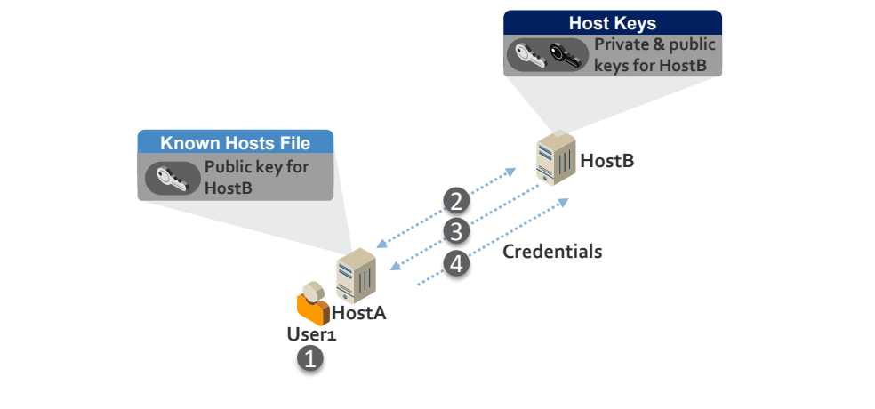
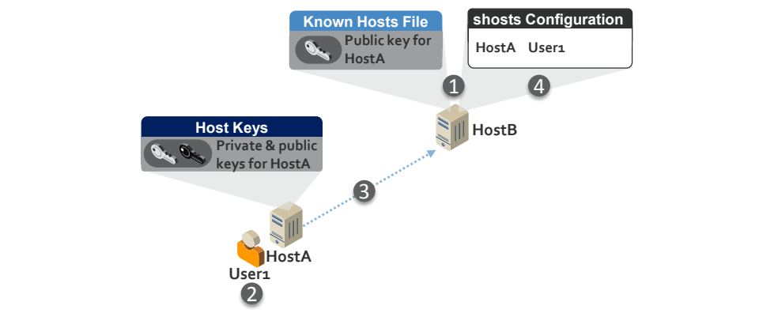
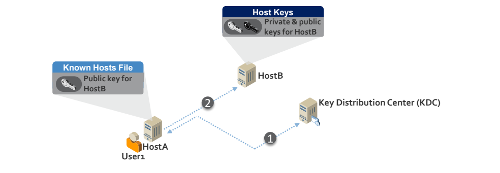
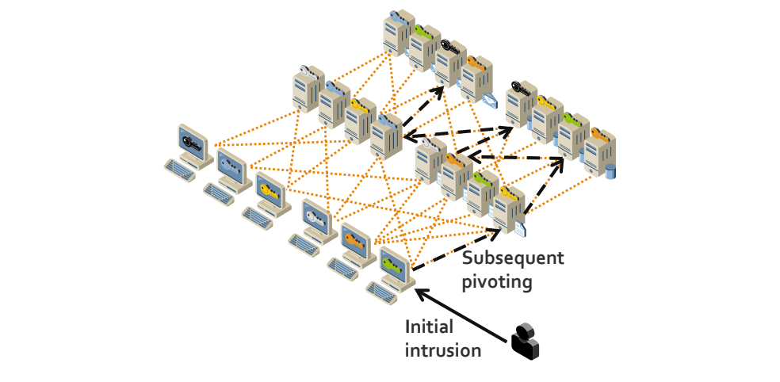
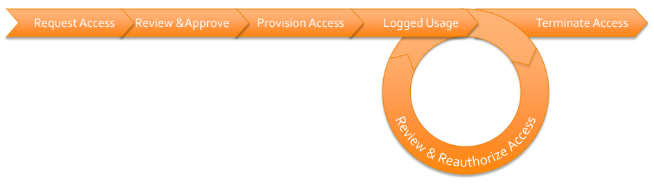

NIST IR 7966 日本語訳
英語タイトル : Security of Interactive and Automated Access Management Using Secure Shell (SSH)日本語タイトル : Secure Shell（SSH）を用いた対話型および自動化されたアクセス管理のセキュリティ
公開日 : 2015-10-15
原文URL : https://csrc.nist.gov/pubs/ir/7966/final
翻訳編集 : 自動生成（有志による非公式の日本語訳）, 原文取得日 : 2026-10-31, 訳文 : 480 / 481 ブロック
[要約] NIST IR 7966 は、組織が、エンタープライズにおける Secure Shell（SSH）と SSH のアクセス管理の基本を、SSH ユーザ鍵の管理を中心に理解できるようにすることを目的とした刊行物です。ユーザやホストが他のホストへ、しばしば非常に高い権限で、対話的または自動的にアクセスする必要があることが背景にあり、SSH 鍵によるアクセスのセキュリティはこれまで大きく見過ごされてきたとされています。SSH の基本、SSH にもとづくアクセスにおける脆弱性、管理のための推奨プラクティスを説明します。SSH にもとづくアクセス管理の計画と実装、ソリューションの計画と導入も扱い、付録では SP 800-53 の管理策やサイバーセキュリティフレームワークのサブカテゴリとの対応づけを示します。
NISTIR 7966
NISTIR 7966
Security of Interactive and Automated Access Management Using Secure Shell (SSH)
Secure Shell（SSH）を用いた対話型および自動化されたアクセス管理のセキュリティ
Tatu Ylonen
Paul Turner
Karen Scarfone
Murugiah Souppaya
Tatu Ylonen
Paul Turner
Karen Scarfone
Murugiah Souppaya
This publication is available free of charge from: http://dx.doi.org/10.6028/NIST.IR.7966
この刊行物は次の場所から無料で入手できます。http://dx.doi.org/10.6028/NIST.IR.7966
［NIST のロゴ。公的な標章のため、この非公式サイトには掲載していません。原本 PDF を参照してください。］
NISTIR 7966
NISTIR 7966
Security of Interactive and Automated Access Management Using Secure Shell (SSH)
Secure Shell（SSH）を用いた対話型および自動化されたアクセス管理のセキュリティ
Tatu Ylonen
SSH Communications Security
Helsinki, Finland
Tatu Ylonen
SSH Communications Security
Helsinki, Finland
Paul Turner
Venafi
Salt Lake City, UT
Paul Turner
Venafi
Salt Lake City, UT
Karen Scarfone
Scarfone Cybersecurity
Clifton, VA
Karen Scarfone
Scarfone Cybersecurity
Clifton, VA
Murugiah Souppaya
Computer Security Division
Information Technology Laboratory
Murugiah Souppaya
Computer Security Division
Information Technology Laboratory
This publication is available free of charge from: http://dx.doi.org/10.6028/NIST.IR.7966
この刊行物は次の場所から無料で入手できます。http://dx.doi.org/10.6028/NIST.IR.7966
October 2015
2015年10月
U.S. Department of Commerce
Penny Pritzker, Secretary
U.S. Department of Commerce
Penny Pritzker, Secretary
National Institute of Standards and Technology
National Institute of Standards and Technology
Willie May, Under Secretary of Commerce for Standards and Technology and Director
Willie May、商務次官（標準・技術担当）兼所長
National Institute of Standards and Technology Internal Report 7966
50 pages (October 2015)
National Institute of Standards and Technology Internal Report 7966
50 pages (October 2015)
This publication is available free of charge from: http://dx.doi.org/10.6028/NIST.IR.7966
この刊行物は次の場所から無料で入手できます。http://dx.doi.org/10.6028/NIST.IR.7966
Certain commercial entities, equipment, or materials may be identified in this document in order to describe an experimental procedure or concept adequately. Such identification is not intended to imply recommendation or endorsement by NIST, nor is it intended to imply that the entities, materials, or equipment are necessarily the best available for the purpose.
この文書では、実験の手順または概念を適切に説明するために、特定の商業的な事業体、機器、または資材が特定されている場合があります。このような特定は、NIST による推奨または支持を意味するものではなく、それらの事業体、資材、または機器がその目的に必ずしも最適であることを意味するものでもありません。
There may be references in this publication to other publications currently under development by NIST in accordance with its assigned statutory responsibilities. The information in this publication, including concepts and methodologies, may be used by Federal agencies even before the completion of such companion publications. Thus, until each publication is completed, current requirements, guidelines, and procedures, where they exist, remain operative. For planning and transition purposes, Federal agencies may wish to closely follow the development of these new publications by NIST.
この刊行物には、NIST が法令上の責務に従って策定中の他の刊行物への言及が含まれている場合があります。概念や方法論を含むこの刊行物の情報は、そうした関連刊行物の完成前であっても、連邦機関が利用してもよいです。したがって、各刊行物が完成するまでは、現行の要件、ガイドライン、手順が存在する場合には、それらが引き続き有効です。計画および移行のため、連邦機関は、NIST によるこれらの新しい刊行物の策定状況を注意深く追うことを検討してもよいです。
Organizations are encouraged to review all draft publications during public comment periods and provide feedback to NIST. All NIST Computer Security Division publications, other than the ones noted above, are available at http://csrc.nist.gov/publications.
組織は、パブリックコメント期間中にすべてのドラフト刊行物を確認し、NIST にフィードバックを提供すべきです。上記以外の NIST のコンピュータセキュリティ部門の刊行物はすべて、http://csrc.nist.gov/publications で入手できます。
Comments on this publication may be submitted to:
この刊行物に対するコメントは次の宛先に提出できます:
National Institute of Standards and Technology
Attn: Computer Security Division, Information Technology Laboratory
100 Bureau Drive (Mail Stop 8930) Gaithersburg, MD 20899-8930
National Institute of Standards and Technology
Attn: Computer Security Division, Information Technology Laboratory
100 Bureau Drive (Mail Stop 8930) Gaithersburg, MD 20899-8930
Reports on Computer Systems Technology
コンピュータシステム技術に関する報告書
The Information Technology Laboratory (ITL) at the National Institute of Standards and Technology (NIST) promotes the U.S. economy and public welfare by providing technical leadership for the Nation’s measurement and standards infrastructure. ITL develops tests, test methods, reference data, proof of concept implementations, and technical analyses to advance the development and productive use of information technology. ITL’s responsibilities include the development of management, administrative, technical, and physical standards and guidelines for the cost-effective security and privacy of other than national security-related information in Federal information systems.
米国国立標準技術研究所（NIST）の情報技術研究所（ITL）は、米国の計測・標準インフラストラクチャーに対する技術的リーダーシップを提供することで、米国の経済と公共の福祉を促進しています。ITL は、情報技術の開発と生産的な利用を進めるため、テスト、テスト方法、参照データ、概念実証の実装、技術分析を開発しています。ITL の責務には、連邦情報システムにおける、国家安全保障に関するもの以外の情報について、費用対効果の高いセキュリティとプライバシーのための管理・行政・技術・物理面の標準およびガイドラインの策定が含まれます。
Abstract
概要
Users and hosts must be able to access other hosts in an interactive or automated fashion, often with very high privileges. This is necessary for a variety of reasons, including file transfers, disaster recovery, privileged access management, software and patch management, and dynamic cloud provisioning. Accessing other hosts is often accomplished using the Secure Shell (SSH) protocol. The SSH protocol supports several mechanisms for interactive and automated authentication. Management of this access requires proper provisioning, termination, and monitoring processes. However, the security of SSH key-based access has been largely ignored to date. This publication assists organizations in understanding the basics of SSH interactive and automated access management in an enterprise, focusing on the management of SSH user keys.
ユーザーとホストは、対話型または自動化された方法で他のホストにアクセスできなければならず、その際にはきわめて高い権限が必要となることも少なくありません。これは、ファイル転送、災害復旧、特権アクセス管理、ソフトウェアおよびパッチの管理、動的なクラウドプロビジョニングなど、さまざまな理由で必要になります。他のホストへのアクセスには、Secure Shell（SSH）プロトコルが使われることが多くあります。SSH プロトコルは、対話型および自動化された認証のための複数のメカニズムをサポートしています。このアクセスの管理には、適切なプロビジョニング、終了、監視のプロセスが必要です。しかし、SSH の鍵に基づくアクセスのセキュリティは、これまでほとんど顧みられてきませんでした。この刊行物は、組織がエンタープライズにおける SSH の対話型および自動化されたアクセス管理の基本を理解できるよう支援するもので、SSH ユーザー鍵の管理に焦点を当てています。
Keywords
キーワード
access control; authentication; automated access management; device authentication; interactive access management; Secure Shell (SSH); user authentication
アクセス制御、認証、自動化されたアクセス管理、デバイス認証、対話型アクセス管理、Secure Shell（SSH）、ユーザー認証
Acknowledgments
謝辞
The authors wish to thank their colleagues who reviewed drafts of this document and contributed to its technical content.
著者らは、この文書のドラフトをレビューし、その技術的内容に貢献してくれた同僚に感謝します。
Trademark Information
商標情報
All registered trademarks or trademarks belong to their respective organizations.
すべての登録商標または商標は、それぞれの組織に帰属します。
Table of Contents
目次
1. Introduction
1. はじめに
1.1 Purpose and Scope
1.1 目的と適用範囲
The purpose of this document is to assist organizations in understanding the basics of Secure Shell (SSH) and SSH access management in an enterprise, focusing on the management of SSH user keys.
この文書の目的は、組織がエンタープライズにおける Secure Shell（SSH）と SSH アクセス管理の基本を理解できるよう支援することであり、SSH ユーザー鍵の管理に焦点を当てています。
1.2 Audience
1.2 想定読者
This document is for security managers, engineers, administrators, and others who are responsible for planning, acquiring, testing, implementing, and maintaining SSH solutions. Portions of the document may be of interest to executives and SSH users.
この文書は、SSH ソリューションの計画、調達、テスト、実装、保守に責任を負うセキュリティ管理者、エンジニア、管理者などを対象としています。文書の一部は、経営幹部や SSH ユーザーの関心を引く可能性があります。
1.3 Document Structure
1.3 文書の構成
The remainder of this document is organized into the following sections and appendices:
この文書の以降の部分は、次の節と付録で構成されています。
•Section 2 discusses the basics of access management and automated access management.
•第 2 節では、アクセス管理および自動化されたアクセス管理の基本を説明します。
•Section 3 examines the basics of SSH.
•第 3 節では、SSH の基本を検討します。
•Section 4 describes the primary categories of vulnerabilities in SSH user key management.
•第 4 節では、SSH ユーザー鍵の管理における脆弱性の主要な分類を説明します。
•Section 5 lists recommended practices for SSH-based access management.
•第 5 節では、SSH ベースのアクセス管理のための推奨プラクティスを挙げます。
•Section 6 explains planning and implementation processes for SSH-based access management.
•第 6 節では、SSH ベースのアクセス管理の計画と実装のプロセスを説明します。
•Section 7 discusses solution planning and deployment.
•第 7 節では、ソリューションの計画と展開について論じます。
•Appendix A provides a mapping to NIST Special Publication (SP) 800-53 Revision 4 security controls.1
•付録 A では、NIST 特別刊行物（SP）800-53 改訂第 4 版のセキュリティ管理策との対応付けを示します。1
•Appendix B provides a mapping to Cybersecurity Framework Version 1.0 subcategories.
•付録 B では、サイバーセキュリティフレームワーク バージョン 1.0 のサブカテゴリへのマッピングを示します。
•Appendix C lists criteria for selecting and procuring tools for managing SSH keys.
•付録 C では、SSH 鍵を管理するツールの選定と調達の基準を挙げます。
•Appendix D defines selected acronyms and abbreviations used in the document.
•付録 D では、この文書で使用する主な頭字語と略語を定義します。
•Appendix E defines selected terms used in the document.
•付録 E では、この文書で使用する主な用語を定義します。
•Appendix F lists references.
•付録 F では、参考文献を挙げます。
2. The Basics of Access Management and Automated Access Management
2. アクセス管理および自動化されたアクセス管理の基本
Controlling access to information systems is critical for information security. Access controls exist on many levels and use many technologies. The levels include physical restrictions on access to hardware; logical controls for accessing network interfaces, hardware management ports on servers, virtualization hypervisors, operating system (OS) user accounts, and information through database systems; and logical controls implemented by applications.
情報システムへのアクセスを制御することは、情報セキュリティにとって重要です。アクセス制御は多くのレベルに存在し、多くの技術を使用します。そのレベルには、ハードウェアへのアクセスに対する物理的な制限、ネットワークインターフェース、サーバーのハードウェア管理ポート、仮想化ハイパーバイザー、オペレーティングシステム（OS）のユーザーアカウント、データベースシステムを通じた情報へのアクセスに対する論理的な制御、およびアプリケーションが実装する論理的な制御があります。
Information security (confidentiality, integrity, and availability) is compromised if controls at any of these levels fail. Breaches at different levels have different implications. Generally, a breach at the hardware, hypervisor, or OS level is more serious than a breach at the application level. For example, breaking into a database account on a server may permit reading, modifying, and destroying any data in a database, bypassing normal database-level controls. Breaking into a “root” (administrator) account generally permits doing this to all data on all accounts on the system, plus installing deeply hidden backdoors, modifying the operating system, corrupting data, or rendering the system unbootable.
これらのいずれかのレベルで制御が機能しなくなると、情報セキュリティ（機密性、完全性、可用性）が損なわれます。レベルが異なれば、侵害の影響も異なります。一般に、ハードウェア、ハイパーバイザー、または OS のレベルでの侵害は、アプリケーションレベルでの侵害よりも深刻です。たとえば、サーバー上のデータベースアカウントに侵入されると、通常のデータベースレベルの制御を回避して、データベース内のあらゆるデータの読み取り、変更、破壊が可能になる場合があります。「root」（管理者）アカウントに侵入されると、一般に、システム上のすべてのアカウントにあるすべてのデータに対して同じ操作を行えるほか、深く隠されたバックドアの設置、オペレーティングシステムの改変、データの破損、システムの起動不能化も可能になります。
Most operating systems use user accounts as the primary unit of access control. In this document, a user account means an OS level user account unless otherwise specified. User accounts correspond to people (including system administrators) and service accounts are used for running application software or are used internally by the OS. It is worth noting that many applications implement their own user accounts that do not correspond to OS level user accounts (they essentially share the service account of the application); however, such application-level accounts are generally beyond the scope of this document.
ほとんどのオペレーティングシステムは、アクセス制御の基本単位としてユーザーアカウントを使用します。この文書では、特に断らない限り、ユーザーアカウントは OS レベルのユーザーアカウントを指します。ユーザーアカウントは人（システム管理者を含む）に対応し、サービスアカウントはアプリケーションソフトウェアの実行に使われるか、OS 内部で使用されます。多くのアプリケーションは、OS レベルのユーザーアカウントに対応しない独自のユーザーアカウントを実装しています。こうしたアカウントは、実質的にはそのアプリケーションのサービスアカウントを共有しています。ただし、このようなアプリケーションレベルのアカウントは、一般にこの文書の適用範囲外です。
User accounts may be stored in a centralized repository (e.g., Active Directory [AD] or Lightweight Directory Access Protocol [LDAP]) or may be configured locally on a system. A user account defined locally is generally distinct on each system (separate password, separate home directory, etc.), even if the same account name is used on multiple computers, while user accounts defined in a centralized repository are often available on more than one computer and share the same home directory (on a networked file system). Service accounts are very commonly local accounts, and accounts for people are often stored in a directory.
ユーザーアカウントは、集中管理されたリポジトリ（たとえば Active Directory［AD］や Lightweight Directory Access Protocol［LDAP］）に格納される場合も、システム上でローカルに構成される場合もあります。ローカルに定義されたユーザーアカウントは、複数のコンピューターで同じアカウント名が使われていても、一般に各システムで別個のもの（別々のパスワード、別々のホームディレクトリなど）になります。一方、集中管理されたリポジトリに定義されたユーザーアカウントは、複数のコンピューターで利用できることが多く、（ネットワークファイルシステム上の）同じホームディレクトリを共有します。サービスアカウントはローカルアカウントであることが非常に多く、人のアカウントはディレクトリに格納されていることが多くあります。
In a very real sense, access control is the essence of information security. Other security technologies primarily exist to implement and enforce access controls, make it harder to analyze and attack access control systems, limit the impact of actual breaches, evaluate the current state of protections, detect suspicious activity, counteract undesired activity, or help analyze what happened after the fact. The critical balance in information security is between the need to grant access and the need to limit access. Consequently, access must be provisioned (based on proper justification for that level of access) and it must be eventually terminated (e.g., when an employee leaves the role that justified the access, when a client system or application requiring automated access is decommissioned).
実際のところ、アクセス制御は情報セキュリティの本質です。ほかのセキュリティ技術は主に、アクセス制御を実装して強制すること、アクセス制御システムの分析と攻撃を難しくすること、実際の侵害による影響を限定すること、保護の現状を評価すること、不審な活動を検知すること、望ましくない活動に対抗すること、あるいは事後に何が起きたかの分析を助けることのために存在します。情報セキュリティで重要なのは、アクセスを付与する必要性と、アクセスを制限する必要性とのバランスです。したがって、アクセスは（そのレベルのアクセスに対する適切な根拠に基づいて）プロビジョニングされなければならず、いずれは終了されなければなりません（たとえば、従業員がアクセスの根拠となっていた役割を離れたとき、自動化されたアクセスを必要とするクライアントシステムやアプリケーションが廃止されたとき）。
Access to hosts has become increasingly automated. Examples of this automation include file transfers, disaster recovery, privileged access management, software and patch management, and dynamic cloud provisioning. This automation involves transferring data and executing commands, such as having hosts reconfigure other hosts. Thus, hosts must access other hosts, often with very high privileges. Unfortunately, there has been little planning and oversight of automated and interactive machine-to-machine access control. Instead, such access has been added and configured on an ad hoc basis by system administrators, vendors, and integrators as part of other projects, without formal access control lifecycle management (e.g., standardized provisioning and termination processes, access token management (e.g., periodic password changes)). This publication explores the field of SSH-based access management, with a strong focus on security issues and how to best address them.
ホストへのアクセスは、ますます自動化されてきています。この自動化の例には、ファイル転送、災害復旧、特権アクセス管理、ソフトウェアおよびパッチの管理、動的なクラウドプロビジョニングがあります。この自動化には、データの転送やコマンドの実行（あるホストが別のホストを再構成する場合など）が伴います。そのため、ホストはしばしば非常に高い権限で他のホストにアクセスします。残念ながら、自動化されたマシン間アクセス制御と対話型のマシン間アクセス制御については、ほとんど計画も監督もされてきませんでした。そうしたアクセスは、正式なアクセス制御のライフサイクル管理（たとえば、標準化されたプロビジョニングと終了のプロセス、アクセストークンの管理（たとえば定期的なパスワード変更））を伴わず、ほかのプロジェクトの一環として、システム管理者、ベンダー、インテグレーターによってアドホックに追加・構成されてきました。この刊行物では、SSH ベースのアクセス管理の分野を取り上げ、セキュリティ上の問題とその最善の対処方法に重点を置いています。
3. The Basics of SSH
3. SSH の基本
Secure Shell (SSH) is a protocol for securely logging into a remote host and executing commands on that host (e.g., administrative commands). What distinguishes the SSH protocol from earlier remote administration protocols, such as telnet, remote shell (rsh), remote login (rlogin), and remote copy (rcp), is its built-in support for robust security features such as secure user and device authentication and transmission encryption. SSH has almost completely taken the place of these insecure remote administration protocols.
Secure Shell（SSH）は、リモートホストに安全にログインし、そのホスト上でコマンド（たとえば管理コマンド）を実行するためのプロトコルです。SSH プロトコルが、telnet、リモートシェル（rsh）、リモートログイン（rlogin）、リモートコピー（rcp）などの従来のリモート管理プロトコルと異なるのは、安全なユーザー認証とデバイス認証や伝送の暗号化といった堅牢なセキュリティ機能を組み込みでサポートしている点です。SSH は、これらの安全でないリモート管理プロトコルにほぼ完全に取って代わりました。
Today, SSH software is natively included and used as the primary remote administration mechanism for many operating systems and devices, including Linux, Unix, routers, firewalls, network appliances, security appliances, and other systems. It is also embedded behind the scenes into a wide variety of Information Technology (IT), networking, and security technologies, including file transfer, systems management, identity management, and privileged access management. In addition to manually remotely connecting to and managing hosts and devices, SSH is used for integrating hosts and automating their operation.
現在では、Linux、Unix、ルーター、ファイアウォール、ネットワークアプライアンス、セキュリティアプライアンスなど、多くのオペレーティングシステムやデバイスに SSH ソフトウェアが標準で含まれており、主要なリモート管理メカニズムとして使われています。SSH は、ファイル転送、システム管理、ID 管理、特権アクセス管理など、情報技術（IT）、ネットワーキング、セキュリティの幅広い技術の内部にも、裏側で組み込まれています。ホストやデバイスに手動でリモート接続して管理することに加えて、SSH はホストの統合とその運用の自動化にも使われています。
This section examines the basics of Secure Shell (SSH) version 2.0. First, Section 3.1 explores SSH protocol basics. Next, Section 3.2 discusses the most common use cases for SSH, including the use case scenario of interest in this publication: user and automated access. Section 3.3 examines SSH server authentication, while Section 3.4 details SSH client authentication.
この節では、Secure Shell（SSH）バージョン 2.0 の基本を検討します。まず、3.1 節で SSH プロトコルの基本を探ります。次に、3.2 節で SSH の最も一般的なユースケースを説明します。これには、この刊行物が対象とするユースケースシナリオであるユーザーアクセスと自動化されたアクセスも含まれます。3.3 節では SSH サーバー認証を検討し、3.4 節では SSH クライアント認証を詳しく説明します。
3.1 Protocol Basics
3.1 プロトコルの基本
The SSH protocol has a typical client/server architecture. An SSH client application on host A initiates a connection to an SSH server application on host B. These two hosts negotiate encryption algorithms for their transmissions, then establish a session key and perform device authentication for the server host (host B)2, and finally send client (or user) authentication credentials (e.g., username and password) to the server. Assuming that this authentication succeeds, an SSH connection is said to be established between the hosts, ready for use.
SSH プロトコルは、典型的なクライアント/サーバーアーキテクチャーを備えています。ホスト A 上の SSH クライアントアプリケーションが、ホスト B 上の SSH サーバーアプリケーションへの接続を開始します。この 2 つのホストは、伝送のための暗号アルゴリズムをネゴシエートし、次にセッション鍵を確立してサーバーホスト（ホスト B）のデバイス認証を行い2、最後にクライアント（またはユーザー）の認証クレデンシャル（たとえばユーザー名とパスワード）をサーバーに送ります。この認証が成功すると、ホスト間に SSH 接続が確立され、使用できる状態になったといいます。
The current version of the SSH protocol is 2.0. Earlier versions of the protocol have serious known vulnerabilities that preclude their use. For more information on the formal definition of the SSH protocol version 2.0, see [RFC4251], [RFC4252], [RFC4253], and [RFC4254]. All references to the SSH protocol in this publication are to version 2.0 unless explicitly stated otherwise.
SSH プロトコルの現行バージョンは 2.0 です。それ以前のバージョンには、使用を妨げる深刻な既知の脆弱性があります。SSH プロトコルバージョン 2.0 の正式な定義の詳細は、[RFC4251]、[RFC4252]、[RFC4253]、[RFC4254] を参照してください。この刊行物における SSH プロトコルへの言及は、明記されていない限り、すべてバージョン 2.0 を指します。
3.2 Common SSH Use Cases
3.2 SSH の一般的なユースケース
There are three common use cases for SSH:
SSH には、一般的なユースケースが 3 つあります。
•Interactive use. SSH is used for managing and configuring Unix and Linux computers, networking equipment, and various other types of hosts remotely. SSH is also used for running applications remotely (particularly text-based legacy applications).
•対話的な使用。SSH は、Unix や Linux のコンピューター、ネットワーク機器、その他さまざまな種類のホストをリモートで管理・構成するために使われます。SSH は、アプリケーション（特にテキストベースのレガシーアプリケーション）をリモートで実行するためにも使われます。
•File transfers. SSH is used as the foundation of the Secure Copy (scp) and Secure File Transfer Protocol (SFTP) protocols. These protocols are used to transfer files between hosts while leveraging the security capabilities built into SSH.
•ファイル転送。SSH は、Secure Copy（scp）プロトコルと Secure File Transfer Protocol（SFTP）の基盤として使われます。これらのプロトコルは、SSH に組み込まれたセキュリティ機能を活用しながらホスト間でファイルを転送するために使われます。
•Point-to-point tunneling. SSH can be used to implement a virtual private network (VPN) tunnel to protect data transmitted between two hosts. One or both of these hosts may be acting as a gateway for other hosts behind it.
•ポイントツーポイントのトンネリング。SSH は、2 つのホスト間で送信されるデータを保護する仮想プライベートネットワーク（VPN）トンネルの実装に使えます。これらのホストの一方または両方が、背後にある他のホストのゲートウェイとして動作している場合があります。
This publication covers all of these use cases in the context of user and automated access. Automated access refers to accessing a host from another host in an automated fashion (without human intervention). SSH is frequently used for automated access for a variety of purposes, including managing large IT environments, integrating applications, and provisioning virtual machines in cloud services.
この刊行物は、これらすべてのユースケースを、ユーザーアクセスと自動化されたアクセスの文脈で扱います。自動化されたアクセスとは、あるホストから別のホストへ、自動化された方法で（人の介在なしに）アクセスすることを指します。SSH は、大規模な IT 環境の管理、アプリケーションの統合、クラウドサービスにおける仮想マシンのプロビジョニングなど、さまざまな目的で自動化されたアクセスに頻繁に使われます。
Automated access is commonly used with functional accounts, system accounts, service accounts, and other non-interactive user accounts (sometimes also called non-user accounts). Such accounts are used by operating systems, server applications (e.g., databases), and other applications for running processes. Automated access is also frequently used for file transfer functions.
自動化されたアクセスは、機能アカウント、システムアカウント、サービスアカウント、その他の非対話型ユーザーアカウント（非ユーザーアカウントと呼ばれることもあります）とともに使われるのが一般的です。このようなアカウントは、オペレーティングシステム、サーバーアプリケーション（たとえばデータベース）、その他のアプリケーションがプロセスを実行するために使用します。自動化されたアクセスは、ファイル転送機能にも頻繁に使われます。
Automated access may be unrestricted, allowing any commands to be executed, or may be limited to specific commands or operations, such as file transfers (perhaps limited to a specific directory). Organizations should limit automated access so that only the necessary commands can be executed and only the necessary resources can be engaged.
自動化されたアクセスは、あらゆるコマンドの実行を許す無制限のものである場合もあれば、ファイル転送（特定のディレクトリに限定される場合もあります）など、特定のコマンドや操作に限定される場合もあります。組織は、必要なコマンドだけが実行でき、必要なリソースだけが使われるように、自動化されたアクセスを制限すべきです。
3.3 Server Authentication
3.3 サーバー認証
The confidentiality and integrity of SSH rely on strong authentication of both the SSH server and client. Authentication of the SSH server by the client is performed with public key cryptography via public keys explicitly trusted by the client or certificates issued by a certification authority—public keys are more commonly used than certificates.3
SSH の機密性と完全性は、SSH サーバーとクライアントの両方に対する強力な認証に依存しています。クライアントによる SSH サーバーの認証は、公開鍵暗号を用いて、クライアントが明示的に信頼する公開鍵、または認証局が発行した証明書によって行われます。公開鍵のほうが証明書よりも一般的に使われています。3

HostAにいるUser1がHostBへ接続する様子の図です。HostBからの吹き出し「Host Keys」には「Private & public keys for HostB」（HostBの秘密鍵と公開鍵）とあります。HostAからの吹き出し「Known Hosts File」には「Public key for HostB」（HostBの公開鍵）とあり、その横に手順5があります。HostAとHostBの間の点線の矢印には2（HostBへ）、3（HostAへ。横に公開鍵のアイコン）、6（双方向）の番号が付いています。User1の下に手順1と4があります。凡例は鍵のアイコンで「Public Key」（公開鍵）と「Private Key」（秘密鍵）を示しています。
Figure 3-1: Process for Initially Trusting an SSH Server’s Public Key
図 3-1: SSH サーバーの公開鍵を最初に信頼するプロセス
Figure 3-1 illustrates the process for initially trusting an SSH server’s public key:
図 3-1 は、SSH サーバーの公開鍵を最初に信頼するプロセスを示しています。
1.User1 initiates its first login to HostB.
1.User1 が HostB への最初のログインを開始します。
2.HostA connects to HostB.
2.HostA が HostB に接続します。
3.HostB sends its public key to HostA.4
3.HostB が自身の公開鍵を HostA に送ります。4
4.The public key sent by HostB is displayed for User1. User1 verifies that it is the correct public key for HostB by comparing it against the value received via a different communication channel.
4.HostB が送った公開鍵が User1 に表示されます。User1 は、別の通信チャネルで受け取った値と比較して、それが HostB の正しい公開鍵であることを確認します。
5.HostA stores HostB’s public key in User1’s known hosts file along with the name of HostB in order to authenticate HostB during future connections without prompting the user to verify that the key is the correct public key for HostB.
5.HostA は、以降の接続で HostB を認証するために、HostB の名前とともに HostB の公開鍵を User1 の known hosts ファイルに保存します。これにより、その鍵が HostB の正しい公開鍵であるかをユーザーに確認させることなく認証できます。
6.HostA authenticates HostB using HostB’s public key and establishes an encrypted connection with HostB.
6.HostA は、HostB の公開鍵を用いて HostB を認証し、HostB との間に暗号化された接続を確立します。
Note: If the User1 account is being used by an automated process, the user who reviews the public key on first connection is typically the administrator for the automated process. To avoid this process, the administrator can prepopulate the known hosts file with HostB’s public key.
注: User1 アカウントが自動化されたプロセスによって使われている場合、最初の接続時に公開鍵を確認するユーザーは、通常、その自動化されたプロセスの管理者です。このプロセスを避けるために、管理者は known hosts ファイルに HostB の公開鍵をあらかじめ登録しておくことができます。
Care must be taken by users and administrators in ensuring that the correct public keys for each server are trusted as known host keys to prevent man-in-the-middle attacks. In addition, a man-in-the-middle attack can also be launched if the attacker is able to get a copy of the server’s private key. Wherever possible, users should have limited ability to change known host key configurations. In addition, known hosts files should be hashed to minimize information available to potential attackers.
中間者攻撃を防ぐため、ユーザーと管理者は、各サーバーの正しい公開鍵が既知のホスト鍵として信頼されるよう注意を払わなければなりません。また、攻撃者がサーバーの秘密鍵のコピーを入手できる場合にも、中間者攻撃を仕掛けられる可能性があります。可能な限り、ユーザーが既知のホスト鍵の設定を変更できる範囲を限定すべきです。さらに、潜在的な攻撃者が利用できる情報を最小限にするため、known hosts ファイルはハッシュ化すべきです。
3.4 Client Authentication
3.4 クライアント認証
Client authentication refers to the authentication of interactive users (administrators and other users) or automated processes operating on SSH clients. Authentication occurs for a particular account on the server.
クライアント認証とは、SSH クライアント上で動作する対話型ユーザー（管理者やその他のユーザー）または自動化されたプロセスの認証を指します。認証は、サーバー上の特定のアカウントに対して行われます。
The SSH protocol supports several mechanisms for authenticating users, including passwords, host-based authentication, Kerberos, and public key authentication. All these authentication methods fundamentally rely on some secret information, and when used for automated access, this secret information must be stored locally or be otherwise accessible. One or more client authentication methods can be enabled on each SSH server. Each authentication method features pros and cons for security and flexibility—these pros/cons are often different for interactive users and automated process. Organizations must carefully evaluate and select the client authentication method(s) that are approved for use in their environment, disabling others. This section briefly discusses these forms of client authentication, focusing on their relevancy and appropriateness for interactive users and automated processes.
SSH プロトコルは、パスワード、ホストベース認証、Kerberos、公開鍵認証など、ユーザーを認証するための複数のメカニズムをサポートしています。これらの認証方法はいずれも、基本的に何らかの秘密情報に依存しており、自動化されたアクセスに使う場合は、この秘密情報をローカルに保存するか、何らかの方法でアクセス可能にしておかなければなりません。各 SSH サーバーでは、1 つ以上のクライアント認証方法を有効にできます。それぞれの認証方法には、セキュリティと柔軟性の面で長所と短所があり、その長所と短所は、対話型ユーザーと自動化されたプロセスとで異なることが少なくありません。組織は、自らの環境での使用を承認するクライアント認証方法を慎重に評価して選択し、それ以外を無効にしなければなりません。この節では、これらの形態のクライアント認証を、対話型ユーザーと自動化されたプロセスにとっての関連性と適切さに焦点を当てて簡潔に説明します。
3.4.1 Password Authentication
3.4.1 パスワード認証
There are two kinds of password authentication mechanisms in SSH: basic password authentication and keyboard-interactive authentication. Basic password authentication is a legacy method defined by the SSH protocol standards. Keyboard-interactive authentication is used in most modern environments, and can support challenge-response authentication and one-time passwords in addition to traditional password authentication. LDAP may be used in lieu of local credential databases (e.g., password files) to reduce the number of passwords users must remember and manage. With both password and keyboard-interactive authentication, usernames, passwords, and challenge responses are sent from the client (HostA) to the server (HostB) across the encrypted SSH connection. This protects the credentials in transit across the network but they are still subject to compromise in a man-in-the-middle attack. Password authentication is more commonly used for interactive users, but less commonly for automated access, although it is sometimes seen with hard-coded passwords in scripts and management systems.
SSH のパスワード認証メカニズムには、基本パスワード認証とキーボードインタラクティブ認証の 2 種類があります。基本パスワード認証は、SSH プロトコル標準で定義されたレガシーな方法です。キーボードインタラクティブ認証は、現代のほとんどの環境で使われており、従来のパスワード認証に加えて、チャレンジレスポンス認証やワンタイムパスワードをサポートできます。ユーザーが記憶し管理しなければならないパスワードの数を減らすため、ローカルのクレデンシャルデータベース（たとえばパスワードファイル）の代わりに LDAP を使うことがあります。パスワード認証とキーボードインタラクティブ認証のどちらの場合も、ユーザー名、パスワード、チャレンジレスポンスは、暗号化された SSH 接続を通じてクライアント（HostA）からサーバー（HostB）へ送られます。これにより、ネットワークを通過する間のクレデンシャルは保護されますが、中間者攻撃では依然として危殆化のおそれがあります。パスワード認証は、対話型ユーザーでより一般的に使われ、自動化されたアクセスではあまり使われませんが、スクリプトや管理システムにパスワードが埋め込まれている例が見られることもあります。

HostAにいるUser1がHostBへ接続する様子の図です。HostBからの吹き出し「Host Keys」には「Private & public keys for HostB」（HostBの秘密鍵と公開鍵）、HostAからの吹き出し「Known Hosts File」には「Public key for HostB」（HostBの公開鍵）とあります。HostAとHostBの間を2、3、4の番号付きの点線の矢印が結び、HostBへ向かう矢印4の横に「Credentials」（認証情報）とあります。User1の下に手順1があります。
Figure 3-2: Password Authentication Process
図 3-2: パスワード認証のプロセス
Figure 3-2 illustrates the password authentication process:
図 3-2 は、パスワード認証のプロセスを示しています。
1.User1 initiates a login to HostB.
1.User1 が HostB へのログインを開始します。
2.HostA authenticates HostB using the HostB public key stored in User1’s known hosts file and establishes an encrypted connection with HostB.5
2.HostA は、User1 の known hosts ファイルに保存された HostB の公開鍵を用いて HostB を認証し、HostB との間に暗号化された接続を確立します。5
3.User1 is prompted for a username and password and potentially other credentials (for keyboard-interactive authentication) required by HostB.
3.User1 は、HostB が要求するユーザー名とパスワード、場合によってはその他のクレデンシャル（キーボードインタラクティブ認証の場合）の入力を求められます。
4.The credentials are sent to HostB over the encrypted connection. HostB authenticates User1 by verifying the credentials provided by User1.
4.クレデンシャルは、暗号化された接続を通じて HostB に送られます。HostB は、User1 が提供したクレデンシャルを検証することで User1 を認証します。
For interactive users, password authentication provides users mobility, as they can enter their password anywhere from which they have SSH access. However, if interactive users are required to remember and manage different passwords for multiple systems, it can create administrative and security challenges.
対話型ユーザーにとって、パスワード認証は、SSH にアクセスできる場所ならどこからでもパスワードを入力できるため、モビリティをもたらします。しかし、対話型ユーザーが複数のシステムごとに異なるパスワードを記憶して管理することを求められると、管理上およびセキュリティ上の課題が生じるおそれがあります。
Password authentication is generally not recommended for automated processes because it doesn’t provide the level of access control available with other authentication methods, especially public key authentication.
パスワード認証は、ほかの認証方法、特に公開鍵認証で得られるレベルのアクセス制御を提供できないため、自動化されたプロセスには一般に推奨されません。
If password authentication is used for interactive users or automated access, the passwords should be rotated frequently in accordance with the server organization’s password policy (which should also contain requirements such as minimum password length, minimum password complexity, etc.)
対話型ユーザーまたは自動化されたアクセスにパスワード認証を使う場合、パスワードは、サーバー側の組織のパスワードポリシー（最小パスワード長、最小パスワード複雑性などの要件も含めるべきです）に従って頻繁にローテーションすべきです。
3.4.2 Host-Based Authentication
3.4.2 ホストベース認証
Host-based authentication uses a server host's (HostA) host key—the key typically used by clients to verify the server’s identity—to authenticate that server (HostA) to another server (HostB) and to vouch for the identity of the user (User1) on the client side server (HostA). A configuration file (.shosts) can be used with any user account on the destination server (HostB) to specify which users on which hosts can log into that account without further authentication.
ホストベース認証は、サーバーホスト（HostA）のホスト鍵（通常、クライアントがサーバーの身元を検証するために使う鍵）を用いて、そのサーバー（HostA）を別のサーバー（HostB）に対して認証し、クライアント側サーバー（HostA）上のユーザー（User1）の身元を保証します。宛先サーバー（HostB）上の任意のユーザーアカウントで設定ファイル（.shosts）を使うと、どのホスト上のどのユーザーが、追加の認証なしにそのアカウントへログインできるかを指定できます。

HostAにいるUser1とHostBの図です。HostBから2つの吹き出しが出ており、「Known Hosts File」には「Public key for HostA」（HostAの公開鍵。手順1）、「shosts Configuration」には「HostA User1」（手順4）とあります。HostAからの吹き出し「Host Keys」には「Private & public keys for HostA」（HostAの秘密鍵と公開鍵）とあります。番号3の点線の矢印がHostAからHostBへ向かっています。User1の下に手順2があります。
Figure 3-3: Host-Based Authentication
図 3-3: ホストベース認証
Figure 3-3 illustrates host-based authentication:
図 3-3 は、ホストベース認証を示しています。
1.The administrator for HostB places the public key for HostA in the known hosts file on HostB and configures the shosts (e.g. ~/.shosts or shosts.equiv) to allow User1 to authenticate from HostA.
1.HostB の管理者が、HostA の公開鍵を HostB 上の known hosts ファイルに置き、User1 が HostA から認証できるように shosts（たとえば ~/.shosts や shosts.equiv）を設定します。
2.User1 starts to login to HostB.
2.User1 が HostB へのログインを開始します。
3.HostA authenticates to HostB using the host key for HostA.
3.HostA が、HostA のホスト鍵を用いて HostB に対して認証を行います。
4.HostB confirms in the shosts configuration that User1 is authorized to access the target account on HostB from HostA.
4.HostB は、shosts の設定で、User1 が HostA から HostB 上の対象アカウントにアクセスすることを認可されていることを確認します。
Host-based authentication does not permit configuring command restrictions—limits on what can be done on the destination server when accessed. Because of this, it is not recommended for automated access. Host-based authentication is not recommended for interactive users because it does not present an interactive login, which is not generally considered a good practice, especially for accounts with elevated privileges.
ホストベース認証では、コマンド制限（アクセス時に宛先サーバー上でできることの制限）を設定できません。このため、自動化されたアクセスには推奨されません。ホストベース認証は、対話型のログインを提示しないため、対話型ユーザーにも推奨されません。対話型のログインを伴わないことは、特に高い権限を持つアカウントでは、一般に良いプラクティスとは見なされません。
3.4.3 Kerberos Authentication
3.4.3 Kerberos 認証
Kerberos (usually together with an LDAP-based directory, such as Active Directory) implements single sign-on within a Windows domain or Kerberos realm, and allows user accounts and credentials to be stored in a centralized directory. A user authenticates to the directory and then is able to access any account with the same name on SSH-based machines that are joined to the same domain or realm. On one hand, this can be beneficial for single sign-on and a single point for managing user accounts, including the ability to disable the account centrally and remove all access. On the other hand, such single sign-on implies that once a user has authenticated to an account using Kerberos, it is possible to log in to any other server that has the same account name and is in the same domain (with Kerberos authentication enabled) without further authentication. This can easily create lots of unwanted implicit trust relationships. Another concern is that currently widely used SSH implementations do not support command restrictions for Kerberos.
Kerberos は（通常は Active Directory などの LDAP ベースのディレクトリとともに）、Windows ドメインまたは Kerberos レルム内でシングルサインオンを実現し、ユーザーアカウントとクレデンシャルを集中管理されたディレクトリに格納できるようにします。ユーザーはディレクトリに対して認証を行い、その後、同じドメインまたはレルムに参加している SSH ベースのマシン上にある、同名のどのアカウントにもアクセスできるようになります。これは一方では、シングルサインオンや、ユーザーアカウントを管理する単一の窓口（アカウントを集中的に無効化し、すべてのアクセスを取り除く機能を含みます）の点で有益となりえます。他方で、このようなシングルサインオンは、ユーザーが Kerberos でアカウントに対して認証を行うと、同じアカウント名を持ち同じドメインにある（Kerberos 認証が有効な）ほかのどのサーバーにも、追加の認証なしでログインできることを意味します。これにより、望ましくない暗黙の信頼関係が大量に生まれやすくなります。もう 1 つの懸念は、現在広く使われている SSH 実装が Kerberos に対するコマンド制限をサポートしていないことです。

HostAにいるUser1、HostB、「Key Distribution Center (KDC)」（鍵配布センター）と書かれたサーバーの図です。HostBからの吹き出し「Host Keys」には「Private & public keys for HostB」（HostBの秘密鍵と公開鍵）、HostAからの吹き出し「Known Hosts File」には「Public key for HostB」（HostBの公開鍵）とあります。番号1の点線の矢印がHostAからKDCへ、番号2の点線の矢印がHostAとHostBの間に引かれています。
Figure 3-4: Kerberos Authentication
図 3-4: Kerberos 認証
Figure 3-4 illustrates Kerberos authentication with SSH:
図 3-4 は、SSH での Kerberos 認証を示しています。
1.User1 authenticates to the Kerberos Key Distribution Center (KDC) and receives a ticket, which HostA stores for future authentications.
1.User1 が Kerberos 鍵配布センター（KDC）に対して認証を行い、チケットを受け取ります。HostA は、今後の認証のためにこのチケットを保存します。
2.User1 goes to connect to HostB. HostA provides the ticket to HostB, which it uses to authenticate User1.
2.User1 が HostB に接続しようとします。HostA が HostB にチケットを提示し、HostB はそれを使って User1 を認証します。
Kerberos includes a user’s IP address(es) within authentication tickets to ensure that these tickets cannot be copied and reused by an attacker on another system. This feature of Kerberos prevents SSH man-in-the-middle attacks. However, in environments where network address translation (NAT) firewalls are used, access will be denied when attempting to access a host on the other side of a firewall. In order to enable access across NAT firewalls, Kerberos must be configured to allow tickets that do not include IP addresses, which opens the vulnerability of tickets to being copied and reused.
Kerberos は、認証チケットにユーザーの IP アドレスを含めることで、これらのチケットが別のシステム上の攻撃者によってコピーされ、再利用されることがないようにしています。Kerberos のこの機能は、SSH の中間者攻撃を防ぎます。しかし、ネットワークアドレス変換（NAT）ファイアウォールが使われている環境では、ファイアウォールの反対側にあるホストにアクセスしようとするとアクセスが拒否されます。NAT ファイアウォールをまたぐアクセスを可能にするには、IP アドレスを含まないチケットを許可するように Kerberos を構成しなければなりませんが、そうするとチケットがコピーされて再利用されるという脆弱性が生じます。
To facilitate authentication for automated processes, many SSH Kerberos implementations provide the option for credentials to be stored in a file on the client called a keytab file. This enables automated logon without user intervention. Access to keytab files should be restricted to prevent credentials from being compromised and used for unauthorized access from the same system or a different system.
自動化されたプロセスの認証を容易にするため、多くの SSH Kerberos 実装は、クレデンシャルをクライアント上の keytab ファイルと呼ばれるファイルに保存するオプションを提供しています。これにより、ユーザーの介在なしに自動でログオンできます。クレデンシャルが危殆化し、同じシステムまたは別のシステムからの不正アクセスに使われることのないよう、keytab ファイルへのアクセスは制限すべきです。
For interactive users, Kerberos is best suited for environments where users require access to several servers, because it provides more secure authentication than password authentication, single sign-on for users, and single point of account management (enabling/disabling, etc.). However, controls must be put in place to limit implicit access and ensure that users only have intended access.
対話型ユーザーにとって Kerberos は、ユーザーが複数のサーバーへのアクセスを必要とする環境に最適です。パスワード認証よりも安全な認証、ユーザーのシングルサインオン、アカウント管理（有効化/無効化など）の単一の窓口を提供するからです。ただし、暗黙のアクセスを制限し、ユーザーが意図したアクセスだけを持つようにするための管理策を導入しなければなりません。
Automated processes should generally have limited, explicit access to a limited number of specific hosts. The exception may be management systems that require automated access to a large number of hosts. In practice, Kerberos is rarely used for automated processes and is not recommended due to the risks of implicit access and the lack of command restrictions.
自動化されたプロセスには、一般に、限られた数の特定のホストに対する、限定された明示的なアクセスを与えるべきです。例外となりうるのは、多数のホストへの自動化されたアクセスを必要とする管理システムです。実際には、Kerberos が自動化されたプロセスに使われることはまれであり、暗黙のアクセスのリスクとコマンド制限の欠如のため、推奨されません。
3.4.4 Public Key Authentication
3.4.4 公開鍵認証
Public key authentication in SSH uses user keys or certificates to authenticate a connection – with user keys being the most commonly used method. Such keys can be configured for both interactive users and automated processes, and they authorize the user or process to access a user account in an information system. An interactive user or automated process on an SSH client (HostA) has a user key called an identity key, typically an RSA or DSA private key, and the server (HostB) must have the corresponding public key configured as an authorized key for a user account to which access will be provided. Any user or process in possession of the identity key is then allowed to log into that user account on the server and perform actions under the privileges configured for the account.
SSH の公開鍵認証は、ユーザー鍵または証明書を使って接続を認証します。最も一般的に使われている方法はユーザー鍵です。このような鍵は、対話型ユーザーと自動化されたプロセスの両方に構成でき、ユーザーまたはプロセスが情報システム内のユーザーアカウントにアクセスすることを認可します。SSH クライアント（HostA）上の対話型ユーザーまたは自動化されたプロセスは、アイデンティティ鍵と呼ばれるユーザー鍵（通常は RSA または DSA の署名用秘密鍵）を持ち、サーバー（HostB）には、アクセスを提供するユーザーアカウントの認可鍵として、対応する公開鍵が構成されていなければなりません。アイデンティティ鍵を所持しているユーザーまたはプロセスは、サーバー上のそのユーザーアカウントにログインし、そのアカウントに設定された権限のもとで操作を実行できます。

HostAにいるUser1がHostBへ接続する様子の図です。HostBから2つの吹き出しが出ており、「Host Keys」には「Private & public keys for HostB」（HostBの秘密鍵と公開鍵）、「Authorized Keys」には「Public Key for User1」（User1の公開鍵。手順2）とあります。HostAからも2つの吹き出しが出ており、「Known Hosts File」には「Public key for HostB」（HostBの公開鍵）、「Identity Keys」には「Public & private keys for User1」（User1の公開鍵と秘密鍵。手順1）とあります。HostAとHostBの間を番号4と5の点線の矢印が結んでいます。User1の下に手順3があります。
Figure 3-5: Public Key Authentication
図 3-5: 公開鍵認証
Figure 3-5 illustrates SSH public key authentication:
図 3-5 は、SSH の公開鍵認証を示しています。
1.User1 or an administrator generates an identity key (and corresponding public key) for User1.
1.User1 または管理者が、User1 のアイデンティティ鍵（および対応する公開鍵）を生成します。
2.The HostB administrator stores User1’s public key as an authorized key in the User1 account on HostB.
2.HostB の管理者が、User1 の公開鍵を、HostB 上の User1 アカウントに認可鍵として保存します。
3.User1 starts to login to HostB.
3.User1 が HostB へのログインを開始します。
4.HostA connects to HostB and attempts to authenticate User1 to HostB using User1’s identity key.
4.HostA が HostB に接続し、User1 のアイデンティティ鍵を用いて User1 を HostB に対して認証しようとします。
5.HostB authenticates User1 using the authorized key stored in User1’s account on HostB.
5.HostB は、HostB 上の User1 のアカウントに保存された認可鍵を用いて User1 を認証します。
Many SSH implementations support configuring restrictions for authorized keys. These may be used for limiting what can be done on the server using the key (command restrictions) and for limiting the IP addresses from which the key can be used (source restrictions).
多くの SSH 実装は、認可鍵に対する制限の設定をサポートしています。これらは、その鍵を使ってサーバー上でできることの制限（コマンド制限）や、その鍵を使用できる IP アドレスの制限（送信元制限）に使えます。

「HostA (1.2.3.4)」にいるUser1がHostBへ接続する様子の図です。HostBから2つの吹き出しが出ており、「Host Keys」には「Private & public keys for HostB」（HostBの秘密鍵と公開鍵）、「Authorized Keys」には「Public Key for User1」「From= "1.2.3.4"」「Command = "date"」（手順1）とあります。HostAからの吹き出しは「Known Hosts File」（「Public key for HostB」）と「Identity Keys」（「Public & private keys for User1」）です。HostAとHostBの間を番号2と3の点線の矢印が結び、矢印3の横に出力「Mon Dec 22 06:07:11 MST 2014」があります。
Figure 3-6: Public Key Authentication with Source and Command Restrictions
図 3-6: 送信元制限とコマンド制限を伴う公開鍵認証
Figure 3-6 illustrates public key authentication with source and command restrictions:
図 3-6 は、送信元制限とコマンド制限を伴う公開鍵認証を示しています。
1.The administrator for HostB configures the authorized key for User1 to only allow authentication to HostB from address 1.2.3.4 and run the date command once authenticated.
1.HostB の管理者が、User1 の認可鍵を、アドレス 1.2.3.4 から HostB への認証のみを許可し、認証後に date コマンドを実行するように設定します。
2.User1 authenticates to HostB from HostA (IP address 1.2.3.4).
2.User1 が HostA（IP アドレス 1.2.3.4）から HostB に対して認証を行います。
3.HostB executes the date command and then terminates User1’s connection.
3.HostB が date コマンドを実行し、その後 User1 の接続を終了します。
An important advantage of public key authentication is that it does not create implicit trust relationships, only expressly defined trust relationships, and the permitted access can be reliably determined by inspecting the destination host.6 This is very important for being able to clearly determine and audit who can access each system and account. However, if the deployment of authorized keys is not controlled and tracked, users can create unauthorized trust relationships and access that can be exploited.
公開鍵認証の重要な利点は、暗黙の信頼関係を生まず、明示的に定義された信頼関係だけを生むこと、そして許可されたアクセスを宛先ホストを調べることで確実に判定できることです。6 これは、各システムとアカウントに誰がアクセスできるかを明確に判定し、監査できるようにするうえで非常に重要です。しかし、認可鍵の展開が管理・追跡されていなければ、ユーザーが不正な信頼関係とアクセスを作り出す可能性があり、それが悪用されるおそれがあります。
For interactive users, the identity key is usually stored on a smartcard or in a passphrase-protected file on a client device. If the identity key is protected by a passphrase, it is encrypted by a key derived from the passphrase. When SSH user keys are used for automated access, however, the identity key is usually stored as an unencrypted file (with no passphrase) in the file system.7 Given that the files grant access to servers, they contain sensitive data.
対話型ユーザーの場合、アイデンティティ鍵は通常、スマートカード、またはクライアントデバイス上のパスフレーズで保護されたファイルに保存されます。アイデンティティ鍵がパスフレーズで保護されている場合、その鍵はパスフレーズから導出された鍵で暗号化されます。しかし、自動化されたアクセスに SSH ユーザー鍵を使う場合、アイデンティティ鍵は通常、ファイルシステム内に暗号化されていないファイル（パスフレーズなし）として保存されます。7 これらのファイルはサーバーへのアクセスを与えるものであるため、機微なデータを含んでいます。
Public key authentication is the recommended authentication mechanism for automated access with SSH due to the command and source restrictions that are available and the ability to more readily prevent implicit trust. Public key authentication is by far the most frequently used method of SSH automated access as of this writing.
公開鍵認証は、利用可能なコマンド制限と送信元制限があり、暗黙の信頼をより容易に防げることから、SSH による自動化されたアクセスに推奨される認証メカニズムです。公開鍵認証は、この文書の執筆時点では、SSH による自動化されたアクセスの方法として群を抜いて最も頻繁に使われています。
3.4.5 User Authentication Summary
3.4.5 ユーザー認証のまとめ
There are many considerations to take into account when selecting authentication methods for SSH across an enterprise. Table 3-1 summarizes the major security and operational considerations for the user authentication methods described in this section in commonly used SSH implementations. Generally, the goal should be to select a single method for all authentications or one method for all interactive users and one for all automated processes. However, this is not always possible based on the options available in deployed SSH systems and software.
エンタープライズ全体で SSH の認証方法を選ぶ際には、考慮すべき点が数多くあります。表 3-1 は、一般的に使われている SSH 実装における、この節で説明したユーザー認証方法に関する主なセキュリティ上および運用上の考慮事項をまとめたものです。一般に、目標とすべきは、すべての認証に 1 つの方法を選ぶか、すべての対話型ユーザーに 1 つ、すべての自動化されたプロセスに 1 つの方法を選ぶことです。ただし、展開済みの SSH システムやソフトウェアで利用できるオプションによっては、これが常に可能とは限りません。
For automated processes, public key authentication is the recommended method based on its additional security features. For interactive users, public key authentication with smartcards provides the best security. For file-based public key authentication with interactive users, if passphrase strength for interactive user identity keys stored in files (instead of smartcards) cannot be enforced, weak passphrases may put identity keys at risk of compromise. In these cases, password or Kerberos authentication, where password strength can be enforced, may provide higher security. The use of keytab files with Kerberos for interactive users is not recommended.
自動化されたプロセスには、追加のセキュリティ機能があるため、公開鍵認証が推奨される方法です。対話型ユーザーには、スマートカードを使った公開鍵認証が最良のセキュリティを提供します。対話型ユーザーによるファイルベースの公開鍵認証では、（スマートカードではなく）ファイルに保存された対話型ユーザーのアイデンティティ鍵のパスフレーズ強度を強制できない場合、弱いパスフレーズによってアイデンティティ鍵が危殆化の危険にさらされるおそれがあります。こうした場合には、パスワード強度を強制できるパスワード認証または Kerberos 認証のほうが、高いセキュリティを提供できる場合があります。対話型ユーザーに対して Kerberos で keytab ファイルを使うことは推奨されません。
If multiple authentication methods will be enabled, it is critical to put controls in place to prevent unintended access. For example, if Kerberos is selected for interactive users and public key authentication for automated processes, it is critical to ensure that the names of system accounts for automated processes are not the same as accounts in the central directory. And, conversely, it is also critical that users be prevented from configuring authorized keys that would allow them circumvent controls enforced via Kerberos.
複数の認証方法を有効にする場合は、意図しないアクセスを防ぐ管理策を導入することが重要です。たとえば、対話型ユーザーに Kerberos を、自動化されたプロセスに公開鍵認証を選択する場合、自動化されたプロセス用のシステムアカウントの名前が、中央ディレクトリのアカウントと同じにならないようにすることが重要です。逆に、Kerberos によって強制される管理策を回避できるような認可鍵を、ユーザーが設定できないようにすることも重要です。
Table 3-1: Comparing Authentication Methods
表 3-1: 認証方法の比較
| Password | Host-Based | Kerberos | Public Key | |
|---|---|---|---|---|
| Supports Portability (User not required to carry credential from system to system) | Yes | Yes | Yes | Yes/No8 |
| Provides Single Sign-On | No | No | Yes | Yes |
| Enforces Command Restrictions | No | No | No | Yes |
| Prevents Man-in-the-Middle9 | No | Yes | Yes | Yes |
| Minimizes Implicit Access | Yes/No10 | Yes | No | Yes |
| Supports NAT Environments | Yes | Yes | No | Yes11 |
| パスワード | ホストベース | Kerberos | 公開鍵 | |
|---|---|---|---|---|
| 可搬性をサポートする（ユーザーがシステム間でクレデンシャルを持ち運ぶ必要がない） | はい | はい | はい | はい/いいえ8 |
| シングルサインオンを提供する | いいえ | いいえ | はい | はい |
| コマンド制限を強制する | いいえ | いいえ | いいえ | はい |
| 中間者攻撃を防ぐ9 | いいえ | はい | はい | はい |
| 暗黙のアクセスを最小化する | はい/いいえ10 | はい | いいえ | はい |
| NAT 環境をサポートする | はい | はい | いいえ | はい11 |
4. Vulnerabilities in SSH-Based Access
4. SSH ベースのアクセスにおける脆弱性
Because SSH is the primary secure access method used for administration and automated processes on mission critical systems, its security is crucial. The systems managed via SSH include Unix and Linux systems, routers, firewalls, security appliances, Unix partitions on mainframes, and other network devices. The privileges granted to users and automated processes via SSH are typically elevated—often root level—privileges.12 A number of vulnerabilities arise—both for users and automated processes—if proper provisioning, termination, and monitoring processes are not implemented.
SSH は、ミッションクリティカルなシステムでの管理や自動化されたプロセスに使われる主要な安全なアクセス方法であるため、そのセキュリティは非常に重要です。SSH を通じて管理されるシステムには、Unix および Linux システム、ルーター、ファイアウォール、セキュリティアプライアンス、メインフレーム上の Unix パーティション、その他のネットワークデバイスが含まれます。SSH を通じてユーザーや自動化されたプロセスに付与される権限は、通常、昇格された権限（多くは root レベルの権限）です。12 適切なプロビジョニング、終了、監視のプロセスが実装されていなければ、ユーザーと自動化されたプロセスの両方で、数多くの脆弱性が生じます。
The security of SSH-based automated access, and even interactive access, has been largely ignored to date. Many organizations don't even know how many SSH keys they have configured to grant access to their information systems or who has copies of those keys. The accounts associated with these keys often grant far more access than is actually needed, such as allowing execution of any command or transfer of files to any directory. Also, in many organizations, system administrators configure new keys without any approvals or coordination, and may use them to circumvent auditing of privileged access and maintenance. Some large enterprises have hundreds of thousands or even millions of SSH user keys on their systems for automated access, which often provide many more entry points onto servers than the interactive user accounts do. Also, a sizable percentage of these keys typically grant access to administrative/root accounts or sensitive accounts, such as those storing database files or critical software.
SSH ベースの自動化されたアクセス、さらには対話型アクセスのセキュリティも、これまでほとんど顧みられてきませんでした。多くの組織は、自らの情報システムへのアクセスを許可するために SSH 鍵がいくつ構成されているのか、あるいは誰がそれらの鍵のコピーを持っているのかさえ把握していません。これらの鍵に関連付けられたアカウントは、あらゆるコマンドの実行や任意のディレクトリへのファイル転送を許すなど、実際に必要な範囲をはるかに超えるアクセスを与えていることがよくあります。また、多くの組織では、システム管理者が承認や調整なしに新しい鍵を設定し、それを特権アクセスや保守の監査を回避するために使うことがあります。大規模な企業の中には、自動化されたアクセス用の SSH ユーザー鍵がシステム上に数十万、あるいは数百万もあるところがあり、それらは対話型ユーザーアカウントよりもはるかに多くのサーバーへの入口となっていることが少なくありません。さらに、これらの鍵のかなりの割合が、通常、管理者/root アカウント、またはデータベースファイルや重要なソフトウェアを格納するアカウントなどの機微なアカウントへのアクセスを許可しています。
SSH is also often used for communications with other organizations, external systems, or independent users. A closely related issue is the trust relationships that these keys establish within and between systems, even between organizations. Some of these trust relationships may be undesirable or violate policies, such as leading from development and test systems into production systems, or crossing from a low-impact system to a high-impact system without requiring any additional authentication. Most importantly, SSH key-based trust relationships can enable an attacker who compromises one system to quickly move (or pivot) from one system to another and spread through an organization—individual trust relationships often collectively form webs of trust across an organization’s systems.
SSH は、他の組織、外部システム、独立したユーザーとの通信にもよく使われます。これと密接に関連する問題が、これらの鍵がシステム内およびシステム間、さらには組織間に確立する信頼関係です。こうした信頼関係の中には、望ましくないものや、ポリシーに違反するものがあります。たとえば、開発・テストシステムから本番システムにつながるものや、低影響度のシステムから高影響度のシステムへ、追加の認証を求めずにまたがるものです。最も重要なのは、SSH の鍵に基づく信頼関係により、1 つのシステムを危殆化させた攻撃者が、あるシステムから別のシステムへ素早く移動（ピボット）して組織内に広がれるようになることです。個々の信頼関係が集まって、組織のシステム全体に信頼の網を形成していることが少なくありません。
Although the security implications of poor SSH key management have been known for some time, the scope of the problem for automated access has not been widely understood or acknowledged. For example, most organizations do not have SSH key management or SSH-based automated access as part of their assessment programs, even though for many organizations SSH-based automated access has already become central to their identity and access management operations.
SSH 鍵の管理が不十分であることのセキュリティ上の影響は以前から知られていましたが、自動化されたアクセスについて問題の範囲は、広く理解も認識もされていませんでした。たとえば、多くの組織では SSH ベースの自動化されたアクセスがすでにアイデンティティ・アクセス管理の運用の中心になっているにもかかわらず、ほとんどの組織は、SSH 鍵管理や SSH ベースの自動化されたアクセスを評価プログラムの対象にしていません。
This section describes the primary categories of vulnerabilities in SSH-based interactive and automated access—with a particular focus on user keys used to grant access in public key authentication. The recommendations presented in subsequent sections of this document are intended to address these vulnerabilities. The categories of vulnerabilities described in this section are as follows:
この節では、SSH ベースの対話型および自動化されたアクセスにおける脆弱性の主要な分類を、特に公開鍵認証でアクセスを許可するために使われるユーザー鍵に焦点を当てて説明します。この文書の以降の節で示す推奨事項は、これらの脆弱性に対処することを目的としています。この節で説明する脆弱性の分類は次のとおりです。
•Vulnerable SSH implementation
•脆弱な SSH 実装
•Improperly configured access controls
•不適切に構成されたアクセス制御
•Stolen, leaked, derived, and unterminated SSH user keys
•盗まれた SSH ユーザー鍵、漏えいした SSH ユーザー鍵、派生した SSH ユーザー鍵、終了されていない SSH ユーザー鍵
•Backdoors (unaudited user keys)
•バックドア（監査されていないユーザー鍵）
•Unintended usage of user keys
•ユーザー鍵の意図しない使用
•Pivoting
•ピボット
•Lack of knowledge and human errors
•知識不足と人為的ミス
4.1 Vulnerable SSH Implementation
4.1 脆弱な SSH 実装
An SSH server or client implementation could have vulnerabilities that allow it to be exploited in order to gain unauthorized access to communications or systems. These vulnerabilities could be any of the following types:
SSH サーバーまたはクライアントの実装に脆弱性があると、それが悪用されて、通信やシステムへの不正アクセスを許してしまう可能性があります。こうした脆弱性には、次の種類のものがあります。
•Software flaws in the SSH implementation (i.e., coding errors)
•SSH 実装のソフトウェアの欠陥（すなわちコーディングの誤り）
•Configuration weaknesses (for example, allowing the use of weak encryption algorithms)
•構成上の弱点（たとえば、弱い暗号アルゴリズムの使用を許可している）
•Protocol weaknesses (for example, supporting the use of SSH version 1)
•プロトコル上の弱点（たとえば、SSH バージョン 1 の使用をサポートしている）
4.2 Improperly Configured Access Controls
4.2 不適切に構成されたアクセス制御
In its role of enabling administration of systems via elevated privileges—including root—SSH is highly susceptible to enabling unauthorized access due to improperly configured access controls. Most SSH implementations provide a broad number of options for configuring and controlling access, some of which are provided by the SSH software and others through components with which the SSH software integrates, including the underlying OS, pluggable authentication module (PAM), Kerberos, and other security components. Although powerful, improperly configured access controls can inadvertently enable SSH access directly to the root account, unauthorized access to other accounts due to implicit access enabled via Kerberos, the ability to elevate privileges by manipulating the environment, and other access-based vulnerabilities. An administrator may, for example, properly configure SSH but incorrectly configure PAM or not sufficiently limit permissions at the OS for the account being accessed. Furthermore, each OS, appliance, device, or application that supports SSH features different options and methods for controlling access, further complicating efforts to ensure security.
SSH は、root を含む昇格された権限でシステムの管理を可能にする役割を担っているため、不適切に構成されたアクセス制御によって不正アクセスを許してしまう可能性が非常に高くなります。ほとんどの SSH 実装は、アクセスを構成し制御するための幅広いオプションを提供しています。その一部は SSH ソフトウェア自体が提供し、残りは、基盤となる OS、プラグ可能認証モジュール（PAM）、Kerberos、その他のセキュリティコンポーネントなど、SSH ソフトウェアが統合するコンポーネントを通じて提供されます。これらは強力ですが、アクセス制御が不適切に構成されていると、root アカウントへの直接の SSH アクセス、Kerberos によって有効になる暗黙のアクセスによる他のアカウントへの不正アクセス、環境の操作による権限昇格の可能性、その他のアクセスに基づく脆弱性を、意図せず許してしまうおそれがあります。たとえば、管理者が SSH を適切に構成しても、PAM を誤って構成したり、アクセス先のアカウントに対する OS 上の権限を十分に制限しなかったりする場合があります。さらに、SSH をサポートする OS、アプライアンス、デバイス、アプリケーションごとに、アクセスを制御するためのオプションと方法が異なるため、セキュリティを確保する取り組みはいっそう複雑になります。
4.3 Stolen, Leaked, Derived, and Unterminated Keys
4.3 盗まれた鍵、漏えいした鍵、派生した鍵、終了されていない鍵
Stolen, leaked, derived, and unterminated identity keys pose a similar problem to stolen, leaked, derived, and unterminated interactive user account credentials. Anyone who may have obtained a copy of an identity key—by copying it from a host, by accessing a backup, by having malware harvest keys, by performing factoring to derive a key, etc.—may use that key to attempt to gain unauthorized access to a user account on one or more servers in the organization. Once access to a user account has been gained, it is generally possible to access and modify any data for that user account—including reading and modifying the memory of processes running under that user account, and modifying any executable programs owned by that user account.
盗まれた、漏えいした、派生した、終了されていないアイデンティティ鍵は、盗まれた、漏えいした、派生した、終了されていない対話型ユーザーアカウントのクレデンシャルと同様の問題を引き起こします。ホストからのコピー、バックアップへのアクセス、マルウェアによる鍵の収集、素因数分解による鍵の導出などによって、アイデンティティ鍵のコピーを入手した可能性のある者は誰でも、その鍵を使って、組織内の 1 台以上のサーバー上のユーザーアカウントへの不正アクセスを試みることができます。ユーザーアカウントへのアクセスが得られると、一般に、そのユーザーアカウントのあらゆるデータにアクセスして変更できます。これには、そのユーザーアカウントで動作しているプロセスのメモリの読み取りと変更や、そのユーザーアカウントが所有する実行可能プログラムの変更も含まれます。
4.4 Backdoor Keys
4.4 バックドア鍵
Many organizations mandate that all privileged access to their servers take place through a privileged access management system that records all actions performed. Unfortunately, SSH public key authentication can be used to create a “backdoor” that bypasses the privileged access management system. This is done as easily as generating a new key pair and adding a new authorized key to an authorized keys file; authorized keys files are often not audited, so an added key may remain unnoticed for years. The corresponding identity key can then be used to log into the server using any SSH client without the privileged access management system recording the ensuing activity.
多くの組織は、サーバーへのすべての特権アクセスを、実行されるすべての操作を記録する特権アクセス管理システムを通じて行うよう義務付けています。しかし、SSH の公開鍵認証を使うと、特権アクセス管理システムを回避する「バックドア」を作ることができます。これは、新しい鍵ペアを生成して、認可鍵ファイルに新しい認可鍵を追加するだけで簡単にできます。認可鍵ファイルは監査されないことが多いため、追加された鍵が何年も気づかれないままになることもあります。その後、対応するアイデンティティ鍵を使えば、任意の SSH クライアントでサーバーにログインでき、特権アクセス管理システムは、その後の活動を記録できません。
4.5 Unintended Usage
4.5 意図しない使用
Users may, intentionally or unintentionally, use identity keys for purposes for which they were not intended. An example is using an identity key that was only intended to be used for automated file transfers to tunnel traffic (thus concealing it from network security controls).
ユーザーは、意図的または意図せずに、アイデンティティ鍵を本来の目的とは異なる目的に使用することがあります。たとえば、自動化されたファイル転送のみを目的としたアイデンティティ鍵を使って、トラフィックをトンネリングする（そのためネットワークのセキュリティ管理策から隠す）場合です。
4.6 Pivoting
4.6 ピボット
Malware can be engineered to use SSH keys to spread when automated access is allowed. The mesh of interactive and automated access relationships is so dense in many cases that it is likely that an attack can spread (pivot) to most servers in an organization after penetrating the first few servers, especially if other attack vectors are used to escalate privileges. See Figure 4-1 for an illustration of pivoting.
マルウェアは、自動化されたアクセスが許可されている場合に、SSH 鍵を使って拡散するように作られることがあります。対話型および自動化されたアクセスの関係の網は、多くの場合きわめて密であるため、特に権限を昇格させるほかの攻撃ベクトルが使われると、最初の数台のサーバーに侵入した後、攻撃が組織内のほとんどのサーバーに拡散（ピボット）する可能性が高くなります。ピボットの図解については、図 4-1 を参照してください。

色付きの鍵のアイコンを持つ多数のワークステーションとサーバーが、オレンジ色の点線で網の目のようにつながっている図です。攻撃者を表す黒い人物から「Initial intrusion」（最初の侵入）と書かれた矢印が1台のワークステーションへ向かい、そこから「Subsequent pivoting」（その後のピボット）と書かれた黒い破線の矢印がサーバーからサーバーへと渡っていきます。
Figure 4-1: Pivoting Enabled by Chained SSH Trust Relationships
図 4-1: 連鎖した SSH 信頼関係によって可能になるピボット
4.7 Lack of Knowledge and Human Errors
4.7 知識不足と人為的ミス
One of the greatest ongoing challenges to the security of SSH-based systems is the potential for human error due to the complexity of SSH management and the lack of knowledge many administrators have regarding secure SSH configuration and management. An authorized key may inadvertently be deployed incorrectly on a host, such as to a root account instead of a regular user account, thus granting unnecessary privileges. People are known to make human errors when manually setting up new trust relationships. Such errors can go undetected for years. Also, some key setups involve thousands of hosts, and while it is easy to miss one or more hosts when copying an authorized key to so many hosts manually, debugging such errors can be very time consuming. Also, when manually fixing problems, administrators are likely to just copy the missing keys to the proper accounts without, for example, checking whether they have accidentally been copied to the root account.
SSH ベースのシステムのセキュリティに対する最大の継続的な課題の 1 つは、SSH 管理の複雑さと、安全な SSH の構成と管理に関する多くの管理者の知識不足による、人為的ミスの可能性です。認可鍵が、一般ユーザーアカウントではなく root アカウントなど、ホスト上の誤った場所に誤って展開され、不要な権限を与えてしまうことがあります。人は、新しい信頼関係を手動で設定するときにミスをすることが知られています。このようなミスは何年も検出されないことがあります。また、鍵の設定には数千台のホストが関係することもあり、それほど多くのホストに認可鍵を手動でコピーする際に 1 台以上のホストを見落とすことは容易で、そうしたミスのデバッグには非常に時間がかかる場合があります。さらに、問題を手動で修正する際、管理者は、たとえば root アカウントに誤ってコピーされていないかを確認することなく、不足している鍵を適切なアカウントにコピーするだけで済ませがちです。
5. Recommended Practices for Management
5. 管理のための推奨プラクティス
Effectively securing SSH access consists of defining clear policies and implementing management, operational, and technical security control processes to address already deployed SSH systems, privileges, and user keys, and ensure that new SSH systems and user keys are properly deployed and tracked. The objective of management is to improve security as economically as possible by following the NIST SP 800-5313 recommended practices for access control with respect to interactive and automated access using SSH.
SSH アクセスを効果的に保護するには、明確なポリシーを定め、すでに展開されている SSH システム、権限、ユーザー鍵に対処し、新しい SSH システムとユーザー鍵が適切に展開・追跡されることを確保するために、管理的・運用的・技術的なセキュリティ管理策のプロセスを実装する必要があります。管理の目的は、SSH による対話型および自動化されたアクセスに関して、アクセス制御についての NIST SP 800-5313 の推奨プラクティスに従うことで、可能な限り経済的にセキュリティを向上させることです。
Operational processes can be optimized by automating SSH user key setups and removals and related approval, documentation, monitoring, and audit processes. In particular, it is possible to integrate a key management system with a ticketing or change tracking system. If requests for provisioning interactive or automated access are made using a predefined template, a key management system can automatically do the provisioning once the request has been approved, thus reducing labor. Certain provisioning requests may touch thousands of hosts, and some organizations are known to use person-years annually on manual provisioning.
運用プロセスは、SSH ユーザー鍵の設定と削除、およびそれに関連する承認、文書化、監視、監査のプロセスを自動化することで最適化できます。特に、鍵管理システムをチケット管理システムや変更追跡システムと統合することが可能です。対話型または自動化されたアクセスのプロビジョニングの要求が事前定義されたテンプレートを使って行われる場合、鍵管理システムは、要求が承認された時点で自動的にプロビジョニングを行えるため、作業量を減らせます。プロビジョニングの要求には数千台のホストに及ぶものもあり、手動のプロビジョニングに毎年人年単位の工数を費やしている組織もあることが知られています。
An SSH access management project may also include either selection and acquisition of software tools to aid in the process or development of automatically or manually executed scripts.
SSH アクセス管理プロジェクトには、プロセスを支援するソフトウェアツールの選定と調達、または自動もしくは手動で実行されるスクリプトの開発が含まれる場合もあります。
5.1 SSH Security Policies and Procedures
5.1 SSH のセキュリティポリシーと手順
Policies and procedures play a critical role in SSH security by establishing consistent baseline requirements across the diverse systems and environments where SSH is deployed, including rapidly evolving cloud environments. The definition of policies should clearly spell out roles and responsibilities in order to prevent misunderstandings that result in security lapses and to ensure accountability. It is critical to educate all SSH stakeholders (system administrators, security professionals, business application owners, etc.) on SSH security policies and processes.
ポリシーと手順は、急速に進化するクラウド環境を含め、SSH が展開されているさまざまなシステムや環境にわたって一貫したベースライン要件を確立することで、SSH のセキュリティにおいて重要な役割を果たします。ポリシーの定義では、セキュリティ上の不備につながる誤解を防ぎ、説明責任を確保するために、役割と責任を明確に規定すべきです。すべての SSH 関係者（システム管理者、セキュリティ専門家、業務アプリケーションの所有者など）に、SSH のセキュリティポリシーとプロセスについて教育することが重要です。
5.1.1 Secure SSH Implementation
5.1.1 SSH の安全な実装
Although the hardening of SSH implementations is outside the scope of this document, it is worth noting a few areas where policies and procedures should be defined to mitigate the significant vulnerabilities that can emerge due to poor implementation and management. Other NIST publications and industry standards should be consulted as references for defining policies in the following areas:
SSH 実装のハードニングはこの文書の適用範囲外ですが、不十分な実装と管理によって生じる重大な脆弱性を緩和するため、ポリシーと手順を定めるべきいくつかの領域を指摘しておくとよいでしょう。次の領域でポリシーを定義する際の参考として、NIST のほかの刊行物や業界標準を参照すべきです。
•Only enabling SSH server functionality on systems where it is absolutely required.
•SSH サーバー機能は、絶対に必要なシステムでのみ有効にします。
•Keeping SSH server and client implementations fully up to date across all systems.
•SSH サーバーとクライアントの実装を、すべてのシステムで完全に最新の状態に保ちます。
•Hardening SSH server and client implementations, including disabling SSH v1 protocol, disabling unapproved authentication methods, preventing implicit access by limiting SSH accessible accounts and groups (including root), disabling port forwarding, limiting access to environment variables, using approved ciphers, properly configuring supporting subsystems (e.g., PAM), and enforcing SSH inactivity timeouts.14
•SSH サーバーとクライアントの実装のハードニング。これには、SSH v1 プロトコルの無効化、未承認の認証方法の無効化、SSH でアクセス可能なアカウントとグループ（root を含む）を制限することによる暗黙のアクセスの防止、ポートフォワーディングの無効化、環境変数へのアクセスの制限、承認された暗号の使用、サポートするサブシステム（たとえば PAM）の適切な構成、SSH の非アクティブタイムアウトの強制が含まれます。14
•Enforcing least privileged access for all SSH-accessible accounts and groups, especially for automated processes and remote access.
•SSH でアクセス可能なすべてのアカウントとグループ、特に自動化されたプロセスとリモートアクセスに対して、最小特権のアクセスを強制します。
5.1.2 SSH Identity and Authorized Keys
5.1.2 SSH ID と認可鍵
SSH user keys are security-sensitive configuration information for SSH clients and servers, and their misconfiguration, improper disclosure, or modification may expose servers, applications, and information to unintended access or vulnerabilities. The following policies and procedures are recommended:
SSH ユーザー鍵は、SSH クライアントとサーバーにとってセキュリティ上機微な構成情報であり、その誤設定、不適切な開示、改変によって、サーバー、アプリケーション、情報が意図しないアクセスや脆弱性にさらされるおそれがあります。次のポリシーと手順が推奨されます。
•Minimum Key Lengths and Approved Algorithms: To prevent factoring by an attacker, user keys must conform to organizational standards for minimum key lengths used with approved algorithms. NIST SP 800-131A15 currently provides recommendations for minimum key lengths that are considered secure in conjunction with various algorithms. Updates to NIST SP 800-131A should be monitored to ensure that the latest recommendations for key lengths are being followed. Note that some older SSH implementations may not support the key lengths recommended by NIST SP 800-131A. Clear criteria should be defined for exceptions where the use of smaller key lengths is allowed.
•最小鍵長と承認されたアルゴリズム: 攻撃者による素因数分解を防ぐため、ユーザー鍵は、承認されたアルゴリズムで使用する最小鍵長に関する組織の標準に適合しなければなりません。NIST SP 800-131A15 は現在、さまざまなアルゴリズムとの組合せで安全と見なされる最小鍵長の推奨事項を提供しています。鍵長に関する最新の推奨事項に従っていることを確認するため、NIST SP 800-131A の更新を監視すべきです。古い SSH 実装の中には、NIST SP 800-131A が推奨する鍵長をサポートしないものがあることに注意してください。より短い鍵長の使用を許可する例外については、明確な基準を定めるべきです。
•Cryptoperiods (Maximum Key Lifetime): To minimize the risk of key compromise due to administrative turnover or improper key management by users, the maximum time (cryptoperiod) that an identity key may be used before replacement with a new key should be specified. NIST SP 800-5716 provides recommended cryptoperiods for public/private authentication keys. Cryptoperiod policies may take into account the potential for compromise based on types of use, including identity keys used for users versus automated processes, the criticality of systems that are being accessed, the environment where identity keys are stored (e.g., mobile laptops versus smartcard), and whether the keys are used in connections that span outside the organization.
•暗号期間（鍵の最大有効期間）: 管理者の交代やユーザーによる不適切な鍵管理による鍵の危殆化のリスクを最小限にするため、アイデンティティ鍵を新しい鍵に置き換えるまでに使用できる最大期間（暗号期間）を規定すべきです。NIST SP 800-5716 は、公開鍵/秘密鍵の認証鍵に推奨される暗号期間を示しています。暗号期間のポリシーでは、ユーザー用か自動化されたプロセス用かなど、使用の種類に基づく危殆化の可能性、アクセス対象システムの重要度、アイデンティティ鍵の保存環境（たとえば、持ち運ぶノート PC かスマートカードか）、および鍵が組織外にまたがる接続で使用されるかどうかを考慮すべきです。
•Identity Key Access Control: To prevent compromise of a key by an authorized user, access controls on identity keys should be configured to restrict access to the interactive user or automated process to which they have been assigned. For automated processes, policies should define guidelines for assigning access to administrative staff responsible for managing identity keys.
•アイデンティティ鍵のアクセス制御: 認可されたユーザーによる鍵の危殆化を防ぐため、アイデンティティ鍵に対するアクセス制御は、その鍵が割り当てられた対話型ユーザーまたは自動化されたプロセスにアクセスを制限するように構成すべきです。自動化されたプロセスについては、アイデンティティ鍵の管理を担当する管理スタッフへのアクセスの割り当てに関するガイドラインを、ポリシーで定めるべきです。
•Identity Key Passphrases: To protect against compromise, identity keys assigned to interactive users should be protected by a passphrase. Standards for passphrase strength and changing passphrases each time a key is replaced (at the end of the cryptoperiod) should be defined.
•アイデンティティ鍵のパスフレーズ: 危殆化から保護するため、対話型ユーザーに割り当てられたアイデンティティ鍵は、パスフレーズで保護すべきです。パスフレーズの強度と、鍵を置き換えるたび（暗号期間の終了時）にパスフレーズを変更することに関する標準を定めるべきです。
•Identity Key Duplication: Identity keys should not be duplicated (copied to other systems) for interactive users and automated processes. If duplication is allowed for interactive users, guidelines should be provided for the acceptable locations where keys can be copied and used.
•アイデンティティ鍵の複製: 対話型ユーザーと自動化されたプロセスのアイデンティティ鍵は、複製（他のシステムへのコピー）すべきではありません。対話型ユーザーについて複製を許可する場合は、鍵をコピーして使用してもよい場所についてのガイドラインを定めるべきです。
•Authorized Key Access Controls: Access controls on authorized keys should ensure that non-superusers cannot install new authorized keys for user accounts they use. Such new authorized keys can create backdoors, bypass privileged access auditing systems, grant permanent access, or grant access to others, without regards to controls on non-local access and authorization boundaries. In practice this means “locking down keys”, i.e., moving authorized keys to superuser-owned locations that are not writable to non-superusers. It is strongly recommended that authorized keys be moved to protected locations where ordinary users cannot add new or change existing keys, as well as configuring SSH servers to only look for keys from those locations. This is necessary for the following reasons:
•認可鍵のアクセス制御: 認可鍵に対するアクセス制御は、スーパーユーザー以外が、自らの使用するユーザーアカウント用の新しい認可鍵をインストールできないようにすべきです。そのような新しい認可鍵は、非ローカルアクセスや認可境界に対する管理策に関係なく、バックドアを作ったり、特権アクセスの監査システムを回避したり、恒久的なアクセスを与えたり、他者にアクセスを与えたりする可能性があります。実際には、これは「鍵のロックダウン」、すなわち、認可鍵をスーパーユーザーが所有し、スーパーユーザー以外が書き込めない場所へ移すことを意味します。一般ユーザーが新しい鍵を追加したり既存の鍵を変更したりできない保護された場所に認可鍵を移し、SSH サーバーがそれらの場所からのみ鍵を探すように構成することを強く推奨します。これは次の理由から必要です。
•Maintaining control of who can access what information
•誰がどの情報にアクセスできるかの管理を維持すること
•Properly identifying users accessing the system
•システムにアクセスするユーザーを適切に識別すること
•Preventing a user from accessing the system after his/her account is terminated
•アカウントが終了した後に、ユーザーがシステムにアクセスできないようにすること
•Ensuring that users cannot bypass privileged access systems
•ユーザーが特権アクセスシステムを回避できないようにすること
•Controlling remote access
•リモートアクセスを制御すること
•Enforcing authorization boundaries
•認可境界を強制すること
•Authorized Key Command Restrictions: Authorized keys used for automated processes should be configured with command restrictions unless special approval is given. Command restrictions are particularly important for keys used for authorizing remote file transfers to avoid accidentally permitting remote terminal access and remote execution of commands. For interactive users, command restrictions used in conjunction with scripts may be used to limit the commands available to users.
•認可鍵のコマンド制限: 自動化されたプロセスに使われる認可鍵は、特別な承認が与えられない限り、コマンド制限付きで構成すべきです。コマンド制限は、リモートファイル転送を認可するために使う鍵では特に重要です。リモート端末アクセスやコマンドのリモート実行を誤って許可してしまうことを避けられるからです。対話型ユーザーについては、スクリプトと組み合わせたコマンド制限を、ユーザーが利用できるコマンドの制限に使ってもよいです。
•Authorized Key Source Restrictions: Authorized keys used for automated processes should be configured with source restrictions unless special approval is given, i.e., restrictions on the client IP addresses from which the keys can be used. This prevents an attacker who compromises an identity key from using it elsewhere on the network. Source and command restrictions are a particularly important consideration for SSH connections that allow access from outside the organization.
•認可鍵の送信元制限: 自動化されたプロセスに使われる認可鍵は、特別な承認が与えられない限り、送信元制限付きで構成すべきです。すなわち、その鍵を使用できるクライアント IP アドレスを制限します。これにより、アイデンティティ鍵を危殆化させた攻撃者が、ネットワーク上の他の場所でそれを使用することを防げます。送信元制限とコマンド制限は、組織の外部からのアクセスを許可する SSH 接続では特に重要な考慮事項です。
•Replacement on Compromise or Reassignment: SSH keys should be changed when a compromise is suspected. In addition, identity keys used for automated processes should be changed prior to cryptoperiod expiration whenever an administrator responsible for managing the keys for one or more automated processes has been reassigned or terminated.
•危殆化または担当替えに伴う置き換え: 危殆化が疑われる場合は、SSH 鍵を変更すべきです。さらに、1 つ以上の自動化されたプロセスの鍵の管理を担当する管理者が担当替えまたは退任した場合は、自動化されたプロセスに使われるアイデンティティ鍵を、暗号期間の満了前に変更すべきです。
•Usage Logging: All SSH servers should be configured to log key fingerprints for access based on SSH authorized keys. This is necessary for performing the log analysis needed for continuous monitoring and forensic investigations.
•使用状況のログ記録: すべての SSH サーバーは、SSH 認可鍵に基づくアクセスについて鍵のフィンガープリントをログに記録するように構成すべきです。これは、継続的監視とフォレンジック調査に必要なログ分析を行うために必要です。
•Pivot Prevention: Accounts should not be configured with both incoming and outgoing identity key-based trust relationships unless expressly needed (for example, an approved jump server). For example, if an authorized key for IdentityKey1 is configured for account User1 on Server1 and that same account has another identity key enabling it to authenticate to account User1 on Server2, an attacker who gains access to IdentityKey1 can now pivot from Server1 to Server2. Incoming and outgoing trust relationships on a server should be configured in separate accounts to prevent pivoting. If an organization has needs for limited pivoting, these implementations should be approved on a case-by-case basis.
•ピボットの防止: アカウントには、明示的に必要な場合（たとえば承認された踏み台サーバー）を除き、アイデンティティ鍵に基づく着信と発信の両方の信頼関係を構成すべきではありません。たとえば、Server1 上のアカウント User1 に IdentityKey1 の認可鍵が構成されていて、同じアカウントに、Server2 上のアカウント User1 への認証を可能にする別のアイデンティティ鍵もある場合、IdentityKey1 を入手した攻撃者は、Server1 から Server2 へピボットできます。ピボットを防ぐため、サーバー上の着信と発信の信頼関係は、別々のアカウントで構成すべきです。限定的なピボットを必要とする組織は、これらの実装をケースバイケースで承認すべきです。
•No Environment Crossing: SSH trust relationships should not cross release environment (dev, QA, prod) in order to prevent a compromise in a “lower” development or QA environment spreading to production environments.
•環境をまたがないこと: SSH の信頼関係は、「下位」の開発環境や QA 環境での危殆化が本番環境に広がるのを防ぐため、リリース環境（dev、QA、prod）をまたぐべきではありません。
5.2 SSH Key-Based Access Provisioning, Life Cycle, and Termination Processes
5.2 SSH の鍵に基づくアクセスのプロビジョニング、ライフサイクル、終了のプロセス
Provisioning and configuring access to an account for interactive users and automated processes should be a judged decision, balancing the need for access against the risks, and should include consideration of the level of access required. It is not acceptable for any user or system administrator to grant user account access to other users or processes without proper approval.
対話型ユーザーと自動化されたプロセスのためのアカウントへのアクセスのプロビジョニングと構成は、アクセスの必要性とリスクとのバランスを取り、必要なアクセスのレベルを考慮して慎重に判断すべきです。ユーザーやシステム管理者が、適切な承認なしに、他のユーザーやプロセスにユーザーアカウントへのアクセスを付与することは許容されません。
In a controlled provisioning and life cycle process, provisioning interactive or automated access requires the phases depicted in Figure 5-1:
管理されたプロビジョニングとライフサイクルのプロセスでは、対話型または自動化されたアクセスのプロビジョニングに、図 5-1 に示す各フェーズが必要です。

横に並んだ矢羽根形の矢印で、「アクセス要求」「レビューと承認」「アクセスのプロビジョニング」「使用状況の記録」「アクセスの終了」の順に進む流れを描いた図です。「使用状況の記録」の下に「アクセスのレビューと再承認」と書かれた円形の矢印があり、流れに戻る形で、使用中のアクセスが定期的に見直され、再承認されることを示しています。
Figure 5-1: Controlled Provisioning and Life Cycle Process
図 5-1: 管理されたプロビジョニングとライフサイクルのプロセス
•Request: Submitting a request for establishing access to one or more accounts on one or more servers together with justification for the access. The request for automated access should specify the command that is authorized to be executed (or in exceptional cases, interactive command line access). Furthermore, a request should identify the business process, application, or information system that the request relates to and the owner/responsible person for the trust relationship if not the owner of the business process, application, or information system. The request should also specify the source account(s) and host(s) from which access is allowed or the key to be used for access. Ideally, an existing change control system is used for submitting a filled request template.
•要求: 1 台以上のサーバー上の 1 つ以上のアカウントへのアクセスを確立するための要求を、そのアクセスの正当性とともに提出します。自動化されたアクセスの要求では、実行を認可するコマンド（例外的な場合は対話型のコマンドラインアクセス）を指定すべきです。さらに、要求では、その要求が関係する業務プロセス、アプリケーション、情報システムと、信頼関係の所有者または責任者（業務プロセス、アプリケーション、情報システムの所有者でない場合）を明らかにすべきです。また、要求では、アクセスを許可する送信元のアカウントとホスト、またはアクセスに使用する鍵も指定すべきです。理想的には、記入済みの要求テンプレートの提出に、既存の変更管理システムを使用します。
•Approval: Reviewing and approving the request based on consideration of security impact, destination account and server, authorization boundary crossing, and remote access considerations. Ideally, the change control system is used for approving the change in large enterprises or other organizations that need centralized, automated mechanisms for managing keys. The request should, at a minimum, be reviewed and approved by the official responsible for the security of the information system to which it grants access. Access grants create connections between systems and may need to be documented in security policies, plans, or architecture documents as system interconnections. Access grant approvals should be recorded in a protected database to enable them to be used for continuous monitoring and audits. A controlled process with proper documentation of approvals is necessary for being able to detect access grants by unauthorized users (e.g., unapproved authorized keys) during continuous monitoring. Without documented approvals, it will not be possible to audit that all existing authorized keys have been approved. Documenting why each key is authorized is also important for being able to remove keys when no longer needed to properly terminate access.
•承認: セキュリティへの影響、宛先アカウントとサーバー、認可境界の越境、リモートアクセスに関する考慮事項を検討したうえで、要求をレビューして承認します。大規模なエンタープライズや、鍵の管理に集中的で自動化されたメカニズムを必要とするその他の組織では、理想的には、変更の承認に変更管理システムを使用します。要求は、少なくとも、アクセスを許可する対象の情報システムのセキュリティに責任を負う担当者がレビューして承認すべきです。アクセスの付与はシステム間の接続を作り出すものであり、システム相互接続として、セキュリティポリシー、計画、アーキテクチャー文書に文書化する必要がある場合があります。アクセス付与の承認は、継続的監視や監査に使えるように、保護されたデータベースに記録すべきです。継続的監視中に、未承認のアクセス付与（たとえば、未承認の認可鍵）を検出できるようにするには、承認を適切に文書化した管理されたプロセスが必要です。承認が文書化されていなければ、既存のすべての認可鍵が承認済みであることを監査することはできません。各鍵が認可されている理由を文書化することは、不要になった鍵を削除してアクセスを適切に終了できるようにするためにも重要です。
•Provisioning: Implementing the request, creating a key pair if needed, and configuring the authorized key(s) and identity key(s). SSH key-based access provisioning should be limited to authorized individuals; ideally, it is performed by a central team that ensures consistent management across all systems. To improve efficiency and reduce errors, the implementation takes place automatically to reduce resources, reduce the need for privileged access, and eliminate manual configuration errors.
•プロビジョニング: 要求を実施し、必要に応じて鍵ペアを作成し、認可鍵とアイデンティティ鍵を構成します。SSH の鍵に基づくアクセスのプロビジョニングは認可された担当者に限定すべきであり、理想的には、すべてのシステムにわたって一貫した管理を確保する中央のチームが行います。効率を高めてエラーを減らすため、実施は自動的に行われ、これにより、リソースの削減、特権アクセスの必要性の低減、手動の構成ミスの排除が図られます。
•Usage Logging: Logging usage to facilitate reauthorizations (e.g., accounts and authorized keys that are not used for a long period of time should likely not be reauthorized), forensic investigations, and audits. Logs should be retained for a sufficient amount of time to enable forensic or operational investigations at a later date. Log files should be safeguarded because they may contain sensitive information. For more information on logging, see NIST SP 800-92, Guide to Computer Security Log Management.17
•使用状況のログ記録: 再認可（たとえば、長期間使用されていないアカウントや認可鍵は、再認可すべきでない可能性が高いです）、フォレンジック調査、監査を容易にするために、使用状況をログに記録します。ログは、後日のフォレンジック調査や運用調査ができるよう、十分な期間保持すべきです。ログファイルには機微な情報が含まれる可能性があるため、保護すべきです。ログ記録の詳細については、NIST SP 800-92, Guide to Computer Security Log Management を参照してください。17
•Review and Reauthorization: Regular reviews and reauthorization of SSH key-based access by individuals responsible for the security of systems and data being accessed. An organization should define policy on how often approvals need to be revalidated for each information system, taking into account the impact level of the system and the level of access granted (e.g., whether the access is to a privileged account, whether execution of arbitrary commands is permitted). Ideally, in a centrally managed system the revalidation process should be continuously monitored and reflect the immediate need for individuals and systems to have access to the required resources. To facilitate a holistic review of access to servers and applications, the review of entitlements granted via authorized key-based trust relationships should be integrated with existing privileged access management reviews.
•レビューと再認可: アクセスされるシステムとデータのセキュリティに責任を負う担当者による、SSH の鍵に基づくアクセスの定期的なレビューと再認可。組織は、システムの影響度レベルと付与されたアクセスのレベル（たとえば、アクセスが特権アカウントに対するものか、任意のコマンドの実行が許可されるか）を考慮し、各情報システムについて承認をどのくらいの頻度で再検証する必要があるかに関するポリシーを定めるべきです。集中管理されるシステムでは、理想的には、再検証プロセスを継続的に監視し、個人やシステムが必要なリソースにアクセスする差し迫った必要性を反映すべきです。サーバーやアプリケーションへのアクセスを包括的にレビューしやすくするために、認可鍵に基づく信頼関係を通じて付与された権限のレビューは、既存の特権アクセス管理のレビューと統合すべきです。
•Termination: Terminating access for automated processes when an application is decommissioned or the automated trust relationship is no longer required by the application. Access for interactive users should be terminated when a person leaves the organization or changes roles.
•終了: アプリケーションが廃止されたとき、または自動化された信頼関係がアプリケーションにとって不要になったときに、自動化されたプロセスのアクセスを終了します。対話型ユーザーのアクセスは、その人が組織を離れたとき、または役割が変わったときに終了します。
5.3 Establish Continuous Monitoring and Audit Processes
5.3 継続的監視と監査のプロセスの確立
The purpose of continuous monitoring is to ensure that the processes for provisioning, life cycle management, and termination are followed and enforced. It is also important for detecting unauthorized access that may have been illicitly provisioned by attackers as a backdoor into systems. Unauthorized and misconfigured SSH user keys should be detected. For example, anyone or anything (including malware) with access to a superuser account can technically configure new authenticators granting access to any account.
継続的監視の目的は、プロビジョニング、ライフサイクル管理、終了のプロセスが守られ、強制されていることを確保することです。また、攻撃者がシステムへのバックドアとして不正にプロビジョニングした可能性のあるアクセスを検出するうえでも重要です。未承認の SSH ユーザー鍵や誤って設定された SSH ユーザー鍵は、検出されるべきです。たとえば、スーパーユーザーアカウントにアクセスできる者や物（マルウェアを含む）は、技術的には、どのアカウントにもアクセスを許可する新しい認証器を構成できます。
One approach is to periodically discover all configured authorized keys for all user accounts on all servers, check for each authorized key whether there is a corresponding valid approval (and that the key has the same access restrictions, such as command restriction, as in the approval), and generate alerts whenever the configured access does not have a matching approval. In other words, this involves establishing a baseline and whitelisting that baseline to detect any deviations from the accepted baseline. Ideally, SSH client configurations are also analyzed, and any configured identity keys are checked against approvals to ensure that the private key corresponding to each approved authorization is not found from any unauthorized locations.
1 つの方法は、すべてのサーバー上のすべてのユーザーアカウントについて、構成済みのすべての認可鍵を定期的に検出し、認可鍵ごとに、対応する有効な承認があるか（また、その鍵が承認と同じアクセス制限（コマンド制限など）を持っているか）を確認し、構成されたアクセスに一致する承認がない場合は常にアラートを生成することです。言い換えれば、ベースラインを確立してそのベースラインをホワイトリスト化し、受け入れられたベースラインからの逸脱を検出することになります。理想的には、SSH クライアントの構成も分析し、構成済みの秘密鍵を承認と照合して、承認された各認可に対応する秘密鍵が、権限のない場所から見つからないことを確認します。
Log data generated by an information system should be analyzed to 1) detect configured SSH user keys that are not being used and propose them for removal to eliminate unnecessary access grants (many of these keys likely belong to users who have left the organization); 2) detect and monitor connections from remote locations and connections crossing authorization boundaries and ensure that they are properly approved; 3) detect connections using an authorized key from hosts from which connections have not been authorized (such connections would typically involve leaked credentials and warrant immediate key rotation); and 4) identify keys that are used from outside the managed environment as “external keys” requiring manual rotation. Ideally, such log data analysis integrates with an existing SIEM or other log data collection system used by the organization.
情報システムが生成するログデータを分析して、次のことをすべきです。1) 構成済みで使用されていない SSH ユーザー鍵を検出し、不要なアクセス付与をなくすためにその削除を提案します（これらの鍵の多くは、組織を離れたユーザーのものである可能性が高いです）。2) リモートの場所からの接続や認可境界をまたぐ接続を検出して監視し、それらが適切に承認されていることを確認します。3) 接続が承認されていないホストから認可鍵を使って行われた接続を検出します（そのような接続は通常、クレデンシャルの漏えいを伴うものであり、直ちに鍵をローテーションする必要があります）。4) 管理対象環境の外部から使用される鍵を、手動でのローテーションが必要な「外部鍵」として特定します。理想的には、このようなログデータの分析は、組織が使用している既存の SIEM やその他のログデータ収集システムと統合します。
Furthermore, continuous monitoring should ensure that remote access and non-local maintenance (including privileged access) using SSH user keys is properly audited, and that SSH/SFTP file transfers using SSH user keys and crossing a security zone boundary are properly audited and content-checked and are not used for unintended purposes (such as executing commands or transferring files in the wrong direction).
さらに、継続的監視では、SSH ユーザー鍵を使ったリモートアクセスと非ローカル保守（特権アクセスを含む）が適切に監査されていること、また、SSH ユーザー鍵を使ってセキュリティゾーンの境界をまたぐ SSH/SFTP のファイル転送が、適切に監査され、内容が検査されており、意図しない目的（コマンドの実行や、誤った方向へのファイル転送など）に使われていないことを確保すべきです。
Auditing of SSH user keys serves risk analysis and ensures that the provisioning, life cycle management, and termination processes as well as continuous monitoring are working properly. A comprehensive audit of SSH user keys for risk analysis purposes should be performed by all organizations that use SSH or SFTP protocols (including within file transfer products or for network device or hardware/BIOS-level configuration). Audits for ensuring the functioning of processes, on the other hand, can use representative sampling and condition detection tests to gain sufficient confidence that the processes are functioning.
SSH ユーザー鍵の監査は、リスク分析に役立ち、プロビジョニング、ライフサイクル管理、終了のプロセスや継続的監視が適切に機能していることを確保します。リスク分析を目的とした SSH ユーザー鍵の包括的な監査は、SSH または SFTP プロトコルを使用するすべての組織（ファイル転送製品内、またはネットワークデバイスやハードウェア/BIOS レベルの構成での使用を含む）が実施すべきです。一方、プロセスが機能していることを確保するための監査では、プロセスが機能しているという十分な確信を得るために、代表的なサンプリングと状態検出テストを使ってもよいです。
5.4 Inventory and Remediate Existing SSH Servers, Keys, and Trust Relationships
5.4 既存の SSH サーバー、鍵、信頼関係の棚卸しと是正
Many organizations have thousands of untracked identity keys, authorized keys, and corresponding trust relationships granting access across a large number of mission critical systems. Existing legacy keys pose a substantial security risk and make risk analysis difficult if they are not understood. An inventory of the location of all existing SSH keys and an inventory of trust relationships must be created and evaluated against defined policies. The inventory should include the locations (host and account) of all identity and authorized keys and authorized key restrictions (e.g., source and command restrictions).
多くの組織には、多数のミッションクリティカルなシステムにまたがるアクセスを許可している、追跡されていない秘密鍵、認可鍵、およびそれに対応する信頼関係が数千もあります。既存のレガシー鍵は、把握されていなければ、重大なセキュリティリスクをもたらし、リスク分析を困難にします。既存のすべての SSH 鍵の場所の一覧と信頼関係の一覧を作成し、定められたポリシーに照らして評価しなければなりません。一覧には、すべての秘密鍵と認可鍵の場所（ホストとアカウント）、および認可鍵の制限（たとえば、送信元制限とコマンド制限）を含めるべきです。
Remediation is also necessary for compliance. NIST SP 800-53 requires identifying authorized users and their access rights, understanding and properly authorizing connections between information systems, applying the principle of least privilege, and managing authorized keys, among other requirements.
是正は、コンプライアンスのためにも必要です。NIST SP 800-53 は、とりわけ、認可されたユーザーとそのアクセス権の特定、情報システム間の接続の把握と適切な認可、最小特権の原則の適用、認可鍵の管理を求めています。
An inventory and remediation project typically consists of:
棚卸しと是正のプロジェクトは、通常、次のもので構成されます。
•Mapping all trust relationships that result from deployed identity and authorized keys and requiring review and approval from their owners (including description of the purpose of the key or other justification for the existence of the key). Trust relationships created by public key authentication must be reviewed and evaluated based on the potential for chains of trust relationships coming in and out of systems to be used to pivot. Source and command restriction information should be included to enable evaluation of proper access controls and restrictions. Any keys for which such approval is not deemed appropriate (such keys may be backdoors and may have been left behind by attackers) should be removed. Ideally, trust relationship information can be imported into existing privilege access management systems for review through standard processes.
•展開済みの秘密鍵と認可鍵から生じるすべての信頼関係をマッピングし、その所有者によるレビューと承認を求めます（鍵の目的の説明や、その鍵が存在することのその他の正当化理由を含む）。公開鍵認証によって作られた信頼関係は、システムに出入りする信頼関係の連鎖がピボットに使われる可能性を評価したうえで、レビューし評価しなければなりません。適切なアクセス制御と制限を評価できるように、送信元制限とコマンド制限の情報を含めるべきです。そのような承認が適切と判断されない鍵（バックドアである可能性があり、攻撃者が残していった可能性もある鍵）は、削除すべきです。理想的には、信頼関係の情報を既存の特権アクセス管理システムにインポートして、標準的なプロセスでレビューできるようにします。
•Adding command and source restrictions to authorized keys wherever possible
•可能な限り、認可鍵にコマンド制限と送信元制限を追加する
•Identifying and removing any orphan authorized keys for which a corresponding identity key has not been found, as they may represent backdoor keys which can be used for nefarious purposes
•対応する秘密鍵が見つかっていない孤立した認可鍵を特定して削除する（それらは不正な目的に使われうるバックドア鍵である可能性があるため）
•Identifying and remediating any duplicated identity keys
•複製された秘密鍵を特定して是正する
•Ensuring all identity keys used by interactive users are protected with a passphrase
•対話型ユーザーが使用するすべての秘密鍵がパスフレーズで保護されていることを確保する
•Replacing all keys that do not comply with key length and algorithm policies
•鍵長とアルゴリズムのポリシーに適合していないすべての鍵を置き換える
•Enforcing the SSH identity key provisioning process
•SSH 秘密鍵のプロビジョニングプロセスを強制する
•Configuring SSH servers to log fingerprints
•SSH サーバーがフィンガープリントをログに記録するように構成する
•Locking down keys by moving them to root-owned locations (this is needed to produce a stable state for the later steps)
•鍵を root 所有の場所に移して鍵をロックダウンする（これは、後の手順のための安定した状態を作るために必要です）
•Assigning owners (e.g., application, business process owner) for all keys granting access to servers (e.g., based on the server and account they grant access to, possibly automatically using information from a suitable configuration database)
•サーバーへのアクセスを許可するすべての鍵に所有者（たとえば、アプリケーションや業務プロセスの所有者）を割り当てる（たとえば、その鍵がアクセスを許可するサーバーとアカウントに基づいて、適切な構成データベースの情報を使って自動的に行う場合もあります）
•Monitoring log data for several months to determine which keys are not being used, proposing such keys for removal to their owners, and removing any unused keys that are not specifically approved for keeping (the monitoring period should usually be 6 to 12 months to ensure all active keys are used; the monitoring period should include testing of disaster recovery systems and other processes that may utilize keys)
•ログデータを数か月間監視して、使用されていない鍵を特定し、そのような鍵の削除を所有者に提案し、保持が明示的に承認されていない未使用の鍵をすべて削除する（すべてのアクティブな鍵が使われるよう、監視期間は通常 6〜12 か月とすべきです。監視期間には、災害復旧システムや、鍵を利用する可能性のあるその他のプロセスのテストを含めるべきです）
•Analyzing which keys grant access across authorization boundaries or other defined boundaries (e.g., development/test to production systems, between information systems, remote access) and either categorically removing authorized keys granting such access or obtaining required approvals for such access
•認可境界やその他の定義された境界（たとえば、開発・テストシステムから本番システムへ、情報システム間、リモートアクセス）をまたいでアクセスを許可している鍵を分析し、そのようなアクセスを許可する認可鍵を一律に削除するか、そのようなアクセスに必要な承認を得る
•Analyzing which keys are external keys, i.e., used with hosts outside the managed environment
•どの鍵が外部鍵であるか、すなわち管理対象環境の外部のホストとの間で使われているかを分析する
•Rotating (i.e., changing) all identity keys and corresponding public keys (external keys may need manual handling and coordination with administrators of the external hosts with which they are used)
•すべての秘密鍵と対応する公開鍵をローテーション（すなわち変更）する（外部鍵は、手動での対応と、その鍵を使用している外部ホストの管理者との調整が必要になる場合があります）
•Onboarding all relevant hosts into a system for managing SSH keys
•関連するすべてのホストを SSH 鍵の管理システムにオンボーディングする
During the remediation project, relevant SSH configurations should be backed up before making a change so that the change can be quickly rolled back in case something breaks.
是正プロジェクトの間は、何かが壊れた場合に変更を素早く元に戻せるよう、変更を行う前に関連する SSH 構成をバックアップすべきです。
A key remediation project can be a sizable effort, but it is critical for security and compliance. Note that it is generally considered infeasible to maintain a 100% inventory of all SSH identity keys because they are such small files that can be stored anywhere, even on paper (they are small enough to be typed in). The real goal is to keep an inventory of all authorized keys and to the extent possible, the corresponding identity keys.
鍵の是正プロジェクトは大規模な取り組みになりうるものの、セキュリティとコンプライアンスにとって重要です。SSH 秘密鍵は、どこにでも（紙にさえ）保存できるほど小さなファイルである（手入力できるほど小さい）ため、すべての SSH 秘密鍵の一覧を 100% 維持することは、一般に実現不可能と考えられていることに注意してください。実際の目標は、すべての認可鍵と、可能な範囲で対応する秘密鍵の一覧を維持することです。
5.5 Automate Processes
5.5 プロセスの自動化
The automation of the processes involved in the management of SSH key-based access can significantly improve security, efficiency, and availability. This includes the following processes:
SSH の鍵に基づくアクセスの管理に関わるプロセスを自動化すると、セキュリティ、効率、可用性を大幅に改善できます。これには次のプロセスが含まれます。
•Inventory: Manual discovery and inventory of all SSH identity and authorized keys (along with corresponding restrictions) and mapping of all resulting trust relationships is practically impossible. To accurately complete an SSH key inventory across an enterprise, or even a single department, automation of some sort is essentially a requirement. Initial identification of all SSH servers to start the process of key discoveries can be performed by leveraging existing vulnerability scanning systems.
•棚卸し: すべての SSH 秘密鍵と認可鍵（およびそれに対応する制限）を手動で検出して一覧化し、そこから生じるすべての信頼関係をマッピングすることは、事実上不可能です。エンタープライズ全体、あるいは 1 つの部門だけであっても、SSH 鍵の一覧を正確に完成させるには、何らかの自動化が実質的に必須です。鍵の検出を始めるための、すべての SSH サーバーの最初の特定は、既存の脆弱性スキャンシステムを活用して行えます。
•SSH Key-Based Access Review: Automatically importing trust relationship data into an existing privilege access management system for review leverages existing processes and facilitates an accurate review and tracking of approvals for access granted through SSH keys.
•SSH の鍵に基づくアクセスのレビュー: 信頼関係のデータを既存の特権アクセス管理システムに自動的にインポートしてレビューすれば、既存のプロセスを活用でき、SSH 鍵を通じて付与されたアクセスの承認を正確にレビューし追跡しやすくなります。
•Provisioning: System administrators in many organizations spend a substantial amount of time configuring and managing SSH user keys. Many organizations already use a ticketing or change control system for approving changes to their IT systems. Provisioning interactive or automated access using SSH is most naturally performed using the same system used for approving other IT changes or other access. Ideally, a special template is used for filling a request for interactive or automated access, and once approved, the request is automatically picked up by a key management system and implemented on all affected hosts. Such automation eliminates the manual steps for setting up keys, eliminates the need for manual root access for installing the keys, reduces the amount of privileged administrative access that needs to be audited and reviewed, eliminates configuration errors due to incorrectly implemented requests, and ensures that the approval template remains available for future reference and for use in continuous monitoring and audits.
•プロビジョニング: 多くの組織のシステム管理者は、SSH ユーザー鍵の構成と管理にかなりの時間を費やしています。多くの組織はすでに、IT システムの変更を承認するためにチケット管理システムや変更管理システムを使っています。SSH による対話型または自動化されたアクセスのプロビジョニングは、他の IT の変更や他のアクセスの承認に使うのと同じシステムで行うのが最も自然です。理想的には、対話型または自動化されたアクセスの要求を記入するために専用のテンプレートを使い、承認されると、要求が鍵管理システムによって自動的に取り込まれ、影響を受けるすべてのホストに実装されます。このような自動化により、鍵を設定する手動の手順がなくなり、鍵をインストールするための手動の root アクセスが不要になり、監査とレビューが必要な特権管理アクセスの量が減り、誤って実装された要求による構成ミスがなくなり、承認テンプレートが将来の参照や継続的監視・監査での利用のために残ることが確保されます。
•Continuous Monitoring: Automation is also a virtual necessity for any continuous monitoring process.
•継続的監視: 継続的監視のどのプロセスにとっても、自動化は事実上の必須要件です。
•Audit: A system that can provide central reporting and analysis tools across the inventory can reduce the time necessary to prepare the data required for audits and make it easier for auditors to verify proper implementation and identify exceptions.
•監査: 一覧全体にわたる中央のレポート作成・分析ツールを提供できるシステムは、監査に必要なデータの準備にかかる時間を減らし、監査人が適切な実装を確認して例外を特定しやすくします。
5.6 Educate Executive Management
5.6 経営幹部への教育
Many executives are not aware of the central role SSH keys play in the secure management and operation of mission critical infrastructure and the significant breaches that can occur if they are exploited. Without sufficient executive education for both security and operationally focused executives, SSH key management initiatives can get derailed by other seemingly higher priorities, leaving an organization vulnerable. To ensure the proper level of priority is placed on the implementing and sustaining SSH key management, it is important that executives understand the systems on which SSH is used, the levels of access granted to users and automated processes via SSH, the risks and potential impacts of an SSH-based breach (including pivoting), and the basic steps needed to implement an SSH key management program (as outlined in this document).
多くの経営幹部は、ミッションクリティカルなインフラストラクチャーの安全な管理と運用において SSH 鍵が果たす中心的な役割や、それらが悪用された場合に起こりうる重大な侵害を認識していません。セキュリティ重視と運用重視の両方の経営幹部に対する十分な教育がなければ、SSH 鍵管理の取り組みは、他の一見優先度の高い事項によって頓挫し、組織が脆弱なままになるおそれがあります。SSH 鍵管理の実装と維持に適切な優先度が置かれるようにするには、経営幹部が、SSH が使われているシステム、SSH を通じてユーザーや自動化されたプロセスに付与されるアクセスのレベル、SSH ベースの侵害（ピボットを含む）のリスクと潜在的な影響、そして（この文書で概説している）SSH 鍵管理プログラムの実装に必要な基本的な手順を理解していることが重要です。
6. SSH-Based Access Management Planning and Implementation
6. SSH ベースのアクセス管理の計画と実装
This section discusses considerations for planning and implementing the management of SSH keys for interactive and automated access. It assumes that the organization’s processes involving SSH-based interactive and automated access management are primarily ad hoc—lacking policies and requirements, lacking standardized processes and automated tools for key management, etc. As with any technology deployment, planning and implementation of SSH key management for interactive users and automated processes should be addressed in a phased approach. A successful deployment can be achieved by following a clear, step-by-step planning and implementation process. The use of a phased approach for deployment can minimize unforeseen issues and identify potential pitfalls early in the process. This model also allows for incorporating advances in new technology and adapting the technology to the ever-changing enterprise. The following is an example of planning and implementation phases:
この節では、対話型および自動化されたアクセスのための SSH 鍵の管理を計画し実装する際の考慮事項を説明します。ここでは、SSH ベースの対話型および自動化されたアクセス管理に関する組織のプロセスが、主にアドホックであること、すなわちポリシーや要件がなく、鍵管理のための標準化されたプロセスや自動化されたツールもないことなどを前提としています。どの技術の展開でもそうですが、対話型ユーザーと自動化されたプロセスのための SSH 鍵管理の計画と実装は、段階的なアプローチで進めるべきです。明確で段階的な計画・実装プロセスに従うことで、展開を成功させることができます。展開に段階的なアプローチを用いることで、予期しない問題を最小限に抑え、潜在的な落とし穴をプロセスの早い段階で特定できます。このモデルでは、新しい技術の進歩を取り入れ、絶えず変化するエンタープライズに技術を適合させることもできます。計画と実装のフェーズの例を次に示します。
1.Identify Needs. The first phase involves identifying the needs to manage SSH keys for interactive and automated access and determining how those needs can best be met.
1.ニーズの特定。第 1 フェーズでは、対話型および自動化されたアクセスのために SSH 鍵を管理するニーズを特定し、そのニーズをどうすれば最もよく満たせるかを判断します。
2.Design the Solution. The second phase involves all facets of designing the solution. Examples include cryptographic settings, key management, and management automation.
2.ソリューションの設計。第 2 フェーズでは、ソリューションの設計のあらゆる側面を扱います。たとえば、暗号の設定、鍵管理、管理の自動化です。
3.Implement and Test a Prototype. The next phase involves implementing and testing a prototype of the designed management solution in a lab or test environment. The primary goals of the testing are to evaluate the functionality, performance, scalability, and security of the management solution, and to identify any issues with the components, such as interoperability issues.
3.プロトタイプの実装とテスト。次のフェーズでは、設計した管理ソリューションのプロトタイプを、ラボまたはテスト環境で実装してテストします。テストの主な目標は、管理ソリューションの機能、性能、スケーラビリティ、セキュリティを評価し、相互運用性の問題など、コンポーネントに関する問題を特定することです。
4.Deploy the Solution. Once the testing is completed and all issues are resolved, the next phase includes the gradual deployment of the management solution throughout the enterprise.
4.ソリューションの展開。テストが完了してすべての問題が解決したら、次のフェーズでは、管理ソリューションをエンタープライズ全体に段階的に展開します。
5.Manage the Solution. After the management solution has been deployed, it is managed throughout its lifecycle. Management includes maintenance of its components and support for operational issues. The lifecycle process is repeated when enhancements or significant changes need to be incorporated into the solution.
5.ソリューションの管理。管理ソリューションの展開後は、そのライフサイクルを通じて管理します。管理には、コンポーネントの保守と運用上の問題への対応が含まれます。ソリューションに機能強化や大きな変更を取り入れる必要が生じた場合には、ライフサイクルのプロセスを繰り返します。
This document does not describe the planning and implementation process in depth because the same basic steps are performed for any security management technology. This section only highlights those considerations that are particular to managing SSH keys for interactive or automated access and were not already discussed in previous sections of this document.
この文書では、計画と実装のプロセスを詳しくは説明しません。どのセキュリティ管理技術でも同じ基本的な手順が実行されるからです。この節では、対話型または自動化されたアクセスのための SSH 鍵の管理に固有で、この文書の前の節ですでに説明していない考慮事項のみを取り上げます。
Organizations may follow a project management methodology or life cycle model that does not directly map to the phases in the model presented here, but the types of tasks in the methodology and their sequencing are probably similar.
組織は、ここで示すモデルのフェーズに直接対応しないプロジェクト管理手法やライフサイクルモデルに従う場合がありますが、その手法におけるタスクの種類とその順序は、おそらく似ています。
6.1 Identify Needs
6.1 ニーズの特定
The purpose of this phase is to identify the needs to manage SSH-based interactive and automated access and determine how those needs can best be met through use of automated enterprise management tools, ad hoc implementation of a key management system, etc. Requirements specific to identifying needs that should be considered include the following:
このフェーズの目的は、SSH ベースの対話型および自動化されたアクセスを管理するニーズを特定し、そのニーズを、自動化されたエンタープライズ管理ツールの使用や鍵管理システムのアドホックな実装などによって、どうすれば最もよく満たせるかを判断することです。ニーズの特定に固有の、考慮すべき要件には次のものがあります。
•Engage Stakeholders. Because SSH use spans so many technologies and groups, it is important to identify and engage stakeholders, including groups with large numbers of SSH-based systems (e.g., Unix and Linux teams, applications, groups leveraging cloud services), auditors, and executive management to understand needs and requirements.
•利害関係者の巻き込み。SSH の使用は非常に多くの技術やグループにまたがるため、ニーズと要件を理解するために、SSH ベースのシステムを多数抱えるグループ（たとえば、Unix および Linux のチーム、アプリケーション、クラウドサービスを活用するグループ）、監査人、経営幹部を含む利害関係者を特定し、巻き込むことが重要です。
•Current Management Processes. A good understanding of existing SSH key management processes, including any existing automated management tools or scripts is helpful.
•現在の管理プロセス。既存の自動化された管理ツールやスクリプトを含め、既存の SSH 鍵管理プロセスをよく理解しておくことが役に立ちます。
•Existing Requirements. There may already be mandates, regulations, organization policies, etc. that prescribe requirements for managing SSH keys used for interactive and automated access.
•既存の要件。対話型および自動化されたアクセスに使われる SSH 鍵の管理について、要件を定めた命令、規制、組織のポリシーなどが、すでに存在する場合があります。
•Volume of Activity. This should include the approximate number of devices and users/processes currently using SSH-based interactive and automated access, and the approximate number of additional devices and users/processes that could benefit from SSH-based access.
•活動量。これには、現在 SSH ベースの対話型および自動化されたアクセスを使用しているデバイスとユーザー/プロセスのおおよその数と、SSH ベースのアクセスの恩恵を受けうる追加のデバイスとユーザー/プロセスのおおよその数を含めるべきです。
•System and Network Environments. It is important to understand the characteristics of the organization’s system and network environments so that a management solution can be selected that will be compatible with them. Aspects to consider include the following:
•システム環境とネットワーク環境。管理ソリューションを、それらと互換性のあるものから選択できるように、組織のシステム環境とネットワーク環境の特性を理解することが重要です。考慮すべき側面には次のものがあります。
•The characteristics of the devices that act as servers, clients, and management administrators, especially the OSs and SSH application versions (servers or clients) they use and their security postures (low-impact vs. moderate-impact, etc.)
•サーバー、クライアント、管理者として機能するデバイスの特性、特にそれらが使用する OS と SSH アプリケーションのバージョン（サーバーまたはクライアント）、およびそれらのセキュリティ態勢（低影響度か中程度の影響度かなど）
•The technical attributes of the interfaces of other systems with which the SSH key management solution might be integrated, such as centralized logging servers, ticketing systems, and security information and event management (SIEM) software
•SSH 鍵管理ソリューションが統合される可能性のある他のシステム（集中ログサーバー、チケット管理システム、セキュリティ情報イベント管理（SIEM）ソフトウェアなど）のインターフェースの技術的属性
The outcome of the analysis is documentation of the requirements for the SSH key management solutions, including security capabilities (e.g., cryptography, key management), performance requirements, management requirements (including reliability, interoperability, scalability), the security of the technology itself, usability (by both administrators and users), and maintenance requirements (such as applying updates). These requirements will be used to design and test the solution.
分析の成果は、SSH 鍵管理ソリューションの要件の文書化です。これには、セキュリティ能力（たとえば、暗号、鍵管理）、性能要件、管理要件（信頼性、相互運用性、スケーラビリティを含む）、技術そのもののセキュリティ、（管理者とユーザーの両方にとっての）ユーザビリティ、保守要件（更新の適用など）が含まれます。これらの要件は、ソリューションの設計とテストに使われます。
6.2 Design the Solution
6.2 ソリューションの設計
The next phase is to design an SSH key management solution that meets the identified needs and requirements. If these design decisions are incorrect, then the interactive and automated SSH access implementation will be more susceptible to compromise. Major aspects of solution design that are particularly important for SSH-based access management and have not already been covered in this publication are as follows:
次のフェーズでは、特定されたニーズと要件を満たす SSH 鍵管理ソリューションを設計します。これらの設計上の判断が誤っていると、対話型および自動化された SSH アクセスの実装が危殆化する可能性が高まります。SSH ベースのアクセス管理にとって特に重要で、この刊行物ですでに扱っていないソリューション設計の主な側面は、次のとおりです。
•Support for policies and procedures. The solution must support the implementation, tracking, and enforcement of defined SSH key management policies and procedures. The solution must also support the establishment and enforcement of roles and responsibilities through access controls and workflows.
•ポリシーと手順のサポート。ソリューションは、定められた SSH 鍵管理のポリシーと手順の実装、追跡、強制をサポートしなければなりません。ソリューションはまた、アクセス制御とワークフローを通じた役割と責任の確立と強制もサポートしなければなりません。
•Cryptographic key management and protection. Key management and protection is another important component of solution design, including key generation, use, storage, recovery, and destruction.18 Organizations also need to ensure that access to keys is properly restricted.
•暗号鍵の管理と保護。鍵の管理と保護は、ソリューション設計のもう 1 つの重要な構成要素であり、鍵の生成、使用、保管、復旧、破棄を含みます。18 組織は、鍵へのアクセスが適切に制限されていることも確保する必要があります。
•Management automation. The sheer number of SSH keys and complexity of resulting trust relationships in most organizations makes effective management via manual processes nearly impossible. As much of the management as possible should be automated, so as to maximize security and minimize human error and resource expenditures. The areas to target for automation include:
•管理の自動化。ほとんどの組織では、SSH 鍵の数の多さと、そこから生じる信頼関係の複雑さのために、手動プロセスによる効果的な管理はほぼ不可能です。セキュリティを最大化し、人為的ミスとリソースの消費を最小化するために、管理は可能な限り自動化すべきです。自動化の対象とする領域には次のものがあります。
•Discovery and inventory of all identity and authorized keys and corresponding configuration data (e.g., source and command restrictions). Tracking of “owners” responsible for management and review of assets within the inventory.
•すべてのアイデンティティ鍵と認可鍵、およびそれに対応する構成データ（たとえば、送信元制限とコマンド制限）の検出と一覧化。一覧内の資産の管理とレビューに責任を負う「所有者」の追跡。
•Trust relationship mapping and integration with privileged access management systems/processes for consolidated and regular review of granted access
•信頼関係のマッピングと、付与されたアクセスを統合的かつ定期的にレビューするための、特権アクセス管理システム/プロセスとの統合
•Provisioning and removal of keys, including integration with identity management and other systems to automatically terminate access (remove authorized keys) on change of role or termination
•鍵のプロビジョニングと削除。これには、役割の変更時または退職時にアクセスを自動的に終了する（認可鍵を削除する）ための、ID 管理その他のシステムとの統合を含む
•Continuous monitoring of deployed keys and configuration and validation based on approvals, including the option to automatically remediate unauthorized changes19
•展開された鍵と構成の継続的監視、および承認に基づく検証。これには、未承認の変更を自動的に是正するオプションを含む19
•Notification of responsible parties on notable events (e.g., potential rogue keys, unauthorized key changes, key expiration, weak key lengths, required access reviews)
•注目すべきイベント（たとえば、不正な可能性のある鍵、未承認の鍵の変更、鍵の期限切れ、弱い鍵長、必要なアクセスレビュー）についての責任者への通知
•Reporting and dashboard views to enable ongoing analysis and identification of potential anomalies and vulnerabilities not caught by automated monitoring processes
•自動化された監視プロセスでは捉えられない潜在的な異常や脆弱性を、継続的に分析して特定できるようにするための、レポート作成とダッシュボードビュー
•Audit, including automated collection and consolidation of data required for review
•監査。これには、レビューに必要なデータの自動的な収集と統合を含む
Automating these management functions may involve acquisition of tools and/or development of scripts. The security of all automation components must be carefully reviewed since, by definition, they will operate with administrative-level privileges.
これらの管理機能を自動化するには、ツールの調達やスクリプトの開発が必要になる場合があります。すべての自動化コンポーネントは、定義上、管理者レベルの権限で動作するため、そのセキュリティを慎重にレビューしなければなりません。
•Integration with existing systems. The management solution must be able to integrate with existing systems and infrastructure, including ticketing systems, SIEM systems, configuration management databases (CMDBs), and privileged access management systems. The solution must address the management of SSH identity and authorized keys across all technologies where they are used—either via automated or manual processes.
•既存システムとの統合。管理ソリューションは、チケット管理システム、SIEM システム、構成管理データベース（CMDB）、特権アクセス管理システムなど、既存のシステムとインフラストラクチャーと統合できなければなりません。ソリューションは、SSH アイデンティティ鍵と認可鍵が使われているすべての技術にわたって、自動化されたプロセスか手動のプロセスかを問わず、それらの管理に対処しなければなりません。
6.3 Implement and Test Prototype
6.3 プロトタイプの実装とテスト
After the management solution has been designed, the next step is to implement and test a prototype of the design. Ideally, implementation and testing should first be performed on lab or test devices. Only implementations in final testing should be conducted on production devices. Aspects of the solution to evaluate include the following:
管理ソリューションを設計した後の次のステップは、その設計のプロトタイプを実装してテストすることです。理想的には、実装とテストはまずラボまたはテスト用のデバイスで行うべきです。最終テスト段階における実装だけを、本番デバイスで行うべきです。評価すべきソリューションの側面には次のものがあります。
•Key Management. Each key should be properly generated, deployed, protected, rotated, and terminated. Each key should only grant the necessary access to authorized resources for authorized users/devices.
•鍵管理。各鍵は、適切に生成、展開、保護、ローテーション、終了されるべきです。各鍵は、認可されたユーザー/デバイスに、認可されたリソースへの必要なアクセスのみを許可すべきです。
•Administration. Administrators should be able to configure and manage all components of the solution effectively and securely. It is particularly important to evaluate the ease of deployment and configuration, including how easily the solution can be managed as the solution is scaled to larger deployments. Another concern is the ability of administrators to disable configuration options so that users cannot circumvent the intended security. Management concerns should include the effects of changing software settings (e.g., changing cryptographic algorithms or key sizes.)
•管理。管理者は、ソリューションのすべてのコンポーネントを、効果的かつ安全に構成して管理できるべきです。特に、展開と構成の容易さ、およびソリューションをより大規模な展開に拡張した際の管理の容易さを評価することが重要です。もう 1 つの懸念は、意図したセキュリティをユーザーが回避できないように、管理者が構成オプションを無効にできることです。管理上の懸念には、ソフトウェア設定の変更（たとえば、暗号アルゴリズムや鍵サイズの変更）による影響を含めるべきです。
•Logging and Auditing. Logging and auditing for the management solution should function properly in accordance with the organization’s policies and strategies.
•ログ記録と監査。管理ソリューションのログ記録と監査は、組織のポリシーと戦略に従って適切に機能すべきです。
•Security of the Implementation. The management solution itself may contain vulnerabilities and weaknesses that attackers could exploit. Organizations should perform extensive vulnerability assessments against the management solution components because of their high value. Another common security concern is the security of the cryptographic keys.
•実装のセキュリティ。管理ソリューション自体に、攻撃者が悪用しうる脆弱性や弱点が含まれている可能性があります。管理ソリューションのコンポーネントは価値が高いため、組織はそれらに対して広範な脆弱性評価を実施すべきです。もう 1 つの一般的なセキュリティ上の懸念は、暗号鍵のセキュリティです。
Organizations should consider implementing the components in a test environment first, instead of a production environment, to reduce the likelihood of implementation problems disrupting the production environment. When the components are being deployed into production, organizations should initially use the management solution for a small number of hosts. Many of the problems that occur are likely to occur on multiple hosts, so it is helpful to identify such problems either during the testing process or when deploying the first hosts, so that those problems can be addressed before widespread deployment. A phased deployment is also helpful in identifying potential problems with scalability.
組織は、実装上の問題が本番環境を妨げる可能性を減らすため、コンポーネントをまず本番環境ではなくテスト環境に実装することを検討すべきです。コンポーネントを本番環境に展開する際は、最初は少数のホストに対してのみ管理ソリューションを使用すべきです。発生する問題の多くは、複数のホストで発生する可能性が高いため、そうした問題を、テストの過程または最初のホストへの展開時に特定しておくと、広範な展開の前に対処できて役に立ちます。段階的な展開は、スケーラビリティに関する潜在的な問題の特定にも役立ちます。
6.4 Deploy the Solution
6.4 ソリューションの展開
Once testing is complete and any issues have been resolved, the next phase of the planning and implementation model involves deploying the solution. A prudent strategy is to gradually migrate devices and users/processes to the new solution. The phased deployment provides administrators an opportunity to evaluate the impact of the solution and resolve issues prior to enterprise-wide deployment. It also provides time for the IT staff (e.g., system administrators, help desk) and users to be trained.
テストが完了し、問題が解決したら、計画・実装モデルの次のフェーズでは、ソリューションを展開します。賢明な戦略は、デバイスとユーザー/プロセスを新しいソリューションへ徐々に移行することです。段階的な展開により、管理者は、エンタープライズ全体への展開に先立って、ソリューションの影響を評価し、問題を解決する機会を得られます。また、IT スタッフ（たとえば、システム管理者、ヘルプデスク）とユーザーがトレーニングを受ける時間も確保できます。
Most of the issues that can occur during deployment are the same types of issues that occur during any large IT deployment.
展開中に発生しうる問題のほとんどは、大規模な IT 展開で発生する問題と同じ種類のものです。
6.5 Manage the Solution
6.5 ソリューションの管理
The last phase of the planning and implementation model is the longest lasting. Managing the solution involves operating the deployed solution and maintaining the policies, software, and other solution components. Examples of typical actions are as follows:
計画・実装モデルの最後のフェーズは、最も長く続きます。ソリューションの管理には、展開したソリューションの運用と、ポリシー、ソフトウェア、その他のソリューションコンポーネントの保守が含まれます。典型的な作業の例を次に示します。
•Testing and applying patches to solution components
•ソリューションのコンポーネントに対するパッチのテストと適用
•Including additional types of server and client devices in the access management solution
•追加の種類のサーバーデバイスとクライアントデバイスをアクセス管理ソリューションに含めること
•Performing key management duties (e.g., issuing new keys, revoking keys for compromised systems or departing users)
•鍵管理業務の実施（たとえば、新しい鍵の発行、危殆化したシステムや退職するユーザーの鍵の失効）
•Adapting the policies as requirements change. An example is switching to a stronger encryption algorithm or increasing the key size.
•要件の変化に応じたポリシーの調整。たとえば、より強力な暗号アルゴリズムへの切り替えや、鍵サイズの拡大があります。
•Monitoring the access management components for operational and security issues
•運用上およびセキュリティ上の問題について、アクセス管理コンポーネントを監視すること
•Periodically performing testing to verify that access management is functioning properly
•アクセス管理が適切に機能していることを確認するテストを定期的に実施すること
•Performing regular vulnerability assessments
•定期的な脆弱性評価の実施
•Preparing devices for retirement or disposal. Devices and media that hold private keys should be sanitized or destroyed, unless the keys have been retired/rotated.20
•デバイスの廃棄または処分に向けた準備。秘密鍵を保持するデバイスとメディアは、その鍵が廃止/ローテーション済みでない限り、サニタイズするか破壊すべきです。20
7. Solution Planning and Deployment
7. ソリューションの計画と展開
Earlier sections have provided an introduction to authentication methods in SSH with a view towards automated access, described threats and risks associated with poorly managed SSH keys, and provided guidelines on how SSH keys should be managed. This section strives to answer the question, how should one practically proceed to address SSH key management issues?
これまでの節では、自動化されたアクセスを視野に入れた SSH の認証方法の紹介、管理が不十分な SSH 鍵に関連する脅威とリスクの説明、SSH 鍵をどのように管理すべきかについてのガイドラインの提供を行ってきました。この節では、SSH 鍵管理の問題に対処するために、実際にどのように進めればよいのかという問いに答えることを目指します。
A typical SSH access management or key management project involves:
典型的な SSH アクセス管理または鍵管理のプロジェクトには、次のことが含まれます。
•Understanding the current situation, as most organizations have a substantial installed base of SSH keys that have not previously been managed
•現状の把握。ほとんどの組織には、これまで管理されてこなかった SSH 鍵が大量に導入済みであるためです。
•Procuring and deploying tools and establishing processes for efficient, controlled provisioning of automated SSH-based access and enforcing approvals according to policy
•自動化された SSH ベースのアクセスを効率的かつ管理された形でプロビジョニングし、ポリシーに従って承認を強制するための、ツールの調達と展開およびプロセスの確立
•Remediating the existing environment, including establishing purpose for every configured authorized key, removing any authorized keys and identity keys that are not used or for which no justifiable purpose can be identified, configuring command restrictions, and rotating any remaining user keys.
•既存環境の是正。これには、構成済みのすべての認可鍵の目的の確立、使われていない、または正当な目的を特定できない認可鍵とアイデンティティ鍵の削除、コマンド制限の構成、残りのユーザー鍵のローテーションが含まれます。
An understanding of the existing environment can be obtained through audits. Tools are available that can help in the audit (see Appendix C for a list of tool selection criteria).
既存環境の把握は、監査を通じて得られます。監査に役立つツールがあります（ツール選定基準の一覧は付録 C を参照）。
Deploying the tools and establishing provisioning processes typically includes locking down keys and integrating into existing IT change control or approval systems. (The integration may be performed at a later stage, or in parallel with the remediation phase.)
ツールの展開とプロビジョニングプロセスの確立には、通常、鍵のロックダウンと、既存の IT 変更管理システムや承認システムとの統合が含まれます。（この統合は、後の段階で、または是正フェーズと並行して行ってもよいです。）
In a typical remediation process, each host is taken under management using the tools, each host is monitored for a period of time (preferably several months) to identify which keys are actually used and how, unused/unneeded/rogue keys are removed, trust relationships that cross boundaries inappropriately or violate policy are removed, command restrictions (and source restrictions, if applicable) are added, and all keys are rotated. The remediation process is fairly labor-intensive. Depending on how many keys there are, how readily the owner and purpose of each key can be identified, and how much work is needed for writing change requests and waiting for maintenance windows, remediating a host may take several hours of work (tools can help a lot, but they cannot determine the purpose or owner of each key if that information hasn't been recorded anywhere).
典型的な是正プロセスでは、各ホストをツールで管理下に置き、各ホストを一定期間（できれば数か月）監視して、実際にどの鍵がどのように使われているかを特定し、使われていない鍵・不要な鍵・不正な鍵を削除し、境界を不適切にまたぐ信頼関係やポリシーに違反する信頼関係を削除し、コマンド制限（および該当する場合は送信元制限）を追加し、すべての鍵をローテーションします。是正プロセスはかなり労力のかかるものです。鍵の数、各鍵の所有者と目的をどれだけ容易に特定できるか、変更要求の作成とメンテナンスウィンドウの待機にどれだけの作業が必要かによって、1 台のホストの是正に数時間の作業を要することがあります（ツールは大いに役立ちますが、その情報がどこにも記録されていなければ、各鍵の目的や所有者は判断できません）。
Generally it has been found that the cost of manual labor in a key management project is often as big or even significantly bigger than the cost of the tools for managing the keys. The choice of tools has a major impact on the amount of manual labor needed.
一般に、鍵管理プロジェクトでは、手作業の人件費が、鍵を管理するツールの費用と同程度か、それをかなり上回ることが多いことがわかっています。ツールの選択は、必要な手作業の量に大きな影響を与えます。
Appendix A—NIST SP 800-53 Controls Mapping
付録 A—NIST SP 800-53 管理策のマッピング
This appendix lists the NIST SP 800-53 Revision 421 security controls that are most pertinent for securing SSH-based automated access management. Next to each control is an explanation of its implications particular to SSH-based automated access management.
この付録では、SSH ベースの自動化されたアクセス管理の保護に最も関連する NIST SP 800-53 Revision 421 のセキュリティ管理策を挙げます。各管理策の横に、SSH ベースの自動化されたアクセス管理に特有の含意の説明を示します。
| NIST SP 800-53 Controls | SSH Implications |
|---|---|
| AC-2, ACCOUNT MANAGEMENT, control #d | SSH user keys authorize access to the information system and specify privileges for access. |
| AC-2, ACCOUNT MANAGEMENT, control #g | Enhanced auditing of SSH should be enabled to track the usage of keys and provide an audit trail of which source user (and client) is using keys to connect to the destination user. |
| AC-2, ACCOUNT MANAGEMENT, control #i | Valid authorization should be required before installing an SSH authorized key, because such keys grant access to the system. Individual users or administrators should not be able to grant access to friends or colleagues without control. Granted key-based access should be limited to intended usage (e.g., intended command). |
| AC-2, ACCOUNT MANAGEMENT, control #j | SSH keys should be monitored periodically for compliance with key management policies. |
| AC-2, ACCOUNT MANAGEMENT, control #k | Any private keys held by a group of individuals should be rotated whenever an individual is removed from the group (note: administrators may obtain copies of keys when using service accounts). Keys stored on shared accounts on jump servers should be rotated when someone's access to the jump server is terminated. |
| AC-3, ACCESS ENFORCEMENT | Approvals for key-based access should be enforced. Users should not be able to install unapproved keys (keys must be locked down). |
| AC-3, ACCESS ENFORCEMENT, control enhancement #3 | Users should be prevented from propagating their access rights by installing new private keys. |
| AC-4, INFORMATION FLOW ENFORCEMENT | SSH keys should be managed in order to have control over the flow of information between interconnected systems. |
| AC-4, INFORMATION FLOW ENFORCEMENT, control enhancement #4 | Content of encrypted SSH sessions and SFTP file transfers should be content-checked (e.g., run through data loss prevention (DLP) software, antivirus software). |
| AC-6, LEAST PRIVILEGE | Command restrictions should be configured for SSH authorized keys whenever possible to limit what can be done with the keys. Key-based access to root accounts should be limited to cases where it is necessary to accomplish the task. Only those authorized keys that are necessary for accomplishing the assigned tasks should be configured. In corollary, it is necessary to know what task each key relates to. |
| AC-6, LEAST PRIVILEGE, control enhancement #2 | SSH authorized keys for privileged accounts should only be configured if the task cannot be accomplished using a non-privileged account. |
| AC-6, LEAST PRIVILEGE, control enhancement #3 | SSH authorized keys providing root or other privileged level access should be approved and documented before they are provisioned. Approved authorized keys should specify the command they authorize to be executed. An inventory of approved authorized keys and trust relationships should be maintained, documenting the rationale for each authorized key. |
| AC-6, LEAST PRIVILEGE, control enhancement #4 | Unauthorized users should not be given access to private keys that grant access to privileged accounts. |
| AC-6, LEAST PRIVILEGE, control enhancement #5 | Organizations should ensure that non-organizational users cannot obtain copies of private keys and that any such copies are rendered inoperative by regular key rotation. |
| AC-6, LEAST PRIVILEGE, control enhancement #7 | Privileges granted by SSH keys should be reviewed and adjusted to reflect organizational/business needs. Inappropriate, unneeded, or unused authorized keys should be removed and command and source restrictions added appropriately. |
| AC-6, LEAST PRIVILEGE, control enhancement #9 | Encrypted SSH connections accessing privileged accounts should be audited. |
| AC-6, LEAST PRIVILEGE, control enhancement #10 | Authorized keys files should be locked down to prevent users from adding their own or other public keys to privileged accounts without formal provisioning or approvals. |
| AC-17, REMOTE ACCESS | Policy should state whether to allow SSH key-based remote access, and if so, state requirements for key rotation and how to prevent copying of private keys (e.g., key must be stored on smartcard). Remote access should be expressly authorized (not provisioned by individual users), which implies locking down keys. |
| AC-17, REMOTE ACCESS, control enhancement #2 | SSH provides such mechanisms. Host key management should be required for preventing man-in-the-middle attacks. |
| AC-17, REMOTE ACCESS, control enhancement #4 | The purpose of each authorized key granting access to root or other privileged accounts should be documented prior to provisioning access and such should be limited to [the organization-defined needs]. |
| AC-20, USE OF EXTERNAL INFORMATION SYSTEMS | SSH user keys can be used for external access. Terms and conditions should address 1) whether and in what direction is key-based access allowed; 2) whether command restrictions are required; 3) whether privileged external access is permitted; 4) what can be done within each external connection (e.g., is port forwarding allowed); and 5) is DLP required for content. |
| AU-3, CONTENT OF AUDIT RECORDS, control enhancement #1 | Enhanced auditing of SSH should be enabled to track the usage of keys and provide an audit trail of which source user (and client) is using keys to connect to the destination user. |
| CA-2, SECURITY ASSESSMENTS | Many organizations have more SSH user key based authenticators enabling access than they have interactive accounts. Therefore, SSH user key based access should be addressed in the security assessment plan and included in the security assessment. |
| CA-3, SYSTEM INTERCONNECTIONS | SSH user keys define permanent trust relationships that interconnect information systems (possibly allowing anyone gaining privileged access to one information system to gain unrestricted access to the other information system). SSH key-based trust relationships between information systems must be 1) expressly authorized; 2) documented (including security requirements, such as key rotation); and 3) periodically reviewed. |
| CA-5, PLAN OF ACTION AND MILESTONES | Since unmanaged SSH user keys can undermine so many other security controls, the action plan should include corrective actions to address SSH user key-based security weaknesses and deficiencies noted during the assessment. |
| CA-7, CONTINUOUS MONITORING | SSH-based access should be regularly analyzed as part of a continuous monitoring program to detect unauthorized authorized keys configured by users or system administrators (necessary for maintaining and enforcing security authorizations in dynamic environments). |
| CA-10, INTERNAL SYSTEM CONNECTIONS | Intra-system SSH connections should be properly authorized and documented. Typically such connections are configured using SSH user keys, so authorization and documentation should be required before provisioning authorized keys. |
| CM-3, CONFIGURATION CHANGE CONTROL | SSH keys and SSH configuration files are security-sensitive configuration information, and their misconfiguration, modification, or unauthorized disclosure may expose servers to unintended access or vulnerabilities. Thus, changes to them should be reviewed, documented, and audited. |
| CM-5, ACCESS RESTRICTIONS FOR CHANGE | Provisioning and configuring authenticators for automated access to an account should be a controlled, judged decision, balancing the need for access against the risks and must include consideration of the level of access required. Users and system administrators should not be able to modify SSH keys and configuration files without oversight. |
| CM-6, CONFIGURATION SETTINGS | Standard configurations for sshd_config settings (including AuthorizedKeysFile and PermitRootLogin parameters) should be defined and applied to all SSH servers. SSH key configurations should be documented and approved. Changes should be monitored. |
| CP-2, CONTINGENCY PLAN | SSH user keys are frequently used in systems that copy data to disaster recovery sites and implement switching operations to use disaster recovery sites. Poorly managed SSH trust relationships (e.g., ones without command restrictions) may be used to spread an attack between sites. The contingency plan should not rely on switching operations to disaster recovery sites if a trust relationship without a command restriction permits access from one site to another, allowing attacks and malware to spread between sites. |
| IA-2, IDENTIFICATION AND AUTHENTICATION (ORGANIZATIONAL USERS) | SSH identity keys should be associated with an individual user. Policy should prohibit users from sharing private keys, using another user’s private key, or copying/moving a private key to another system. Monitoring of key usage should be performed to detect instances where keys are being shared by multiple users, and compromised/shared keys should be rotated. |
| IA-3, DEVICE IDENTIFICATION AND AUTHENTICATION | Unique SSH host keys should be used for every host running SSH. |
| IA-5, AUTHENTICATOR MANAGEMENT | SSH user keys (particularly identity keys) are authenticators. SSH identity key creation and corresponding authorized key installation should involve administrative procedures. Lifetime of SSH user keys should be limited. They should be periodically rotated. Policy should prohibit users from sharing private keys, using another user’s private key, or copying/moving a private key to another system. Continuous monitoring and regular key rotation should be used to enforce the policy. Shared accounts on jump servers are group/role accounts, and any private keys stored on such accounts (for access from the jump server to end hosts) should be changed when a user's access to the shared account is terminated (effectively, membership in the group of people with access to the account is terminated). |
| IA-5, AUTHENTICATOR MANAGEMENT, control enhancement #7 | Password-based automated access using passwords coded in scripts or binaries should be prohibited. |
| IA-8, IDENTIFICATION AND AUTHENTICATION (NON-ORGANIZATIONAL USERS) | The same SSH private key (identity key) should not be used for more than one user. |
| MA-2, CONTROLLED MAINTENANCE | SSH configurations and authorized keys should be checked after maintenance to ensure they are still properly configured and functioning (e.g., as part of continuous monitoring). |
| PL-2, SYSTEM SECURITY PLAN | Automated access should be considered when defining and enforcing the authorization boundary. A system that can execute commands on another system (e.g., using SSH keys) should be considered to have at least the same security categorization as the system(s) it can access. Trust relations and automated SSH connections with/to other systems should be documented in the security plan. |
| PL-8, INFORMATION SECURITY ARCHITECTURE | Automated access and SSH key-based access must be considered in the information security architecture. Given that many organizations have more SSH user keys granting access than they have PKI tokens or passwords, they cannot be ignored when developing the information security architecture. |
| PS-4, PERSONNEL TERMINATION | SSH keys are authenticators that may be associated with an individual. Some individuals may also have had access to authenticators used for shared accounts or privileged accounts (e.g., SSH private keys stored on servers). Any authenticators associated with an individual should be terminated upon the individual's employment - this means at minimum removing the related authorized keys from all servers. Any authenticators that the individual may have had access to should be rotated (i.e., changed) to ensure that copies of the authenticators do not remain operable. |
| PS-6, ACCESS AGREEMENTS | Access should not be provisioned without proper access agreement. This is one more reason why users or system administrators provisioning key-based access to themselves or others without proper approvals is not acceptable. |
| RA-3, RISK ASSESSMENT | Risk assessment should consider attack propagation risk: if one system is compromised, an attack could spread to other systems using SSH keys (especially if command restrictions are not used), possibly even to backup systems and disaster recovery sites. The potential impact of an SSH key compromise should be part of the risk assessment process. Authorized keys grant access to an information system. It is impossible to assess the risk facing an information system without knowing and having control of who can access the system and what other systems the system under inspection can access without further authentication. |
| SC-12, CRYPTOGRAPHIC KEY ESTABLISHMENT AND MANAGEMENT | SSH keys should be rotated and reissued on a regular basis. SSH user keys should be created only through a controlled provisioning process. |
| SC-23, SESSION AUTHENTICITY | Unique host keys should be used for every SSH server, as that prevents man-in-the-middle attacks. |
| SI-4, INFORMATION SYSTEM MONITORING | SSH connections using key-based authentication should be monitored and checked against authorized connections to detect unauthorized use of authorized keys (e.g., using copied identity keys) in real time. |
| SI-7, SOFTWARE, FIRMWARE, AND INFORMATION INTEGRITY | Authorized keys and other SSH configuration files installed without proper authorization should be detected (e.g., using continuous monitoring tools). |
| NIST SP 800-53 管理策 | SSH への含意 |
|---|---|
| AC-2, アカウント管理, 管理策 #d | SSH ユーザー鍵は、情報システムへのアクセスを認可し、アクセスの権限を指定します。 |
| AC-2, アカウント管理, 管理策 #g | 鍵の使用状況を追跡し、どの送信元ユーザー（およびクライアント）が鍵を使って宛先ユーザーに接続しているかの監査証跡を提供するために、SSH の強化された監査を有効にすべきです。 |
| AC-2, アカウント管理, 管理策 #i | SSH 認可鍵のインストールの前に、有効な認可を求めるべきです。そのような鍵はシステムへのアクセスを許可するためです。個々のユーザーや管理者が、管理なしに友人や同僚にアクセスを付与できるようにすべきではありません。付与される鍵に基づくアクセスは、意図された用途（たとえば、意図されたコマンド）に限定すべきです。 |
| AC-2, アカウント管理, 管理策 #j | SSH 鍵は、鍵管理ポリシーの遵守について定期的に監視すべきです。 |
| AC-2, アカウント管理, 管理策 #k | 個人のグループが保持する秘密鍵は、個人がグループから外されるたびにローテーションすべきです（注: 管理者は、サービスアカウントを使用する際に鍵のコピーを入手することがあります）。踏み台サーバー上の共有アカウントに保存された鍵は、誰かの踏み台サーバーへのアクセスが終了したときにローテーションすべきです。 |
| AC-3, アクセス強制 | 鍵に基づくアクセスの承認を強制すべきです。ユーザーが未承認の鍵をインストールできないようにすべきです（鍵はロックダウンしなければなりません）。 |
| AC-3, アクセス強制, 管理策の拡張 #3 | ユーザーが新しい秘密鍵をインストールすることで自らのアクセス権を伝播させることを防ぐべきです。 |
| AC-4, 情報フロー強制 | 相互接続されたシステム間の情報フローを管理できるように、SSH 鍵を管理すべきです。 |
| AC-4, 情報フロー強制, 管理策の拡張 #4 | 暗号化された SSH セッションと SFTP ファイル転送の内容は、内容を検査すべきです（たとえば、データ損失防止（DLP）ソフトウェアやウイルス対策ソフトウェアを通します）。 |
| AC-6, 最小特権 | 鍵でできることを制限するため、可能な限り SSH 認可鍵にコマンド制限を構成すべきです。root アカウントへの鍵に基づくアクセスは、タスクの達成に必要な場合に限定すべきです。割り当てられたタスクの達成に必要な認可鍵のみを構成すべきです。その帰結として、各鍵がどのタスクに関連しているかを把握しておく必要があります。 |
| AC-6, 最小特権, 管理策の拡張 #2 | 特権アカウントの SSH 認可鍵は、非特権アカウントを使ってタスクを達成できない場合にのみ構成すべきです。 |
| AC-6, 最小特権, 管理策の拡張 #3 | root その他の特権レベルのアクセスを提供する SSH 認可鍵は、プロビジョニングの前に承認し、文書化すべきです。承認された認可鍵は、実行を認可するコマンドを指定すべきです。 承認された認可鍵と信頼関係の一覧を維持し、各認可鍵の根拠を文書化すべきです。 |
| AC-6, 最小特権, 管理策の拡張 #4 | 権限のないユーザーに、特権アカウントへのアクセスを許可する秘密鍵へのアクセスを与えるべきではありません。 |
| AC-6, 最小特権, 管理策の拡張 #5 | 組織は、組織外のユーザーが秘密鍵のコピーを入手できないようにし、そのようなコピーが定期的な鍵のローテーションによって使用不能になるようにすべきです。 |
| AC-6, 最小特権, 管理策の拡張 #7 | SSH 鍵によって付与された権限は、組織/ 不適切な認可鍵、不要な認可鍵、未使用の認可鍵は削除し、コマンド制限と送信元制限を適切に追加すべきです。 |
| AC-6, 最小特権, 管理策の拡張 #9 | 特権アカウントにアクセスする暗号化された SSH 接続は、監査すべきです。 |
| AC-6, 最小特権, 管理策の拡張 #10 | ユーザーが、正式なプロビジョニングや承認なしに、自分自身の公開鍵やその他の公開鍵を特権アカウントに追加することを防ぐため、認可鍵ファイルをロックダウンすべきです。 |
| AC-17, リモートアクセス | ポリシーには、SSH の鍵に基づくリモートアクセスを許可するかどうかを定め、許可する場合は、鍵のローテーションの要件と、秘密鍵のコピーを防ぐ方法（たとえば、鍵はスマートカードに保存しなければならない）を定めるべきです。リモートアクセスは、明示的に認可されるべきであり（個々のユーザーによってプロビジョニングされるのではなく）、これは鍵のロックダウンを意味します。 |
| AC-17, リモートアクセス, 管理策の拡張 #2 | SSH はそのようなメカニズムを提供しています。中間者攻撃を防ぐため、ホスト鍵の管理を求めるべきです。 |
| AC-17, リモートアクセス, 管理策の拡張 #4 | root その他の特権アカウントへのアクセスを許可する各認可鍵の目的は、アクセスのプロビジョニングの前に文書化し、そのアクセスは[組織が定めたニーズ]に限定すべきです。 |
| AC-20, 外部情報システムの使用 | SSH ユーザー鍵は外部アクセスに使用できます。契約条件では、1) 鍵に基づくアクセスを許可するかどうか、許可する場合はどの方向か、2) コマンド制限が必要かどうか、3) 特権を伴う外部アクセスを許可するかどうか、4) 各外部接続内で何ができるか（たとえば、ポートフォワーディングは許可されるか）、5) 内容に DLP が必要かどうか、を扱うべきです。 |
| AU-3, 監査記録の内容, 管理策の拡張 #1 | 鍵の使用状況を追跡し、どの送信元ユーザー（およびクライアント）が鍵を使って宛先ユーザーに接続しているかの監査証跡を提供するために、SSH の強化された監査を有効にすべきです。 |
| CA-2, セキュリティ評価 | 多くの組織では、アクセスを可能にする SSH ユーザー鍵ベースの認証器の数が、対話型アカウントの数を上回っています。したがって、SSH ユーザー鍵に基づくアクセスは、セキュリティ評価計画で扱い、セキュリティ評価に含めるべきです。 |
| CA-3, システム相互接続 | SSH ユーザー鍵は、情報システムを相互接続する恒久的な信頼関係を定義します（場合によっては、ある情報システムへの特権アクセスを得た者が、別の情報システムへの無制限のアクセスを得られる可能性があります）。情報システム間の SSH の鍵に基づく信頼関係は、1) 明示的に認可され、2) 文書化され（鍵のローテーションなどのセキュリティ要件を含む）、3) 定期的にレビューされなければなりません。 |
| CA-5, 行動計画とマイルストーン | 管理されていない SSH ユーザー鍵は、非常に多くの他のセキュリティ管理策を損なう可能性があるため、行動計画には、評価中に指摘された SSH ユーザー鍵に基づくセキュリティ上の弱点と欠陥に対処するための是正措置を含めるべきです。 |
| CA-7, 継続的監視 | ユーザーやシステム管理者が構成した未承認の認可鍵を検出するため、SSH ベースのアクセスを継続的監視プログラムの一環として定期的に分析すべきです（動的な環境でセキュリティ認可を維持し強制するために必要です）。 |
| CA-10, 内部システム接続 | システム内部の SSH 接続は、適切に認可し、文書化すべきです。通常、そのような接続は SSH ユーザー鍵を使って構成されるため、認可鍵のプロビジョニングの前に、認可と文書化を求めるべきです。 |
| CM-3, 構成変更管理 | SSH 鍵と SSH 構成ファイルは、セキュリティ上機微な構成情報であり、その誤設定、改変、不正な開示によって、サーバーが意図しないアクセスや脆弱性にさらされるおそれがあります。したがって、それらに対する変更は、レビューし、文書化し、監査すべきです。 |
| CM-5, 変更に対するアクセス制限 | アカウントへの自動化されたアクセスのための認証器のプロビジョニングと構成は、アクセスの必要性とリスクとを比較衡量した、管理された判断を伴う決定でなければならず、必要なアクセスのレベルの検討を含めなければなりません。ユーザーやシステム管理者が、監督なしに SSH 鍵や構成ファイルを変更できないようにすべきです。 |
| CM-6, 構成設定 | sshd_config の設定（AuthorizedKeysFile や PermitRootLogin のパラメーターを含む）の標準構成を定義し、すべての SSH サーバーに適用すべきです。SSH 鍵の構成は、文書化して承認すべきです。変更は監視すべきです。 |
| CP-2, コンティンジェンシープラン | SSH ユーザー鍵は、災害復旧サイトへデータをコピーするシステムや、災害復旧サイトを使用するための切替え運用を実装するシステムで頻繁に使われます。管理が不十分な SSH の信頼関係（たとえば、コマンド制限のないもの）は、サイト間で攻撃を拡散させるために使われるおそれがあります。コマンド制限のない信頼関係によってあるサイトから別のサイトへのアクセスが許可され、攻撃やマルウェアがサイト間に拡散しうる場合、コンティンジェンシープランは、災害復旧サイトへの切替え運用に依存すべきではありません。 |
| IA-2, 識別と認証（組織内ユーザー） | SSH アイデンティティ鍵は、個々のユーザーと関連付けるべきです。 ポリシーでは、ユーザーが秘密鍵を共有すること、他のユーザーの秘密鍵を使用すること、秘密鍵を別のシステムにコピーまたは移動することを禁止すべきです。 鍵が複数のユーザーによって共有されている事例を検出するために鍵の使用状況を監視し、危殆化した鍵や共有された鍵はローテーションすべきです。 |
| IA-3, デバイスの識別と認証 | SSH を実行するすべてのホストに、一意の SSH ホスト鍵を使用すべきです。 |
| IA-5, 認証器管理 | SSH ユーザー鍵（特にアイデンティティ鍵）は認証器です。SSH アイデンティティ鍵の作成と、対応する認可鍵のインストールには、管理上の手順を伴うべきです。 SSH ユーザー鍵の有効期間は制限すべきです。定期的にローテーションすべきです。 ポリシーでは、ユーザーが秘密鍵を共有すること、他のユーザーの秘密鍵を使用すること、秘密鍵を別のシステムにコピーまたは移動することを禁止すべきです。ポリシーを強制するために、継続的監視と定期的な鍵のローテーションを使用すべきです。 踏み台サーバー上の共有アカウントはグループ/ |
| IA-5, 認証器管理, 管理策の拡張 #7 | スクリプトやバイナリにコード化されたパスワードを使った、パスワードベースの自動化されたアクセスは、禁止すべきです。 |
| IA-8, 識別と認証（組織外ユーザー） | 同じ SSH 秘密鍵（アイデンティティ鍵）を複数のユーザーに使用すべきではありません。 |
| MA-2, 管理された保守 | SSH の構成と認可鍵は、保守の後に、引き続き適切に構成され機能していることを確認するために（たとえば、継続的監視の一環として）チェックすべきです。 |
| PL-2, システムセキュリティ計画 | 認可境界を定義し強制する際には、自動化されたアクセスを考慮すべきです。 別のシステム上でコマンドを実行できるシステム（たとえば、SSH 鍵を使用）は、少なくとも、アクセスできるシステムと同じセキュリティ分類を持つものと見なすべきです。 他のシステムとの間の信頼関係と自動化された SSH 接続は、セキュリティ計画に文書化すべきです。 |
| PL-8, 情報セキュリティアーキテクチャー | 自動化されたアクセスと SSH の鍵に基づくアクセスは、情報セキュリティアーキテクチャーで考慮しなければなりません。多くの組織では、アクセスを許可する SSH ユーザー鍵の数が、PKI トークンやパスワードの数を上回っているため、情報セキュリティアーキテクチャーを策定する際に無視することはできません。 |
| PS-4, 要員の雇用終了 | SSH 鍵は、個人と関連付けられる可能性のある認証器です。個人によっては、共有アカウントや特権アカウントに使われる認証器（たとえば、サーバーに保存された SSH 秘密鍵）にアクセスできた場合もあります。 個人に関連付けられた認証器は、その個人の雇用の終了時に終了すべきです。これは、少なくとも、関連する認可鍵をすべてのサーバーから削除することを意味します。 その個人がアクセスできた可能性のある認証器は、認証器のコピーが使用可能なまま残らないように、ローテーション（すなわち変更）すべきです。 |
| PS-6, アクセス協定 | 適切なアクセス協定なしにアクセスをプロビジョニングすべきではありません。これは、ユーザーやシステム管理者が、適切な承認なしに自分自身や他者に対して鍵に基づくアクセスをプロビジョニングすることが許容されない、もう 1 つの理由です。 |
| RA-3, リスク評価 | リスク評価では、攻撃の伝播リスクを考慮すべきです。1 つのシステムが危殆化した場合、攻撃が SSH 鍵を使って他のシステムに拡散する可能性があり（特にコマンド制限が使われていない場合）、場合によってはバックアップシステムや災害復旧サイトにまで及びます。 SSH 鍵の危殆化による潜在的な影響は、リスク評価プロセスの一部とすべきです。 認可鍵は、情報システムへのアクセスを許可します。誰がそのシステムにアクセスでき、調査対象のシステムが追加の認証なしにどの他のシステムにアクセスできるかを把握し、管理していなければ、情報システムが直面するリスクを評価することはできません。 |
| SC-12, 暗号鍵の確立と管理 | SSH 鍵は、定期的にローテーションして再発行すべきです。 SSH ユーザー鍵は、管理されたプロビジョニングプロセスを通じてのみ作成すべきです。 |
| SC-23, セッションの真正性 | 中間者攻撃を防ぐため、すべての SSH サーバーに一意のホスト鍵を使用すべきです。 |
| SI-4, 情報システム監視 | 認可鍵の不正な使用（たとえば、コピーされたアイデンティティ鍵の使用）をリアルタイムで検出するために、鍵に基づく認証を使う SSH 接続を監視し、認可された接続と照合してチェックすべきです。 |
| SI-7, ソフトウェア、ファームウェア、情報の完全性 | 適切な認可なしにインストールされた認可鍵やその他の SSH 構成ファイルは、（たとえば、継続的監視ツールを使って）検出すべきです。 |
Appendix B—Cybersecurity Framework Subcategory Mapping
付録 B—サイバーセキュリティフレームワークのサブカテゴリのマッピング
This appendix lists the Framework for Improving Critical Infrastructure Cybersecurity Version 1.022 subcategories that are most pertinent for securing SSH-based automated access management. Next to each subcategory is an explanation of its implications particular to SSH-based automated access management.
この付録では、SSH ベースの自動化されたアクセス管理の保護に最も関連する Framework for Improving Critical Infrastructure Cybersecurity Version 1.022 のサブカテゴリを挙げます。各サブカテゴリの横に、SSH ベースの自動化されたアクセス管理に特有の含意の説明を示します。
| Cybersecurity Framework Subcategory | SSH Implications |
|---|---|
| ID.AM-3: Organizational communication and data flows are mapped | SSH user keys define permanent trust relationships that interconnect information systems (possibly allowing anyone gaining privileged access to one information system to gain unrestricted access to the other information system). |
| ID.RA-5: Threats, vulnerabilities, likelihoods, and impacts are used to determine risk | Risk assessment should consider attack propagation risk: if one system is compromised, an attack could spread to other systems using SSH keys. The potential impact of an SSH key compromise should be part of the risk assessment process. Authorized keys grant access to an information system. It is impossible to assess the risk facing an information system without knowing and having control of who can access the system and what other systems the system under inspection can access without further authentication. |
| PR.AC-1: Identities and credentials are managed for authorized devices and users | SSH user keys authorize access to the information system and specify privileges for access. SSH identity keys should be associated with an individual user. Unique SSH host keys should be used for every host running SSH. |
| PR.AC-3: Remote access is managed | SSH can provide key-based remote access. Remote access should be expressly authorized (not provisioned by individual users). There should be requirements for remote access, such as requirements for key rotation and preventing copying of private keys. |
| PR.AC-4: Access permissions are managed, incorporating the principles of least privilege and separation of duties | Command restrictions should be configured for SSH authorized keys whenever possible to limit what can be done with the keys. Key-based access to root accounts should be limited to cases where it is necessary to accomplish the task. Only those authorized keys that are necessary for accomplishing the assigned tasks should be configured. |
| PR.DS-2: Data-in-transit is protected | SSH connections using key-based authentication protect the confidentiality and integrity of data in transit. |
| PR.DS-6: Integrity checking mechanisms are used to verify software, firmware, and information integrity | Authorized keys and other SSH configuration files installed without proper authorization should be detected (e.g., using continuous monitoring tools). |
| PR.IP-3: Configuration change control processes are in place | SSH keys and SSH configuration files are security-sensitive configuration information, and their misconfiguration, modification, or unauthorized disclosure may expose servers to unintended access or vulnerabilities. Thus, changes to them should be reviewed, documented, and audited. |
| PR.PT-1: Audit/log records are determined, documented, implemented, and reviewed in accordance with policy | Enhanced auditing of SSH should be enabled to track the usage of keys and provide an audit trail of which source user (and client) is using keys to connect to the destination user. |
| PR.PT-3: Access to systems and assets is controlled, incorporating the principle of least functionality | SSH user keys define permanent trust relationships that interconnect information systems (possibly allowing anyone gaining privileged access to one information system to gain unrestricted access to the other information system). SSH key-based trust relationships between information systems must be 1) expressly authorized; 2) documented (including security requirements, such as key rotation); and 3) periodically reviewed. |
| DE.CM-7: Monitoring for unauthorized personnel, connections, devices, and software is performed | SSH-based access should be regularly analyzed as part of a continuous monitoring program to detect unauthorized authorized keys configured by users or system administrators (necessary for maintaining and enforcing security authorizations in dynamic environments). |
| サイバーセキュリティフレームワークのサブカテゴリ | SSH への含意 |
|---|---|
| ID.AM-3: 組織の通信およびデータフローがマッピングされている | SSH ユーザー鍵は、情報システムを相互接続する恒久的な信頼関係を定義します（場合によっては、ある情報システムへの特権アクセスを得た者が、別の情報システムへの無制限のアクセスを得られる可能性があります）。 |
| ID.RA-5: 脅威、脆弱性、可能性、影響がリスクの判断に使われている | リスク評価では、攻撃の伝播リスクを考慮すべきです。1 つのシステムが危殆化した場合、攻撃が SSH 鍵を使って他のシステムに拡散する可能性があります。SSH 鍵の危殆化による潜在的な影響は、リスク評価プロセスの一部とすべきです。 認可鍵は、情報システムへのアクセスを許可します。誰がそのシステムにアクセスでき、調査対象のシステムが追加の認証なしにどの他のシステムにアクセスできるかを把握し、管理していなければ、情報システムが直面するリスクを評価することはできません。 |
| PR.AC-1: 認可されたデバイスとユーザーのための ID とクレデンシャルが管理されている | SSH ユーザー鍵は、情報システムへのアクセスを認可し、アクセスの権限を指定します。SSH アイデンティティ鍵は、個々のユーザーと関連付けるべきです。SSH を実行するすべてのホストに、一意の SSH ホスト鍵を使用すべきです。 |
| PR.AC-3: リモートアクセスが管理されている | SSH は、鍵に基づくリモートアクセスを提供できます。リモートアクセスは、明示的に認可されるべきです（個々のユーザーによってプロビジョニングされるのではなく）。鍵のローテーションや秘密鍵のコピーの防止に関する要件など、リモートアクセスに関する要件を設けるべきです。 |
| PR.AC-4: 最小特権と職務分離の原則を取り入れて、アクセス権限が管理されている | 鍵でできることを制限するため、可能な限り SSH 認可鍵にコマンド制限を構成すべきです。root アカウントへの鍵に基づくアクセスは、タスクの達成に必要な場合に限定すべきです。割り当てられたタスクの達成に必要な認可鍵のみを構成すべきです。 |
| PR.DS-2: 伝送中のデータが保護されている | 鍵に基づく認証を使う SSH 接続は、伝送中のデータの機密性と完全性を保護します。 |
| PR.DS-6: ソフトウェア、ファームウェア、情報の完全性を検証するために、完全性チェックのメカニズムが使われている | 適切な認可なしにインストールされた認可鍵やその他の SSH 構成ファイルは、（たとえば、継続的監視ツールを使って）検出すべきです。 |
| PR.IP-3: 構成変更管理のプロセスが整備されている | SSH 鍵と SSH 構成ファイルは、セキュリティ上機微な構成情報であり、その誤設定、改変、不正な開示によって、サーバーが意図しないアクセスや脆弱性にさらされるおそれがあります。したがって、それらに対する変更は、レビューし、文書化し、監査すべきです。 |
| PR.PT-1: 監査/ | 鍵の使用状況を追跡し、どの送信元ユーザー（およびクライアント）が鍵を使って宛先ユーザーに接続しているかの監査証跡を提供するために、SSH の強化された監査を有効にすべきです。 |
| PR.PT-3: 最小機能の原則を取り入れて、システムと資産へのアクセスが制御されている | SSH ユーザー鍵は、情報システムを相互接続する恒久的な信頼関係を定義します（場合によっては、ある情報システムへの特権アクセスを得た者が、別の情報システムへの無制限のアクセスを得られる可能性があります）。情報システム間の SSH の鍵に基づく信頼関係は、1) 明示的に認可され、2) 文書化され（鍵のローテーションなどのセキュリティ要件を含む）、3) 定期的にレビューされなければなりません。 |
| DE.CM-7: 権限のない要員、接続、デバイス、ソフトウェアの監視が行われている | ユーザーやシステム管理者が構成した未承認の認可鍵を検出するため、SSH ベースのアクセスを継続的監視プログラムの一環として定期的に分析すべきです（動的な環境でセキュリティ認可を維持し強制するために必要です）。 |
Appendix C—SSH Key Management Tool Selection
付録 C—SSH 鍵管理ツールの選定
The following areas should be considered when selecting and procuring tools for managing SSH keys:
SSH 鍵を管理するツールを選定し調達する際には、次の領域を考慮すべきです。
•Enterprise Platform: Support for the functionality required for enterprise deployments, including:
•エンタープライズプラットフォーム: エンタープライズ展開に必要な機能のサポート。これには次のものが含まれます。
•Load balancing and failover so that failure of a single component does not affect system availability and operation.
•単一のコンポーネントの障害がシステムの可用性と運用に影響しないようにするための、負荷分散とフェイルオーバー。
•Geographic distribution of components for disaster recovery.
•災害復旧のためのコンポーネントの地理的分散。
•Effective operation across firewalls and network boundaries so that all network zones can be managed.
•すべてのネットワークゾーンを管理できるように、ファイアウォールとネットワーク境界をまたいで効果的に動作すること。
•Secure architecture, including configurable authentication (password, smartcard, multifactor), granular access controls, and secure logging of all management and operational events.
•構成可能な認証（パスワード、スマートカード、多要素）、きめ細かなアクセス制御、すべての管理イベントと運用イベントの安全なログ記録を含む、セキュアなアーキテクチャー。
•Third party security assessments and code reviews.
•第三者によるセキュリティ評価とコードレビュー。
•Ability to scale to sustainably manage the current number of SSH assets and planned growth, including potential acquisitions.
•現在の SSH 資産の数と、潜在的な買収を含む計画された成長を、持続的に管理できるようにスケールする能力。
•Application programming interfaces (APIs) to programmatically access all relevant functionality of the system, including configuration, writing and retrieving data, triggering provisioning operations, discovery, reporting, etc. Support for multiple languages and remote access to APIs. Permissions must be enforced to restrict functional and data access via APIs to authorized individuals or processes.
•構成、データの書き込みと取得、プロビジョニング操作のトリガー、検出、レポート作成など、システムのすべての関連機能にプログラムからアクセスするためのアプリケーションプログラミングインターフェース（API）。複数の言語と API へのリモートアクセスのサポート。API を介した機能とデータへのアクセスを、認可された個人またはプロセスに制限するために、権限が強制されなければなりません。
•Ability to integrate with enterprise infrastructure and systems, including enterprise directories, identity management, ticketing, SIEM systems, CMDBs, hardware security modules (HSMs), workflow, etc.
•エンタープライズディレクトリ、ID 管理、チケット管理、SIEM システム、CMDB、ハードウェアセキュリティモジュール（HSM）、ワークフローなど、エンタープライズのインフラストラクチャーやシステムと統合する能力。
•Ability to optionally manage all cryptographic assets (e.g., certificates and symmetric keys) from same platform.
•すべての暗号資産（たとえば、証明書や共通鍵）を、同じプラットフォームからオプションで管理できる能力。
•Discovery: Automated discovery of all SSH keys and configuration information, including the ability to:
•検出: すべての SSH 鍵と構成情報の自動検出。これには次の能力が含まれます。
•Perform discovery with or without an agent of all SSH key information, including identity keys, authorized keys, authorized key restrictions, configuration information, file permissions, and log information regarding key usage. Discover and identify encrypted identity keys.
•アイデンティティ鍵、認可鍵、認可鍵の制限、構成情報、ファイルのパーミッション、鍵の使用状況に関するログ情報を含む、すべての SSH 鍵情報の検出を、エージェントありまたはなしで実行します。暗号化されたアイデンティティ鍵を検出して識別します。
•Identify systems that have not yet been scanned by analyzing discovered data, such as orphan keys (authorized keys for which no corresponding identity keys have been found) and logs that show access to or from other systems on which scanning has not yet been performed.
•検出されたデータを分析して、まだスキャンされていないシステムを特定します。たとえば、孤立した鍵（対応するアイデンティティ鍵が見つかっていない認可鍵）や、まだスキャンが実施されていない他のシステムへの、またはそこからのアクセスを示すログがあります。
•Optionally network discover SSH servers or import data about SSH servers from other systems (e.g., vulnerability scanning) that are already performing network scans.
•オプションで、ネットワーク経由で SSH サーバーを検出するか、すでにネットワークスキャンを実行している他のシステム（たとえば、脆弱性スキャン）から SSH サーバーに関するデータをインポートします。
•Support discovery of multiple types of systems (e.g., Unix, Linux, Windows, appliances) and vendor configurations/formats to ensure comprehensive, organization-wide discovery.
•組織全体にわたる包括的な検出を確保するために、複数の種類のシステム（たとえば、Unix、Linux、Windows、アプライアンス）とベンダーの構成/形式の検出をサポートします。
•Use SSH configuration files to determine the expected location of identity and authorized keys, and scan those locations or configure scanning of “non-standard” locations.
•SSH 構成ファイルを使って、アイデンティティ鍵と認可鍵の想定される場所を判断し、それらの場所をスキャンするか、「非標準」の場所のスキャンを設定します。
•Effectively scan mounted volumes (e.g., Network File System [NFS] or Common Internet File System [CIFS]) and provide an accurate representation of resulting logical key configuration.
•マウントされたボリューム（たとえば、Network File System［NFS］や Common Internet File System［CIFS］）を効果的にスキャンし、その結果としての論理的な鍵構成を正確に表現します。
•Configure scanning schedules uniquely for different groups of assets, providing options for different intervals (hourly, daily, weekly, monthly, quarterly, annually) and times of day. Tune scanning parameters to ensure that scan processing does not impact the operation and performance of applications and processes on production systems.
•資産のグループごとに固有のスキャンスケジュールを設定し、さまざまな間隔（1 時間ごと、毎日、毎週、毎月、四半期ごと、毎年）と時刻帯のオプションを提供します。スキャン処理が本番システム上のアプリケーションやプロセスの動作と性能に影響しないように、スキャンのパラメーターを調整します。
•Inventory: Cataloging of all SSH assets, including the ability to:
•一覧化: すべての SSH 資産のカタログ化。これには次の能力が含まれます。
•Centrally catalog all relevant and discovered information about SSH assets, including keys, key locations (file paths, server and client addresses), associated account information, and configuration information (e.g., authorized key restrictions), as well as information about “external” keys used in connections that span outside the organization and may be held by other organizations or independent users.
•鍵、鍵の場所（ファイルパス、サーバーとクライアントのアドレス）、関連するアカウント情報、構成情報（たとえば、認可鍵の制限）など、SSH 資産に関する関連する検出済みの情報すべてと、組織外にまたがる接続で使われ、他の組織や独立したユーザーが保持している可能性のある「外部」鍵に関する情報を、集中的にカタログ化します。
•Optionally manually add keys to the inventory via user interfaces or bulk import to accommodate situations where automated discovery is not possible.
•自動検出が不可能な状況に対応するため、ユーザーインターフェースまたは一括インポートを通じて、オプションで手動により鍵を一覧に追加します。
•Set policies for critical attributes—such as key length, allowed algorithms, source and command restrictions, and cryptoperiods—and identify keys that are out of compliance with those policies.
•鍵長、許可するアルゴリズム、送信元制限とコマンド制限、暗号期間など、重要な属性に関するポリシーを設定し、それらのポリシーに適合していない鍵を特定します。
•Assign asset “owners” and delegate administration of SSH assets through the assignment of granular permissions and access controls.
•資産の「所有者」を割り当て、きめ細かな権限とアクセス制御の割り当てを通じて、SSH 資産の管理を委任します。
•Assign approvers to SSH assets to ensure that access to each asset has been approved by the appropriate people.
•各資産へのアクセスが適切な人々によって承認されていることを確保するために、SSH 資産に承認者を割り当てます。
•Configure rules for automatically organizing and grouping discovered assets based on attributes of those assets to facilitate delegation.
•委任を容易にするために、検出された資産を、その資産の属性に基づいて自動的に整理しグループ化するルールを設定します。
•Add custom metadata fields to SSH assets to enable the collection of data required by internal processes (e.g., business owner, department, environment, cost center, application ID).
•内部プロセスが必要とするデータ（たとえば、業務の所有者、部門、環境、コストセンター、アプリケーション ID）を収集できるように、SSH 資産にカスタムのメタデータフィールドを追加します。
•Automatically send inventory information to other systems on a scheduled basis (e.g., sending trust relationship information to a privileged access management system so that SSH-based entitlements may be reviewed, or updating a CMDB for central tracking of system configuration information).
•一覧の情報を、スケジュールに基づいて他のシステムに自動的に送信する（たとえば、SSH ベースの権限をレビューできるよう信頼関係の情報を特権アクセス管理システムに送信する、またはシステム構成情報を集中的に追跡するために CMDB を更新します）。
•Analysis and Reporting: Visual and programmatic tools for ongoing analysis, review, and potential identification of anomalies and vulnerabilities not caught by automated monitoring processes, including:
•分析とレポート作成: 継続的な分析、レビュー、および自動化された監視プロセスでは捉えられない異常や脆弱性の潜在的な特定のための、視覚的でプログラム的なツール。これには次のものが含まれます。
•Ability to view, analyze, and report on inventory contents, including sorting, filtering, and export.
•並べ替え、フィルタリング、エクスポートを含め、一覧の内容を表示、分析、報告する能力。
•Identifying potential security issues, including backdoor keys and duplicated or shared private keys, and boundary crossing (e.g., development to production).
•バックドア鍵、複製または共有された秘密鍵、境界の越境（たとえば、開発から本番へ）を含む、潜在的なセキュリティ上の問題の特定。
•Automatically mapping trust relationships for review and analysis. Identification of trust relationship configuration that may enable pivoting.
•レビューと分析のための信頼関係の自動マッピング。ピボットを可能にしうる信頼関係の構成の特定。
•Dashboard views that provide a high-level view of critical statistics (e.g., deployed key lengths, algorithms, duplicate keys, potential backdoor keys, assets that are out of compliance) and ability to drill down to view applicable keys. Customization of dashboard views to allow the most important information to be shown.
•重要な統計（たとえば、展開済みの鍵長、アルゴリズム、重複した鍵、バックドア鍵の可能性があるもの、適合していない資産）を概観できるダッシュボードビューと、該当する鍵を表示するためのドリルダウンの能力。最も重要な情報を表示できるようにするためのダッシュボードビューのカスタマイズ。
•Automated generation of reports that provide detailed information on a variety of critical statistics (e.g., key lengths, algorithms, old keys, trust relationships):
•さまざまな重要な統計（たとえば、鍵長、アルゴリズム、古い鍵、信頼関係）に関する詳細な情報を提供するレポートの自動生成。
•Ability to customize contents and formatting of reports.
•レポートの内容と書式をカスタマイズする能力。
•Ability to set delivery schedules for reports and configure intended recipients for reports.
•レポートの配信スケジュールを設定し、レポートの宛先を構成する能力。
•Ability to configure individualized reports to include only the responsible group or individual’s assets within the reports.
•責任を負うグループまたは個人の資産のみをレポートに含めるように、個別化されたレポートを構成する能力。
•Provisioning: Adding, configuring, removing, and rotating SSH keys, including the ability to:
•プロビジョニング: SSH 鍵の追加、構成、削除、ローテーション。これには次の能力が含まれます。
•Set one or more policies to require specific configuration options during provisioning and management operations (e.g., key lengths, algorithms, cryptoperiods, source and command restrictions, environment crossing).
•プロビジョニング操作や管理操作の際に特定の構成オプション（たとえば、鍵長、アルゴリズム、暗号期間、送信元制限とコマンド制限、環境の越境）を要求する 1 つ以上のポリシーを設定します。
•Manage lifecycle of identity and authorized keys, including generation of identity keys, adding and removing authorized keys, and integration with identity management and other systems to automatically terminate access (remove authorized keys) on change of role or termination.
•アイデンティティ鍵の生成、認可鍵の追加と削除、および役割の変更や退職時にアクセスを自動的に終了する（認可鍵を削除する）ための、ID 管理その他のシステムとの統合を含む、アイデンティティ鍵と認可鍵のライフサイクルを管理します。
•Automatically rotate identity and authorized keys prior to end of configured cryptoperiods.
•設定された暗号期間の終了前に、アイデンティティ鍵と認可鍵を自動的にローテーションします。
•Support configuration and management of encrypted identity keys.
•暗号化されたアイデンティティ鍵の構成と管理をサポートします。
•Rollback key rotations in case an issue is encountered with new keys.
•新しい鍵に問題が見つかった場合に、鍵のローテーションをロールバックします。
•Designate external keys (e.g., an authorized key that is configured to allow access from an identity key held by another organization).
•外部鍵を指定します（たとえば、別の組織が保持するアイデンティティ鍵からのアクセスを許可するように構成された認可鍵）。
•Restrict permissions on SSH key and configuration files (e.g., authorized keys) or relocate authorized keys to a secure location to prevent unauthorized changes.
•不正な変更を防ぐため、SSH 鍵と構成ファイル（たとえば、認可鍵）のパーミッションを制限するか、認可鍵を安全な場所に移動します。
•Provide a user portal or other automated mechanism for requesting new identity keys or new access (via authorized keys).
•新しいアイデンティティ鍵や（認可鍵による）新しいアクセスを要求するためのユーザーポータルまたはその他の自動化されたメカニズムを提供します。
•Configure and require approvals (dual control) for key management operations, including key generation, adding/removing authorized keys, rotations, etc. Log approvals and associated information. Allow for assignment of one or more approvers or groups of approvers.
•鍵の生成、認可鍵の追加/削除、ローテーションなどの鍵管理操作について、承認（二重管理）を構成し、要求します。承認と関連情報をログに記録します。1 人以上の承認者、または承認者のグループを割り当てられるようにします。
•Automatically replace large numbers of SSH keys (e.g., in case of a broad system compromise).
•（たとえば、広範なシステムの危殆化が起きた場合に）多数の SSH 鍵を自動的に置き換えます。
•Support deployed SSH products for provisioning and management operations.
•プロビジョニングと管理の操作について、展開済みの SSH 製品をサポートします。
•Integrate with ticketing and change control systems to trigger, approve, and track provisioning operations.
•プロビジョニング操作のトリガー、承認、追跡のために、チケット管理システムや変更管理システムと統合します。
•Continuous Monitoring: Provide continuous monitoring of SSH keys, including:
•継続的監視: 次を含む、SSH 鍵の継続的監視を提供します。
•Verification of deployed configuration and keys against approved configuration.
•展開済みの構成と鍵の、承認済みの構成に対する検証。
•Configurable notifications when unauthorized keys or configurations are detected.
•未承認の鍵や構成が検出されたときの、設定可能な通知。
•Option to automatically remediate out-of-compliance situations (e.g., rollback changed keys, deleted authorized keys).
•適合していない状況を自動的に是正するオプション（たとえば、変更された鍵や削除された認可鍵のロールバック）。
•Track and monitor key usage and identify unused keys.
•鍵の使用状況を追跡して監視し、使用されていない鍵を特定します。
•Ensure regular reviews of SSH-based entitlements are performed and reapproved.
•SSH ベースの権限の定期的なレビューが実施され、再承認されることを確保します。
•Identify keys and configuration that are out of compliance with configured policies.
•設定されたポリシーに適合していない鍵と構成を特定します。
•Tuning and scheduling frequency of monitoring processes.
•監視プロセスの頻度の調整とスケジュール設定。
•Notifications and Alerting: Ability to automatically send notifications/alerts based on specific events, including the ability to:
•通知とアラート: 特定のイベントに基づいて通知/アラートを自動的に送信する能力。これには次の能力が含まれます。
•Configure which events for which to send notifications (e.g., detected unauthorized keys, errors, keys older than cryptoperiods) and set thresholds where applicable.
•どのイベント（たとえば、検出された未承認の鍵、エラー、暗号期間を超えた鍵）について通知を送信するかを設定し、該当する場合はしきい値を設定します。
•Configure different target recipients for specific events and groups of assets.
•特定のイベントや資産のグループごとに、異なる通知先を設定します。
•Escalate alerts if action is not taken within a configurable period of time.
•設定可能な期間内に対応が取られない場合に、アラートをエスカレーションします。
•Configure methods of notification, including email, Simple Network Management Protocol (SNMP), syslog, or direct integration with SIEM, ticketing, or other systems.
•電子メール、Simple Network Management Protocol（SNMP）、syslog、または SIEM、チケット管理、その他のシステムとの直接の統合を含む、通知の方法を設定します。
•Auditing: Ability for auditors to perform reviews of the overall SSH environment and SSH management system, including:
•監査: 監査人が、SSH 環境全体と SSH 管理システムのレビューを行える能力。これには次のものが含まれます。
•Logging of all relevant operations and management actions within the management solution to enable forensic-level analysis.
•フォレンジックレベルの分析を可能にするための、管理ソリューション内のすべての関連する操作と管理アクションのログ記録。
•Ability to view, sort, and filter log events.
•ログイベントを表示、並べ替え、フィルタリングする能力。
•Read-only access to reports and dashboard functionality to enable high-level review and drilldown on all relevant aspects of the SSH environment.
•SSH 環境のすべての関連する側面について、高水準のレビューとドリルダウンを可能にするための、レポートとダッシュボード機能への読み取り専用アクセス。
Given that labor costs of the remediation project and the cost of ongoing key provisioning form the bulk of total costs around managing automated SSH-based access, it is important to consider these aspects of a project and select a product that minimizes the total cost of the project—this may not necessarily be the lowest cost product.
是正プロジェクトの人件費と、継続的な鍵のプロビジョニングのコストが、自動化された SSH ベースのアクセスの管理にかかる総コストの大部分を占めることから、プロジェクトのこれらの側面を考慮し、プロジェクトの総コストを最小化する製品を選定することが重要です。それは、必ずしも最も低価格の製品とは限りません。
A well-designed product can produce operational cost savings and pay for itself by reducing manual labor previously expended on SSH key provisioning, termination, and rotation—and improve operational flexibility by reducing lead times in provisioning—in addition to meeting the security requirements driving the project.
よく設計された製品は、プロジェクトを推進するセキュリティ要件を満たすことに加え、SSH 鍵のプロビジョニング、終了、ローテーションにこれまで費やされていた手作業を減らすことで運用コストを節約して元を取ることができ、またプロビジョニングのリードタイムを短縮することで運用の柔軟性を高められます。
If the organization does not have sufficient understanding of SSH keys, automated access management, and the remediation process in-house, use of outside expertise to assist in the process may be warranted.
組織が、SSH 鍵、自動化されたアクセス管理、是正プロセスについて社内に十分な理解を持っていない場合は、そのプロセスを支援するために外部の専門知識を活用することが妥当な場合があります。
Appendix D—Acronyms and Abbreviations
付録 D—頭字語と略語
Selected acronyms and abbreviations used in this publication are defined below.
この刊行物で使用する主な頭字語と略語を、以下に定義します。
| AD | Active Directory |
| AES | Advanced Encryption Standard |
| BIOS | Basic Input/Output System |
| CCM | Cipher Block Chaining-Message Authentication Code |
| CIFS | Common Internet File System |
| CMAC | Cipher-Based Message Authentication Code |
| DLP | Data Loss Prevention |
| DSA | Digital Signature Algorithm |
| FIPS | Federal Information Processing Standard |
| FISMA | Federal Information Security Management Act |
| HMAC | Hash Message Authentication Code |
| HSM | Hardware Security Module |
| IT | Information Technology |
| ITL | Information Technology Laboratory |
| LDAP | Lightweight Directory Access Protocol |
| MAC | Message Authentication Code |
| NAT | Network Address Translation |
| NFS | Network File System |
| NIST | National Institute of Standards and Technology |
| OMB | Office of Management and Budget |
| OS | Operating System |
| PIV | Personal Identity Verification |
| RFC | Request for Comment |
| SFTP | Secure File Transfer Protocol |
| SHA | Secure Hash Algorithm |
| SIEM | Security Information and Event Management |
| SP | Special Publication |
| SSH | Secure Shell |
| TGT | Ticket Granting Ticket |
| VPN | Virtual Private Network |
| AD | Active Directory |
| AES | 高度暗号化標準 |
| BIOS | 基本入出力システム |
| CCM | 暗号ブロック連鎖メッセージ認証コード |
| CIFS | Common Internet File System |
| CMAC | 暗号ベースのメッセージ認証コード |
| DLP | データ損失防止 |
| DSA | デジタル署名アルゴリズム |
| FIPS | 連邦情報処理標準 |
| FISMA | 連邦情報セキュリティマネジメント法 |
| HMAC | ハッシュメッセージ認証コード |
| HSM | ハードウェアセキュリティモジュール |
| IT | 情報技術 |
| ITL | 情報技術研究所 |
| LDAP | Lightweight Directory Access Protocol |
| MAC | メッセージ認証コード |
| NAT | ネットワークアドレス変換 |
| NFS | Network File System |
| NIST | 米国国立標準技術研究所 |
| OMB | 行政管理予算局 |
| OS | オペレーティングシステム |
| PIV | 個人識別確認 |
| RFC | コメント要求 |
| SFTP | Secure File Transfer Protocol |
| SHA | セキュアハッシュアルゴリズム |
| SIEM | セキュリティ情報イベント管理 |
| SP | 特別刊行物 |
| SSH | Secure Shell |
| TGT | チケット発行チケット |
| VPN | 仮想プライベートネットワーク |
Appendix E—Glossary
付録 E—用語集
Selected terms used in this publication are defined below.
この刊行物で使用する主な用語を、以下に定義します。
| Authorized Key | A public key that has been configured as authorizing access to an account by anyone capable of using the corresponding private key (identity key) in the SSH protocol. An authorized key may be configured with certain restrictions, most notably a forced command and a source restriction. |
| Authorized Keys File | The file associated with a specific account where one or more authorized keys and optional restrictions are stored. Each account for which public key authentication is allowed on an SSH server has a unique authorized keys file. |
| Automated Access | Access to a computer by an automated process without an interactive user, generally machine-to-machine access. Automated access is often triggered from scripts or schedulers, e.g., by executing an SSH client or a file transfer application. Many programs may also use automated access using SSH internally, including many privileged access management systems and systems management tools. |
| Automated Process | An application, script, or management system that leverages SSH to execute commands or transfer data to/from another system. |
| External Key | An authorized key that is used from outside the organization (or outside the environment considered for SSH user key management purposes), or an identity key that is used for authenticating to outside the organization (or outside the environment considered for SSH user key management purposes). Key rotation can break external keys, and therefore it must be ensured that the other side of trust relationships involving external keys is also properly updated as part of rotation. Alternatively, rotation of external keys may be prevented, but that is not a sustainable solution long-term. |
| Fingerprint | A hash value of a (public) key encoded into a string (e.g., into hexadecimal). Several fingerprint formats are in use by different SSH implementations. |
| Forced Command | A restriction configured for an authorized key that prevents executing commands other than the specified command when logging in using the key. In some SSH implementations, forced command can be configured by using a "command=" restriction in an authorized keys file. |
| Host Key | A public key used for authenticating a host in the SSH protocol to hosts that want to communicate with it (each host also generally has its own private host key). Some hosts may have more than one host key (e.g., one for each algorithm). Host keys are used for authenticating hosts (machines) themselves, not users or accounts, whereas identity keys and authorized keys relate to authenticating users/accounts and authorizing access to accounts on hosts. |
| Identity Key | A private key that is used for authentication in the SSH protocol; grants access to the accounts for which the corresponding public key has been configured as an authorized key. |
| Interactive User | A person who uses an SSH client to access one or more SSH servers, typically to perform administrative operations, transfer data, or access applications. |
| Key | A cryptographic key. In this document, keys generally refer to public key cryptography key pairs used for authentication of users and/or machines (using digital signatures). Examples include identity key and authorized keys. The SSH protocol also uses host keys that are used for authenticating SSH servers to SSH clients connecting them. |
| Key Rotation | Changing the key, i.e., replacing it by a new key. The places that use the key or keys derived from it (e.g., authorized keys derived from an identity key, legitimate copies of the identity key, or certificates granted for a key) typically need to be correspondingly updated. With SSH user keys, it means replacing an identity key by a newly generated key and updating authorized keys correspondingly. |
| Known Hosts File | A file associated with a specific account that contains one or more host keys. Each host key is associated with an SSH server address (IP or hostname) so that the server can be authenticated when a connection is initiated. The user or administrator who makes the first connection to an SSH server is responsible for verifying that the host key presented by that server is the actual key (not a rogue key) before it gets placed in the known hosts file. |
| Passphrase | A password used to protect an identity key. After entered by a user or administrator, a passphrase is mathematically converted into large number which serves as a key that is used to encrypt the identity key. In order to decrypt the identity, the passphrase must be entered again so that the same key can be regenerated for decryption. |
| Pivot | The act of an attacker moving from one compromised system to one or more other systems within the same or other organizations. Pivoting is fundamental to the success of advanced persistent threat (APT) attacks. SSH trust relationships may more readily allow an attacker to pivot. |
| Public and Private Key | Public and private keys are two very large numbers that (through advanced mathematics) have a unique relationship, whereby information encrypted with one number (key) can only be decrypted with the other number (key) and vice versa. In order to leverage this characteristic for security operations, once two numbers are mathematically selected (generated), one is kept secret (private key) and the other is shared (public key). The holder of the private key can then authenticate themselves to another party who has the public key. Alternatively, a public key may be used by one party to send a confidential message to the holder of the corresponding private key. With SSH, the identity key is a private key and authorized keys are public keys. |
| Source Restriction | A restriction configured for an authorized key that limits the IP addresses or host names from which login using the key may take place. In some SSH implementations, source restrictions can be configured by using a "from=" restriction in an authorized keys file. |
| SSH Client | The software implementation that enables a user or an automated process to remotely access an SSH server. An SSH client is responsible for reliably performing all of the operations necessary to ensure a secure connection, including generating identity keys, prompting users to verify host keys, authenticating and establishing encrypted connections with SSH servers, prompting users for credentials, performing public key authentication, etc. |
| SSH Key | A term that is generally used to refer to an identity and authorized keys. The term may also be occasionally used to refer to host or server private keys. |
| SSH Server | A software implementation that enables SSH access to a system from SSH clients. SSH server may be included with an operating system or appliance or may be add-on software. An SSH server is typically a complex set of software modules responsible for a broad number of tasks, including enforcing configured SSH settings, authenticating users, limiting access to certain users and groups, ensuring secure connections, interfacing with other systems (e.g., PAM and Kerberos), performing file transfers, etc. |
| Trust Relationship | The access relationship that is granted by an authorized key in an account on one system (server) and a corresponding identity key in an account on another system (client). Once deployed, these two keys establish a persistent trust relationship between the two accounts/systems that enables ongoing access. |
| User Key | A key that is used for granting access to a user account via the SSH protocol (as opposed to a host key, which does not grant access to anything but serves to authenticate a host). Both authorized keys and identity keys are user keys. A user key is the equivalent of an access token. |
| Authorized Key | SSH プロトコルにおいて、対応する秘密鍵（アイデンティティ鍵）を使用できる者による、あるアカウントへのアクセスを認可するものとして構成された公開鍵。認可鍵には、特定の制限、特に強制コマンドと送信元制限を構成できます。 |
| Authorized Keys File | 特定のアカウントに関連付けられた、1 つ以上の認可鍵と任意の制限が格納されるファイル。SSH サーバー上で公開鍵認証が許可されている各アカウントには、一意の認可鍵ファイルがあります。 |
| Automated Access | 対話型ユーザーを介さずに、自動化されたプロセスがコンピューターにアクセスすること。一般にマシン間のアクセスです。自動化されたアクセスは、スクリプトやスケジューラーから、たとえば SSH クライアントやファイル転送アプリケーションを実行することで開始されることが多くあります。多くの特権アクセス管理システムやシステム管理ツールを含め、多くのプログラムが、内部で SSH を使った自動化されたアクセスを使用することもあります。 |
| Automated Process | SSH を利用して、コマンドを実行したり、別のシステムとの間でデータを転送したりするアプリケーション、スクリプト、または管理システム。 |
| External Key | 組織の外部（または SSH ユーザー鍵管理の目的で考慮される環境の外部）から使用される認可鍵、または組織の外部（または SSH ユーザー鍵管理の目的で考慮される環境の外部）への認証に使用されるアイデンティティ鍵。鍵のローテーションは外部鍵を機能しなくする可能性があるため、外部鍵が関わる信頼関係の相手側も、ローテーションの一環として適切に更新されるようにしなければなりません。あるいは、外部鍵のローテーションを行わないこともできますが、これは長期的には持続可能な解決策ではありません。 |
| Fingerprint | （公開）鍵のハッシュ値を文字列（たとえば 16 進数）にエンコードしたもの。SSH 実装ごとに、複数のフィンガープリントの形式が使われています。 |
| Forced Command | 認可鍵に構成される制限で、その鍵を使ってログインした際に、指定されたコマンド以外の実行を防ぐもの。一部の SSH 実装では、認可鍵ファイルで "command=" 制限を使うことで、強制コマンドを構成できます。 |
| Host Key | SSH プロトコルにおいて、ホストを、そのホストと通信しようとするホストに対して認証するために使われる公開鍵（一般に、各ホストは自身の秘密のホスト鍵も持ちます）。ホストによっては、複数のホスト鍵（たとえば、アルゴリズムごとに 1 つ）を持つ場合があります。ホスト鍵はホスト（マシン）自体の認証に使われ、ユーザーやアカウントの認証には使われません。これに対して、アイデンティティ鍵と認可鍵は、ユーザー/ |
| Identity Key | SSH プロトコルにおける認証に使われる秘密鍵。対応する公開鍵が認可鍵として構成されているアカウントへのアクセスを許可します。 |
| Interactive User | 通常は管理操作の実行、データの転送、アプリケーションへのアクセスのために、SSH クライアントを使って 1 台以上の SSH サーバーにアクセスする人。 |
| Key | 暗号鍵。この文書では、鍵は一般に、（デジタル署名を用いた）ユーザーやマシンの認証に使われる、公開鍵暗号の鍵ペアを指します。たとえば、アイデンティティ鍵と認可鍵があります。SSH プロトコルでは、SSH サーバーを、接続する SSH クライアントに対して認証するために使われるホスト鍵も使用します。 |
| Key Rotation | 鍵を変更すること、すなわち新しい鍵に置き換えること。その鍵、またはそこから派生した鍵（たとえば、アイデンティティ鍵から派生した認可鍵、アイデンティティ鍵の正当なコピー、ある鍵に対して付与された証明書）を使用している場所は、通常、それに応じて更新する必要があります。SSH ユーザー鍵では、アイデンティティ鍵を新たに生成した鍵に置き換え、それに応じて認可鍵を更新することを意味します。 |
| Known Hosts File | 特定のアカウントに関連付けられた、1 つ以上のホスト鍵を含むファイル。各ホスト鍵は SSH サーバーのアドレス（IP またはホスト名）に関連付けられ、接続の開始時にそのサーバーを認証できるようになっています。SSH サーバーに最初に接続するユーザーまたは管理者は、そのサーバーが提示したホスト鍵が実際の鍵（不正な鍵ではないこと）であることを、known hosts ファイルに置かれる前に検証する責任を負います。 |
| Passphrase | アイデンティティ鍵を保護するために使われるパスワード。ユーザーまたは管理者が入力すると、パスフレーズは数学的に大きな数に変換され、アイデンティティ鍵の暗号化に使われる鍵として機能します。アイデンティティ鍵を復号するには、復号のために同じ鍵を再生成できるよう、パスフレーズを再度入力しなければなりません。 |
| Pivot | 攻撃者が、危殆化したシステムから、同じ組織または他の組織内の 1 つ以上の他のシステムへ移動する行為。ピボットは、高度で持続的な脅威（APT）攻撃の成功の基本となります。SSH の信頼関係は、攻撃者がピボットすることをより容易にする可能性があります。 |
| Public and Private Key | 公開鍵と秘密鍵は、（高度な数学によって）固有の関係を持つ 2 つの非常に大きな数であり、一方の数（鍵）で暗号化された情報は、もう一方の数（鍵）でしか復号できず、その逆も同様です。この特性をセキュリティ操作に活用するため、2 つの数が数学的に選択（生成）されると、一方は秘密に保たれ（秘密鍵）、もう一方は共有されます（公開鍵）。秘密鍵の保持者は、公開鍵を持つ相手に対して自らを認証できます。あるいは、公開鍵を、一方の当事者が、対応する秘密鍵の保持者に機密のメッセージを送るために使うこともできます。SSH では、アイデンティティ鍵が秘密鍵であり、認可鍵が公開鍵です。 |
| Source Restriction | 認可鍵に構成される制限で、その鍵を使ったログインが行われてよい IP アドレスまたはホスト名を制限するもの。一部の SSH 実装では、認可鍵ファイルで "from=" 制限を使うことで、送信元制限を構成できます。 |
| SSH Client | ユーザーまたは自動化されたプロセスが SSH サーバーにリモートアクセスできるようにするソフトウェア実装。SSH クライアントは、アイデンティティ鍵の生成、ホスト鍵を検証するようユーザーに促すこと、SSH サーバーに対する認証と暗号化された接続の確立、ユーザーへのクレデンシャルの入力要求、公開鍵認証の実行など、安全な接続を確保するために必要なすべての操作を確実に実行する役割を担います。 |
| SSH Key | 一般にアイデンティティ鍵と認可鍵を指すために使われる用語。ホスト鍵やサーバーの秘密鍵を指すために使われることもあります。 |
| SSH Server | SSH クライアントからシステムへの SSH アクセスを可能にするソフトウェア実装。SSH サーバーは、オペレーティングシステムやアプライアンスに含まれている場合も、追加ソフトウェアである場合もあります。SSH サーバーは通常、構成済みの SSH 設定の強制、ユーザーの認証、特定のユーザーやグループへのアクセスの制限、安全な接続の確保、他のシステム（たとえば PAM や Kerberos）とのインターフェース、ファイル転送の実行など、幅広いタスクを担う複雑なソフトウェアモジュールの集合です。 |
| Trust Relationship | あるシステム（サーバー）のアカウントにある認可鍵と、別のシステム（クライアント）のアカウントにある対応するアイデンティティ鍵によって与えられるアクセスの関係。これら 2 つの鍵は、展開されると、2 つのアカウント/ |
| User Key | SSH プロトコルを介してユーザーアカウントへのアクセスを許可するために使われる鍵（ホスト鍵とは対照的で、ホスト鍵は何へのアクセスも許可せず、ホストの認証に役立ちます）。認可鍵とアイデンティティ鍵はどちらもユーザー鍵です。ユーザー鍵は、アクセストークンに相当します。 |
Appendix F—References
付録 F—参考文献
References for the publication are listed below.
この刊行物の参考文献を以下に挙げます。
[ID-SSH] Ylonen, T., Kent, G., and Souppaya, M., “Managing SSH Keys for Automated Access – Current Recommended Practice”, Internet-Draft, April 2013.
[ID-SSH] Ylonen, T., Kent, G., および Souppaya, M., “Managing SSH Keys for Automated Access – Current Recommended Practice”, Internet-Draft, April 2013.
[RFC4251] Ylonen, T. and Lonvick, C., “The Secure Shell (SSH) Protocol Architecture”, RFC 4251, January 2006.
[RFC4251] Ylonen, T. および Lonvick, C., “The Secure Shell (SSH) Protocol Architecture”, RFC 4251, January 2006.
[RFC4252] Ylonen, T. and Lonvick, C., “The Secure Shell (SSH) Authentication Protocol”, RFC 4252, January 2006.
[RFC4252] Ylonen, T. および Lonvick, C., “The Secure Shell (SSH) Authentication Protocol”, RFC 4252, January 2006.
[RFC4253] Ylonen, T. and Lonvick, C., “The Secure Shell (SSH) Transport Layer Protocol”, RFC 4253, January 2006.
[RFC4253] Ylonen, T. および Lonvick, C., “The Secure Shell (SSH) Transport Layer Protocol”, RFC 4253, January 2006.
[RFC4254] Ylonen, T. and Lonvick, C., “The Secure Shell (SSH) Connection Protocol”, RFC 4254, January 2006.
[RFC4254] Ylonen, T. および Lonvick, C., “The Secure Shell (SSH) Connection Protocol”, RFC 4254, January 2006.